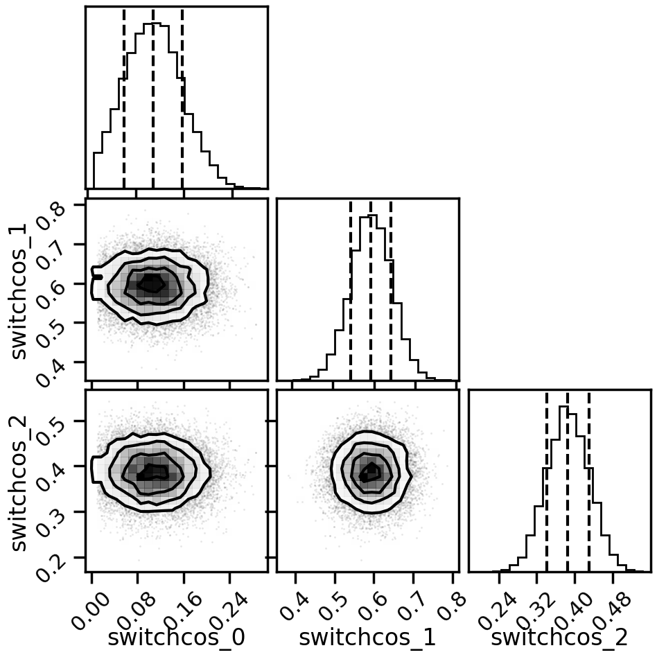

Bivariate Linear Bayesian Model Mixing with SAMBA toy models¶
This notebook shows how to use the Bayesian model mixing package Taweret for a toy problem.
Author : Dan Liyanage
Date : 11/10/2022
More about SAMBA toy models can be found in Uncertainties here, there, and everywhere: interpolating between small- and large-g expansions using Bayesian Model Mixing
Steps for Bayesian Model Mixing with Taweret¶
1. Define your models using BayesModel class in `Taweret.core.bayesmodel` (Only if you want to bring in your own models)
2. Choose a Mixing method (Avilable mixing methods can be found in Taweret/mix)
3. Find the posterior for the mixture weights (parameters in the mixture function) and/or model parameters by training the mixed model.
4. Make predictions!
[1]:
import sys
# You will have to change the following imports depending on where you have
# the packages installed
sys.path.append("/Users/dananjayaliyanage/git/Taweret")
sys.path.append("/Users/dananjayaliyanage/git/SAMBA")
# For plotting
import matplotlib.pyplot as plt
import seaborn as sns
sns.set_context('poster')
# To define priors. (uncoment if not using default priors)
import bilby
# For other operations
import numpy as np
1. Get toymodels and the psuedo-experimental data¶
[2]:
# Toy models from SAMBA
from Taweret.models import samba_models as toy_models
m1 = toy_models.loworder(2, 'uninformative')
m2 = toy_models.highorder(2, 'uninformative')
truth = toy_models.true_model()
exp = toy_models.exp_data()
[3]:
g = np.linspace(0.1, 0.6, 10)
plot_g = np.linspace(0.01,1,100)
m1_prediction = m1.evaluate(plot_g)
m2_prediction = m2.evaluate(plot_g)
true_output = truth.evaluate(plot_g)
exp_data= exp.evaluate(g,error = 0.01)
[4]:
fig, ax_f = plt.subplots(figsize=(10,10))
ax_f.plot(plot_g, m1_prediction[0].flatten(), label='low order')
ax_f.plot(plot_g, m2_prediction[0].flatten(), label='high order')
ax_f.plot(plot_g, true_output[0], label='truth')
ax_f.scatter(g,exp_data[0], marker='x', label='experimental data')
ax_f.set_ylim(1.2,3.2)
ax_f.legend()
[4]:
<matplotlib.legend.Legend at 0x7fc684ea0fa0>

2. Choose a Mixing method¶
[5]:
# Mixing method
from Taweret.mix.bivariate_linear import BivariateLinear as BL
models= {'low_order':m1,'high_order':m2}
mix_model = BL(models_dic=models, method='switchcos')
switchcos mixing function has 3 free parameter(s)
Warning : Default prior is set to {'switchcos_0': Uniform(minimum=0, maximum=1, name='switchcos_0', latex_label='switchcos_0', unit=None, boundary=None), 'switchcos_1': Uniform(minimum=0, maximum=1, name='switchcos_1', latex_label='switchcos_1', unit=None, boundary=None), 'switchcos_2': Uniform(minimum=0, maximum=1, name='switchcos_2', latex_label='switchcos_2', unit=None, boundary=None)}
To change the prior use `set_prior` method
Need to speceify a constained prior for switchcos. g1 < g3 < g2¶
We follow Bilby documentation on how to specefy a prior with constraints https://lscsoft.docs.ligo.org/bilby/prior.html#prior-constraints
[6]:
#uncoment to change the prior from the default
def convert_x_y_to_z(parameters):
"""
Function to convert between sampled parameters and constraint parameter.
Parameters
----------
parameters: dict
Dictionary containing sampled parameter values, 'theta_0', 'theta_1', 'theta_2'.
Returns
-------
dict: Dictionary with constraint parameter 'z_0, z_1' added.
"""
converted_parameters = parameters.copy()
converted_parameters['z_0'] = parameters['switchcos_2'] - parameters['switchcos_0']
converted_parameters['z_1'] = parameters['switchcos_1'] - parameters['switchcos_2']
return converted_parameters
from bilby.core.prior import PriorDict, Uniform, Constraint, TruncatedNormal
priors = PriorDict(conversion_function=convert_x_y_to_z)
# priors['theta_0'] = Uniform(minimum=0.0, maximum=0.3)
# priors['theta_1'] = Uniform(minimum=0.0, maximum=0.55)
# priors['theta_2'] = Uniform(minimum=0.0, maximum=0.8)
priors['switchcos_0'] = TruncatedNormal(0.1, 0.05, 0.01, 0.3)
priors['switchcos_1'] = TruncatedNormal(0.6, 0.05, 0, 0.8)
priors['switchcos_2'] = TruncatedNormal(0.4, 0.05, 0, 0.55)
priors['z_0'] = Constraint(minimum=0, maximum=1)
priors['z_1'] = Constraint(minimum=0, maximum=1)
mix_model.set_prior(priors)
[6]:
{'switchcos_0': TruncatedNormal(mu=0.1, sigma=0.05, minimum=0.01, maximum=0.3, name=None, latex_label=None, unit=None, boundary=None),
'switchcos_1': TruncatedNormal(mu=0.6, sigma=0.05, minimum=0, maximum=0.8, name=None, latex_label=None, unit=None, boundary=None),
'switchcos_2': TruncatedNormal(mu=0.4, sigma=0.05, minimum=0, maximum=0.55, name=None, latex_label=None, unit=None, boundary=None),
'z_0': Constraint(minimum=0, maximum=1, name=None, latex_label=None, unit=None),
'z_1': Constraint(minimum=0, maximum=1, name=None, latex_label=None, unit=None)}
3. Train to find posterior¶
[7]:
mix_model.prior
[7]:
{'switchcos_0': TruncatedNormal(mu=0.1, sigma=0.05, minimum=0.01, maximum=0.3, name=None, latex_label=None, unit=None, boundary=None),
'switchcos_1': TruncatedNormal(mu=0.6, sigma=0.05, minimum=0, maximum=0.8, name=None, latex_label=None, unit=None, boundary=None),
'switchcos_2': TruncatedNormal(mu=0.4, sigma=0.05, minimum=0, maximum=0.55, name=None, latex_label=None, unit=None, boundary=None),
'z_0': Constraint(minimum=0, maximum=1, name=None, latex_label=None, unit=None),
'z_1': Constraint(minimum=0, maximum=1, name=None, latex_label=None, unit=None)}
[8]:
result = mix_model.train(x_exp=g, y_exp=exp_data[0], y_err=exp_data[1],outdir = 'samba_bivariate', label='switchcos_mix')
13:31 bilby INFO : Running for label 'switchcos_mix', output will be saved to 'samba_bivariate'
The following Default settings for sampler will be used. You can changethese arguments by providing kwargs_for_sampler argement in `train`.Check Bilby documentation for other sampling options.
{'sampler': 'ptemcee', 'ntemps': 5, 'nwalkers': 20, 'Tmax': 100, 'burn_in_fixed_discard': 200, 'nsamples': 5000}
13:31 bilby INFO : Analysis priors:
13:31 bilby INFO : switchcos_0=TruncatedNormal(mu=0.1, sigma=0.05, minimum=0.01, maximum=0.3, name=None, latex_label=None, unit=None, boundary=None)
13:31 bilby INFO : switchcos_1=TruncatedNormal(mu=0.6, sigma=0.05, minimum=0, maximum=0.8, name=None, latex_label=None, unit=None, boundary=None)
13:31 bilby INFO : switchcos_2=TruncatedNormal(mu=0.4, sigma=0.05, minimum=0, maximum=0.55, name=None, latex_label=None, unit=None, boundary=None)
13:31 bilby INFO : z_0=Constraint(minimum=0, maximum=1, name=None, latex_label=None, unit=None)
13:31 bilby INFO : z_1=Constraint(minimum=0, maximum=1, name=None, latex_label=None, unit=None)
13:31 bilby INFO : Analysis likelihood class: <class 'Taweret.sampler.likelihood_wrappers.likelihood_wrapper_for_bilby'>
13:31 bilby INFO : Analysis likelihood noise evidence: nan
13:31 bilby INFO : Single likelihood evaluation took 6.490e-04 s
13:31 bilby INFO : Using sampler Ptemcee with kwargs {'ntemps': 5, 'nwalkers': 20, 'Tmax': 100, 'betas': None, 'a': 2.0, 'adaptation_lag': 10000, 'adaptation_time': 100, 'random': None, 'adapt': False, 'swap_ratios': False}
13:31 bilby INFO : Using convergence inputs: ConvergenceInputs(autocorr_c=5, autocorr_tol=50, autocorr_tau=1, gradient_tau=0.1, gradient_mean_log_posterior=0.1, Q_tol=1.02, safety=1, burn_in_nact=50, burn_in_fixed_discard=200, mean_logl_frac=0.01, thin_by_nact=0.5, nsamples=5000, ignore_keys_for_tau=None, min_tau=1, niterations_per_check=5)
13:31 bilby INFO : Generating pos0 samples
13:31 bilby INFO : Starting to sample
1|0:00:00|nc:5.0e+02|a0:0.20-0.80|swp:0.85-0.98|n:nan<5000|t!nan(+nan,+nan)|q:inf|0.60ms/ev
2|0:00:00|nc:1.0e+03|a0:0.40-0.80|swp:0.84-0.98|n:nan<5000|t!nan(+nan,+nan)|q:inf|0.59ms/ev
3|0:00:00|nc:1.5e+03|a0:0.47-0.73|swp:0.85-0.99|n:nan<5000|t!nan(+nan,+nan)|q:inf|0.59ms/ev
4|0:00:01|nc:2.0e+03|a0:0.50-0.70|swp:0.87-0.98|n:nan<5000|t!nan(+nan,+nan)|q:inf|0.59ms/ev
5|0:00:01|nc:2.5e+03|a0:0.52-0.72|swp:0.87-0.99|n:nan<5000|t!nan(+nan,+nan)|q:inf|0.59ms/ev
6|0:00:01|nc:3.0e+03|a0:0.50-0.73|swp:0.86-0.99|n:nan<5000|t!nan(+nan,+nan)|q:inf|0.59ms/ev
7|0:00:02|nc:3.5e+03|a0:0.51-0.71|swp:0.86-0.99|n:nan<5000|t!nan(+nan,+nan)|q:inf|0.60ms/ev
8|0:00:02|nc:4.0e+03|a0:0.50-0.70|swp:0.87-0.99|n:nan<5000|t!nan(+nan,+nan)|q:inf|0.61ms/ev
9|0:00:02|nc:4.5e+03|a0:0.51-0.71|swp:0.87-0.99|n:nan<5000|t!nan(+nan,+nan)|q:inf|0.62ms/ev
10|0:00:03|nc:5.0e+03|a0:0.52-0.72|swp:0.87-0.99|n:nan<5000|t!nan(+nan,+nan)|q:inf|0.63ms/ev
11|0:00:03|nc:5.5e+03|a0:0.53-0.73|swp:0.86-0.99|n:nan<5000|t!nan(+nan,+nan)|q:inf|0.63ms/ev
12|0:00:03|nc:6.0e+03|a0:0.50-0.72|swp:0.86-0.99|n:nan<5000|t!nan(+nan,+nan)|q:inf|0.62ms/ev
13|0:00:03|nc:6.5e+03|a0:0.52-0.71|swp:0.85-0.99|n:nan<5000|t!nan(+nan,+nan)|q:inf|0.60ms/ev
14|0:00:04|nc:7.0e+03|a0:0.53-0.70|swp:0.85-0.99|n:nan<5000|t!nan(+nan,+nan)|q:inf|0.59ms/ev
15|0:00:04|nc:7.5e+03|a0:0.53-0.71|swp:0.85-0.99|n:nan<5000|t!nan(+nan,+nan)|q:inf|0.61ms/ev
16|0:00:04|nc:8.0e+03|a0:0.55-0.71|swp:0.85-0.99|n:nan<5000|t!nan(+nan,+nan)|q:inf|0.60ms/ev
17|0:00:05|nc:8.5e+03|a0:0.55-0.72|swp:0.86-0.99|n:nan<5000|t!nan(+nan,+nan)|q:inf|0.60ms/ev
18|0:00:05|nc:9.0e+03|a0:0.54-0.73|swp:0.86-0.99|n:nan<5000|t!nan(+nan,+nan)|q:inf|0.59ms/ev
19|0:00:05|nc:9.5e+03|a0:0.54-0.74|swp:0.86-0.99|n:nan<5000|t!nan(+nan,+nan)|q:inf|0.60ms/ev
20|0:00:06|nc:1.0e+04|a0:0.54-0.75|swp:0.86-0.99|n:nan<5000|t!nan(+nan,+nan)|q:inf|0.62ms/ev
21|0:00:06|nc:1.0e+04|a0:0.54-0.75|swp:0.86-0.99|n:nan<5000|t!nan(+nan,+nan)|q:inf|0.62ms/ev
22|0:00:06|nc:1.1e+04|a0:0.54-0.74|swp:0.86-0.99|n:nan<5000|t!nan(+nan,+nan)|q:inf|0.63ms/ev
23|0:00:06|nc:1.2e+04|a0:0.54-0.73|swp:0.86-0.99|n:nan<5000|t!nan(+nan,+nan)|q:inf|0.62ms/ev
24|0:00:07|nc:1.2e+04|a0:0.53-0.72|swp:0.86-0.99|n:nan<5000|t!nan(+nan,+nan)|q:inf|0.63ms/ev
25|0:00:07|nc:1.2e+04|a0:0.54-0.71|swp:0.86-0.99|n:nan<5000|t!nan(+nan,+nan)|q:inf|0.63ms/ev
26|0:00:07|nc:1.3e+04|a0:0.54-0.72|swp:0.86-0.99|n:nan<5000|t!nan(+nan,+nan)|q:inf|0.64ms/ev
27|0:00:08|nc:1.4e+04|a0:0.56-0.71|swp:0.87-0.99|n:nan<5000|t!nan(+nan,+nan)|q:inf|0.63ms/ev
28|0:00:08|nc:1.4e+04|a0:0.56-0.70|swp:0.86-0.99|n:nan<5000|t!nan(+nan,+nan)|q:inf|0.62ms/ev
29|0:00:08|nc:1.4e+04|a0:0.54-0.70|swp:0.86-0.99|n:nan<5000|t!nan(+nan,+nan)|q:inf|0.60ms/ev
30|0:00:09|nc:1.5e+04|a0:0.53-0.70|swp:0.86-0.99|n:nan<5000|t!nan(+nan,+nan)|q:inf|0.61ms/ev
31|0:00:09|nc:1.6e+04|a0:0.55-0.70|swp:0.86-0.99|n:nan<5000|t!nan(+nan,+nan)|q:inf|0.62ms/ev
32|0:00:09|nc:1.6e+04|a0:0.55-0.71|swp:0.86-0.99|n:nan<5000|t!nan(+nan,+nan)|q:inf|0.61ms/ev
33|0:00:10|nc:1.6e+04|a0:0.56-0.70|swp:0.86-0.99|n:nan<5000|t!nan(+nan,+nan)|q:inf|0.60ms/ev
34|0:00:10|nc:1.7e+04|a0:0.56-0.69|swp:0.86-0.99|n:nan<5000|t!nan(+nan,+nan)|q:inf|0.59ms/ev
35|0:00:10|nc:1.8e+04|a0:0.55-0.67|swp:0.86-0.99|n:nan<5000|t!nan(+nan,+nan)|q:inf|0.59ms/ev
36|0:00:10|nc:1.8e+04|a0:0.56-0.68|swp:0.86-0.99|n:nan<5000|t!nan(+nan,+nan)|q:inf|0.59ms/ev
37|0:00:11|nc:1.8e+04|a0:0.56-0.68|swp:0.86-0.99|n:nan<5000|t!nan(+nan,+nan)|q:inf|0.59ms/ev
38|0:00:11|nc:1.9e+04|a0:0.56-0.68|swp:0.86-0.99|n:nan<5000|t!nan(+nan,+nan)|q:inf|0.58ms/ev
39|0:00:11|nc:2.0e+04|a0:0.57-0.68|swp:0.86-0.99|n:nan<5000|t!nan(+nan,+nan)|q:inf|0.58ms/ev
40|0:00:12|nc:2.0e+04|a0:0.57-0.68|swp:0.86-0.99|n:nan<5000|t!nan(+nan,+nan)|q:inf|0.58ms/ev
41|0:00:12|nc:2.0e+04|a0:0.56-0.68|swp:0.86-0.99|n:nan<5000|t!nan(+nan,+nan)|q:inf|0.58ms/ev
42|0:00:12|nc:2.1e+04|a0:0.57-0.68|swp:0.86-0.99|n:nan<5000|t!nan(+nan,+nan)|q:inf|0.58ms/ev
43|0:00:12|nc:2.2e+04|a0:0.58-0.68|swp:0.86-0.99|n:nan<5000|t!nan(+nan,+nan)|q:inf|0.58ms/ev
44|0:00:13|nc:2.2e+04|a0:0.57-0.67|swp:0.86-0.99|n:nan<5000|t!nan(+nan,+nan)|q:inf|0.58ms/ev
45|0:00:13|nc:2.2e+04|a0:0.57-0.68|swp:0.86-0.99|n:nan<5000|t!nan(+nan,+nan)|q:inf|0.58ms/ev
46|0:00:13|nc:2.3e+04|a0:0.57-0.68|swp:0.86-0.99|n:nan<5000|t!nan(+nan,+nan)|q:inf|0.58ms/ev
47|0:00:14|nc:2.4e+04|a0:0.57-0.68|swp:0.86-0.99|n:nan<5000|t!nan(+nan,+nan)|q:inf|0.58ms/ev
48|0:00:14|nc:2.4e+04|a0:0.57-0.68|swp:0.86-0.99|n:nan<5000|t!nan(+nan,+nan)|q:inf|0.58ms/ev
49|0:00:14|nc:2.4e+04|a0:0.58-0.68|swp:0.86-0.99|n:nan<5000|t!nan(+nan,+nan)|q:inf|0.58ms/ev
50|0:00:15|nc:2.5e+04|a0:0.58-0.68|swp:0.85-0.99|n:nan<5000|t!nan(+nan,+nan)|q:inf|0.59ms/ev
51|0:00:15|nc:2.6e+04|a0:0.59-0.68|swp:0.85-0.99|n:nan<5000|t!nan(+nan,+nan)|q:inf|0.59ms/ev
52|0:00:15|nc:2.6e+04|a0:0.58-0.68|swp:0.85-0.99|n:nan<5000|t!nan(+nan,+nan)|q:inf|0.58ms/ev
53|0:00:15|nc:2.6e+04|a0:0.58-0.69|swp:0.85-0.99|n:nan<5000|t!nan(+nan,+nan)|q:inf|0.58ms/ev
54|0:00:16|nc:2.7e+04|a0:0.58-0.68|swp:0.85-0.99|n:nan<5000|t!nan(+nan,+nan)|q:inf|0.58ms/ev
55|0:00:16|nc:2.8e+04|a0:0.58-0.68|swp:0.85-0.99|n:nan<5000|t!nan(+nan,+nan)|q:inf|0.59ms/ev
56|0:00:16|nc:2.8e+04|a0:0.58-0.68|swp:0.85-0.99|n:nan<5000|t!nan(+nan,+nan)|q:inf|0.59ms/ev
57|0:00:17|nc:2.8e+04|a0:0.58-0.68|swp:0.85-0.99|n:nan<5000|t!nan(+nan,+nan)|q:inf|0.58ms/ev
58|0:00:17|nc:2.9e+04|a0:0.57-0.68|swp:0.85-0.99|n:nan<5000|t!nan(+nan,+nan)|q:inf|0.58ms/ev
59|0:00:17|nc:3.0e+04|a0:0.58-0.68|swp:0.85-0.99|n:nan<5000|t!nan(+nan,+nan)|q:inf|0.58ms/ev
60|0:00:17|nc:3.0e+04|a0:0.58-0.69|swp:0.85-0.99|n:nan<5000|t!nan(+nan,+nan)|q:inf|0.59ms/ev
61|0:00:18|nc:3.0e+04|a0:0.58-0.69|swp:0.85-0.99|n:nan<5000|t!nan(+nan,+nan)|q:inf|0.59ms/ev
62|0:00:18|nc:3.1e+04|a0:0.58-0.69|swp:0.85-0.99|n:nan<5000|t!nan(+nan,+nan)|q:inf|0.59ms/ev
63|0:00:18|nc:3.2e+04|a0:0.58-0.69|swp:0.85-0.99|n:nan<5000|t!nan(+nan,+nan)|q:inf|0.59ms/ev
64|0:00:19|nc:3.2e+04|a0:0.58-0.68|swp:0.86-0.99|n:nan<5000|t!nan(+nan,+nan)|q:inf|0.59ms/ev
65|0:00:19|nc:3.2e+04|a0:0.59-0.68|swp:0.86-0.99|n:nan<5000|t!nan(+nan,+nan)|q:inf|0.58ms/ev
66|0:00:19|nc:3.3e+04|a0:0.59-0.68|swp:0.86-0.99|n:nan<5000|t!nan(+nan,+nan)|q:inf|0.58ms/ev
67|0:00:19|nc:3.4e+04|a0:0.59-0.68|swp:0.85-0.99|n:nan<5000|t!nan(+nan,+nan)|q:inf|0.58ms/ev
68|0:00:20|nc:3.4e+04|a0:0.59-0.68|swp:0.85-0.99|n:nan<5000|t!nan(+nan,+nan)|q:inf|0.58ms/ev
69|0:00:20|nc:3.4e+04|a0:0.59-0.68|swp:0.85-0.99|n:nan<5000|t!nan(+nan,+nan)|q:inf|0.57ms/ev
70|0:00:20|nc:3.5e+04|a0:0.60-0.68|swp:0.85-0.99|n:nan<5000|t!nan(+nan,+nan)|q:inf|0.57ms/ev
71|0:00:21|nc:3.6e+04|a0:0.59-0.68|swp:0.85-0.99|n:nan<5000|t!nan(+nan,+nan)|q:inf|0.58ms/ev
72|0:00:21|nc:3.6e+04|a0:0.59-0.68|swp:0.85-0.99|n:nan<5000|t!nan(+nan,+nan)|q:inf|0.58ms/ev
73|0:00:21|nc:3.6e+04|a0:0.59-0.68|swp:0.85-0.99|n:nan<5000|t!nan(+nan,+nan)|q:inf|0.58ms/ev
74|0:00:21|nc:3.7e+04|a0:0.59-0.68|swp:0.85-0.99|n:nan<5000|t!nan(+nan,+nan)|q:inf|0.58ms/ev
75|0:00:22|nc:3.8e+04|a0:0.59-0.68|swp:0.85-0.99|n:nan<5000|t!nan(+nan,+nan)|q:inf|0.58ms/ev
76|0:00:22|nc:3.8e+04|a0:0.59-0.68|swp:0.85-0.99|n:nan<5000|t!nan(+nan,+nan)|q:inf|0.58ms/ev
77|0:00:22|nc:3.8e+04|a0:0.59-0.68|swp:0.85-0.99|n:nan<5000|t!nan(+nan,+nan)|q:inf|0.58ms/ev
78|0:00:23|nc:3.9e+04|a0:0.59-0.68|swp:0.85-0.99|n:nan<5000|t!nan(+nan,+nan)|q:inf|0.58ms/ev
79|0:00:23|nc:4.0e+04|a0:0.59-0.68|swp:0.85-0.99|n:nan<5000|t!nan(+nan,+nan)|q:inf|0.58ms/ev
80|0:00:23|nc:4.0e+04|a0:0.59-0.68|swp:0.85-0.99|n:nan<5000|t!nan(+nan,+nan)|q:inf|0.58ms/ev
81|0:00:24|nc:4.0e+04|a0:0.60-0.68|swp:0.85-0.99|n:nan<5000|t!nan(+nan,+nan)|q:inf|0.58ms/ev
82|0:00:24|nc:4.1e+04|a0:0.60-0.67|swp:0.85-0.99|n:nan<5000|t!nan(+nan,+nan)|q:inf|0.59ms/ev
83|0:00:24|nc:4.2e+04|a0:0.59-0.67|swp:0.85-0.99|n:nan<5000|t!nan(+nan,+nan)|q:inf|0.58ms/ev
84|0:00:24|nc:4.2e+04|a0:0.59-0.67|swp:0.85-0.99|n:nan<5000|t!nan(+nan,+nan)|q:inf|0.58ms/ev
85|0:00:25|nc:4.2e+04|a0:0.59-0.67|swp:0.85-0.99|n:nan<5000|t!nan(+nan,+nan)|q:inf|0.58ms/ev
86|0:00:25|nc:4.3e+04|a0:0.59-0.67|swp:0.85-0.99|n:nan<5000|t!nan(+nan,+nan)|q:inf|0.58ms/ev
87|0:00:25|nc:4.4e+04|a0:0.59-0.67|swp:0.85-0.99|n:nan<5000|t!nan(+nan,+nan)|q:inf|0.58ms/ev
88|0:00:26|nc:4.4e+04|a0:0.59-0.67|swp:0.85-0.99|n:nan<5000|t!nan(+nan,+nan)|q:inf|0.58ms/ev
89|0:00:26|nc:4.4e+04|a0:0.59-0.67|swp:0.85-0.99|n:nan<5000|t!nan(+nan,+nan)|q:inf|0.58ms/ev
90|0:00:26|nc:4.5e+04|a0:0.59-0.67|swp:0.85-0.99|n:nan<5000|t!nan(+nan,+nan)|q:inf|0.58ms/ev
91|0:00:26|nc:4.6e+04|a0:0.59-0.67|swp:0.85-0.99|n:nan<5000|t!nan(+nan,+nan)|q:inf|0.58ms/ev
92|0:00:27|nc:4.6e+04|a0:0.59-0.67|swp:0.85-0.99|n:nan<5000|t!nan(+nan,+nan)|q:inf|0.58ms/ev
93|0:00:27|nc:4.6e+04|a0:0.59-0.67|swp:0.85-0.99|n:nan<5000|t!nan(+nan,+nan)|q:inf|0.58ms/ev
94|0:00:27|nc:4.7e+04|a0:0.59-0.67|swp:0.85-0.99|n:nan<5000|t!nan(+nan,+nan)|q:inf|0.59ms/ev
95|0:00:28|nc:4.8e+04|a0:0.59-0.67|swp:0.85-0.99|n:nan<5000|t!nan(+nan,+nan)|q:inf|0.58ms/ev
96|0:00:28|nc:4.8e+04|a0:0.59-0.67|swp:0.85-0.99|n:nan<5000|t!nan(+nan,+nan)|q:inf|0.58ms/ev
97|0:00:28|nc:4.8e+04|a0:0.59-0.67|swp:0.85-0.99|n:nan<5000|t!nan(+nan,+nan)|q:inf|0.57ms/ev
98|0:00:28|nc:4.9e+04|a0:0.59-0.67|swp:0.85-0.99|n:nan<5000|t!nan(+nan,+nan)|q:inf|0.58ms/ev
99|0:00:29|nc:5.0e+04|a0:0.59-0.67|swp:0.85-0.99|n:nan<5000|t!nan(+nan,+nan)|q:inf|0.58ms/ev
100|0:00:29|nc:5.0e+04|a0:0.59-0.67|swp:0.85-0.99|n:nan<5000|t!nan(+nan,+nan)|q:inf|0.59ms/ev
101|0:00:29|nc:5.0e+04|a0:0.59-0.67|swp:0.86-0.99|n:nan<5000|t!nan(+nan,+nan)|q:inf|0.59ms/ev
102|0:00:30|nc:5.1e+04|a0:0.58-0.67|swp:0.85-0.99|n:nan<5000|t!nan(+nan,+nan)|q:inf|0.59ms/ev
103|0:00:30|nc:5.2e+04|a0:0.59-0.67|swp:0.85-0.99|n:nan<5000|t!nan(+nan,+nan)|q:inf|0.58ms/ev
104|0:00:30|nc:5.2e+04|a0:0.58-0.68|swp:0.85-0.99|n:nan<5000|t!nan(+nan,+nan)|q:inf|0.58ms/ev
105|0:00:31|nc:5.2e+04|a0:0.59-0.67|swp:0.85-0.99|n:nan<5000|t!nan(+nan,+nan)|q:inf|0.58ms/ev
106|0:00:31|nc:5.3e+04|a0:0.58-0.67|swp:0.85-0.99|n:nan<5000|t!nan(+nan,+nan)|q:inf|0.58ms/ev
107|0:00:31|nc:5.4e+04|a0:0.59-0.67|swp:0.85-0.99|n:nan<5000|t!nan(+nan,+nan)|q:inf|0.58ms/ev
108|0:00:31|nc:5.4e+04|a0:0.59-0.67|swp:0.85-0.99|n:nan<5000|t!nan(+nan,+nan)|q:inf|0.59ms/ev
109|0:00:32|nc:5.4e+04|a0:0.58-0.67|swp:0.85-0.99|n:nan<5000|t!nan(+nan,+nan)|q:inf|0.59ms/ev
110|0:00:32|nc:5.5e+04|a0:0.58-0.67|swp:0.85-0.99|n:nan<5000|t!nan(+nan,+nan)|q:inf|0.59ms/ev
111|0:00:32|nc:5.6e+04|a0:0.59-0.67|swp:0.85-0.99|n:nan<5000|t!nan(+nan,+nan)|q:inf|0.58ms/ev
112|0:00:33|nc:5.6e+04|a0:0.59-0.67|swp:0.85-0.99|n:nan<5000|t!nan(+nan,+nan)|q:inf|0.58ms/ev
113|0:00:33|nc:5.6e+04|a0:0.59-0.67|swp:0.85-0.99|n:nan<5000|t!nan(+nan,+nan)|q:inf|0.58ms/ev
114|0:00:33|nc:5.7e+04|a0:0.59-0.67|swp:0.85-0.99|n:nan<5000|t!nan(+nan,+nan)|q:inf|0.58ms/ev
115|0:00:33|nc:5.8e+04|a0:0.59-0.67|swp:0.85-0.99|n:nan<5000|t!nan(+nan,+nan)|q:inf|0.58ms/ev
116|0:00:34|nc:5.8e+04|a0:0.59-0.67|swp:0.85-0.99|n:nan<5000|t!nan(+nan,+nan)|q:inf|0.59ms/ev
117|0:00:34|nc:5.8e+04|a0:0.59-0.67|swp:0.85-0.99|n:nan<5000|t!nan(+nan,+nan)|q:inf|0.58ms/ev
118|0:00:34|nc:5.9e+04|a0:0.59-0.67|swp:0.85-0.99|n:nan<5000|t!nan(+nan,+nan)|q:inf|0.58ms/ev
119|0:00:35|nc:6.0e+04|a0:0.59-0.67|swp:0.85-0.99|n:nan<5000|t!nan(+nan,+nan)|q:inf|0.58ms/ev
120|0:00:35|nc:6.0e+04|a0:0.59-0.67|swp:0.85-0.99|n:nan<5000|t!nan(+nan,+nan)|q:inf|0.58ms/ev
121|0:00:35|nc:6.0e+04|a0:0.59-0.67|swp:0.85-0.99|n:nan<5000|t!nan(+nan,+nan)|q:inf|0.58ms/ev
122|0:00:35|nc:6.1e+04|a0:0.59-0.67|swp:0.85-0.99|n:nan<5000|t!nan(+nan,+nan)|q:inf|0.58ms/ev
123|0:00:36|nc:6.2e+04|a0:0.60-0.67|swp:0.85-0.99|n:nan<5000|t!nan(+nan,+nan)|q:inf|0.57ms/ev
124|0:00:36|nc:6.2e+04|a0:0.60-0.67|swp:0.85-0.99|n:nan<5000|t!nan(+nan,+nan)|q:inf|0.57ms/ev
125|0:00:36|nc:6.2e+04|a0:0.60-0.67|swp:0.85-0.99|n:nan<5000|t!nan(+nan,+nan)|q:inf|0.57ms/ev
126|0:00:37|nc:6.3e+04|a0:0.60-0.67|swp:0.85-0.99|n:nan<5000|t!nan(+nan,+nan)|q:inf|0.58ms/ev
127|0:00:37|nc:6.4e+04|a0:0.60-0.67|swp:0.85-0.99|n:nan<5000|t!nan(+nan,+nan)|q:inf|0.58ms/ev
128|0:00:37|nc:6.4e+04|a0:0.59-0.67|swp:0.85-0.99|n:nan<5000|t!nan(+nan,+nan)|q:inf|0.59ms/ev
129|0:00:37|nc:6.4e+04|a0:0.60-0.67|swp:0.85-0.99|n:nan<5000|t!nan(+nan,+nan)|q:inf|0.60ms/ev
130|0:00:38|nc:6.5e+04|a0:0.60-0.66|swp:0.86-0.99|n:nan<5000|t!nan(+nan,+nan)|q:inf|0.59ms/ev
131|0:00:38|nc:6.6e+04|a0:0.60-0.66|swp:0.86-0.99|n:nan<5000|t!nan(+nan,+nan)|q:inf|0.59ms/ev
132|0:00:38|nc:6.6e+04|a0:0.59-0.67|swp:0.85-0.99|n:nan<5000|t!nan(+nan,+nan)|q:inf|0.64ms/ev
133|0:00:39|nc:6.6e+04|a0:0.59-0.66|swp:0.85-0.99|n:nan<5000|t!nan(+nan,+nan)|q:inf|0.65ms/ev
134|0:00:39|nc:6.7e+04|a0:0.60-0.66|swp:0.85-0.99|n:nan<5000|t!nan(+nan,+nan)|q:inf|0.65ms/ev
135|0:00:39|nc:6.8e+04|a0:0.60-0.67|swp:0.85-0.99|n:nan<5000|t!nan(+nan,+nan)|q:inf|0.60ms/ev
136|0:00:40|nc:6.8e+04|a0:0.60-0.67|swp:0.85-0.99|n:nan<5000|t!nan(+nan,+nan)|q:inf|0.60ms/ev
137|0:00:40|nc:6.8e+04|a0:0.60-0.67|swp:0.85-0.99|n:nan<5000|t!nan(+nan,+nan)|q:inf|0.65ms/ev
138|0:00:40|nc:6.9e+04|a0:0.60-0.67|swp:0.85-0.99|n:nan<5000|t!nan(+nan,+nan)|q:inf|0.68ms/ev
139|0:00:41|nc:7.0e+04|a0:0.60-0.67|swp:0.85-0.99|n:nan<5000|t!nan(+nan,+nan)|q:inf|0.70ms/ev
140|0:00:41|nc:7.0e+04|a0:0.60-0.67|swp:0.85-0.99|n:nan<5000|t!nan(+nan,+nan)|q:inf|0.64ms/ev
141|0:00:41|nc:7.0e+04|a0:0.60-0.67|swp:0.85-0.99|n:nan<5000|t!nan(+nan,+nan)|q:inf|0.62ms/ev
142|0:00:42|nc:7.1e+04|a0:0.60-0.67|swp:0.85-0.99|n:nan<5000|t!nan(+nan,+nan)|q:inf|0.60ms/ev
143|0:00:42|nc:7.2e+04|a0:0.60-0.67|swp:0.85-0.99|n:nan<5000|t!nan(+nan,+nan)|q:inf|0.60ms/ev
144|0:00:42|nc:7.2e+04|a0:0.60-0.67|swp:0.85-0.99|n:nan<5000|t!nan(+nan,+nan)|q:inf|0.60ms/ev
145|0:00:43|nc:7.2e+04|a0:0.61-0.66|swp:0.85-0.99|n:nan<5000|t!nan(+nan,+nan)|q:inf|0.61ms/ev
146|0:00:43|nc:7.3e+04|a0:0.61-0.66|swp:0.85-0.99|n:nan<5000|t!nan(+nan,+nan)|q:inf|0.61ms/ev
147|0:00:43|nc:7.4e+04|a0:0.61-0.66|swp:0.85-0.99|n:nan<5000|t!nan(+nan,+nan)|q:inf|0.59ms/ev
148|0:00:43|nc:7.4e+04|a0:0.61-0.66|swp:0.85-0.99|n:nan<5000|t!nan(+nan,+nan)|q:inf|0.59ms/ev
149|0:00:44|nc:7.4e+04|a0:0.61-0.66|swp:0.85-0.99|n:nan<5000|t!nan(+nan,+nan)|q:inf|0.59ms/ev
150|0:00:44|nc:7.5e+04|a0:0.61-0.66|swp:0.85-0.99|n:nan<5000|t!nan(+nan,+nan)|q:inf|0.59ms/ev
151|0:00:44|nc:7.6e+04|a0:0.61-0.66|swp:0.85-0.99|n:nan<5000|t!nan(+nan,+nan)|q:inf|0.58ms/ev
152|0:00:45|nc:7.6e+04|a0:0.61-0.66|swp:0.85-0.99|n:nan<5000|t!nan(+nan,+nan)|q:inf|0.58ms/ev
153|0:00:45|nc:7.6e+04|a0:0.61-0.66|swp:0.85-0.99|n:nan<5000|t!nan(+nan,+nan)|q:inf|0.59ms/ev
154|0:00:45|nc:7.7e+04|a0:0.61-0.66|swp:0.85-0.99|n:nan<5000|t!nan(+nan,+nan)|q:inf|0.61ms/ev
155|0:00:45|nc:7.8e+04|a0:0.61-0.66|swp:0.86-0.99|n:nan<5000|t!nan(+nan,+nan)|q:inf|0.62ms/ev
156|0:00:46|nc:7.8e+04|a0:0.61-0.66|swp:0.86-0.99|n:nan<5000|t!nan(+nan,+nan)|q:inf|0.60ms/ev
157|0:00:46|nc:7.8e+04|a0:0.60-0.66|swp:0.85-0.99|n:nan<5000|t!nan(+nan,+nan)|q:inf|0.60ms/ev
158|0:00:46|nc:7.9e+04|a0:0.60-0.66|swp:0.85-0.99|n:nan<5000|t!nan(+nan,+nan)|q:inf|0.60ms/ev
159|0:00:47|nc:8.0e+04|a0:0.60-0.66|swp:0.86-0.99|n:nan<5000|t!nan(+nan,+nan)|q:inf|0.61ms/ev
160|0:00:47|nc:8.0e+04|a0:0.60-0.66|swp:0.85-0.99|n:nan<5000|t!nan(+nan,+nan)|q:inf|0.60ms/ev
161|0:00:47|nc:8.0e+04|a0:0.60-0.66|swp:0.86-0.99|n:nan<5000|t!nan(+nan,+nan)|q:inf|0.60ms/ev
162|0:00:48|nc:8.1e+04|a0:0.60-0.66|swp:0.85-0.99|n:nan<5000|t!nan(+nan,+nan)|q:inf|0.59ms/ev
163|0:00:48|nc:8.2e+04|a0:0.60-0.66|swp:0.85-0.99|n:nan<5000|t!nan(+nan,+nan)|q:inf|0.59ms/ev
164|0:00:48|nc:8.2e+04|a0:0.60-0.65|swp:0.85-0.99|n:nan<5000|t!nan(+nan,+nan)|q:inf|0.59ms/ev
165|0:00:48|nc:8.2e+04|a0:0.60-0.65|swp:0.85-0.99|n:nan<5000|t!nan(+nan,+nan)|q:inf|0.60ms/ev
166|0:00:49|nc:8.3e+04|a0:0.60-0.65|swp:0.85-0.99|n:nan<5000|t!nan(+nan,+nan)|q:inf|0.60ms/ev
167|0:00:49|nc:8.4e+04|a0:0.60-0.65|swp:0.85-0.99|n:nan<5000|t!nan(+nan,+nan)|q:inf|0.60ms/ev
168|0:00:49|nc:8.4e+04|a0:0.60-0.65|swp:0.85-0.99|n:nan<5000|t!nan(+nan,+nan)|q:inf|0.59ms/ev
169|0:00:50|nc:8.4e+04|a0:0.60-0.65|swp:0.85-0.99|n:nan<5000|t!nan(+nan,+nan)|q:inf|0.58ms/ev
170|0:00:50|nc:8.5e+04|a0:0.60-0.65|swp:0.85-0.99|n:nan<5000|t!nan(+nan,+nan)|q:inf|0.58ms/ev
171|0:00:50|nc:8.6e+04|a0:0.60-0.65|swp:0.85-0.99|n:nan<5000|t!nan(+nan,+nan)|q:inf|0.58ms/ev
172|0:00:51|nc:8.6e+04|a0:0.60-0.65|swp:0.85-0.99|n:nan<5000|t!nan(+nan,+nan)|q:inf|0.58ms/ev
173|0:00:51|nc:8.6e+04|a0:0.60-0.65|swp:0.85-0.99|n:nan<5000|t!nan(+nan,+nan)|q:inf|0.58ms/ev
174|0:00:51|nc:8.7e+04|a0:0.60-0.66|swp:0.85-0.99|n:nan<5000|t!nan(+nan,+nan)|q:inf|0.58ms/ev
175|0:00:51|nc:8.8e+04|a0:0.60-0.66|swp:0.85-0.99|n:nan<5000|t!nan(+nan,+nan)|q:inf|0.58ms/ev
176|0:00:52|nc:8.8e+04|a0:0.60-0.66|swp:0.85-0.99|n:nan<5000|t!nan(+nan,+nan)|q:inf|0.58ms/ev
177|0:00:52|nc:8.8e+04|a0:0.60-0.66|swp:0.85-0.99|n:nan<5000|t!nan(+nan,+nan)|q:inf|0.59ms/ev
178|0:00:52|nc:8.9e+04|a0:0.60-0.66|swp:0.85-0.99|n:nan<5000|t!nan(+nan,+nan)|q:inf|0.59ms/ev
179|0:00:53|nc:9.0e+04|a0:0.60-0.66|swp:0.85-0.99|n:nan<5000|t!nan(+nan,+nan)|q:inf|0.59ms/ev
180|0:00:53|nc:9.0e+04|a0:0.60-0.66|swp:0.85-0.99|n:nan<5000|t!nan(+nan,+nan)|q:inf|0.58ms/ev
181|0:00:53|nc:9.0e+04|a0:0.60-0.66|swp:0.85-0.99|n:nan<5000|t!nan(+nan,+nan)|q:inf|0.58ms/ev
182|0:00:53|nc:9.1e+04|a0:0.60-0.66|swp:0.85-0.99|n:nan<5000|t!nan(+nan,+nan)|q:inf|0.58ms/ev
183|0:00:54|nc:9.2e+04|a0:0.60-0.66|swp:0.85-0.99|n:nan<5000|t!nan(+nan,+nan)|q:inf|0.58ms/ev
184|0:00:54|nc:9.2e+04|a0:0.60-0.66|swp:0.85-0.99|n:nan<5000|t!nan(+nan,+nan)|q:inf|0.58ms/ev
185|0:00:54|nc:9.2e+04|a0:0.60-0.65|swp:0.85-0.99|n:nan<5000|t!nan(+nan,+nan)|q:inf|0.58ms/ev
186|0:00:55|nc:9.3e+04|a0:0.60-0.65|swp:0.85-0.99|n:nan<5000|t!nan(+nan,+nan)|q:inf|0.58ms/ev
187|0:00:55|nc:9.4e+04|a0:0.60-0.65|swp:0.86-0.99|n:nan<5000|t!nan(+nan,+nan)|q:inf|0.58ms/ev
188|0:00:55|nc:9.4e+04|a0:0.60-0.66|swp:0.86-0.99|n:nan<5000|t!nan(+nan,+nan)|q:inf|0.58ms/ev
189|0:00:55|nc:9.4e+04|a0:0.61-0.66|swp:0.85-0.99|n:nan<5000|t!nan(+nan,+nan)|q:inf|0.58ms/ev
190|0:00:56|nc:9.5e+04|a0:0.61-0.66|swp:0.85-0.99|n:nan<5000|t!nan(+nan,+nan)|q:inf|0.58ms/ev
191|0:00:56|nc:9.6e+04|a0:0.61-0.66|swp:0.85-0.99|n:nan<5000|t!nan(+nan,+nan)|q:inf|0.60ms/ev
192|0:00:56|nc:9.6e+04|a0:0.61-0.66|swp:0.85-0.99|n:nan<5000|t!nan(+nan,+nan)|q:inf|0.61ms/ev
193|0:00:57|nc:9.6e+04|a0:0.61-0.66|swp:0.85-0.99|n:nan<5000|t!nan(+nan,+nan)|q:inf|0.61ms/ev
194|0:00:57|nc:9.7e+04|a0:0.60-0.66|swp:0.85-0.99|n:nan<5000|t!nan(+nan,+nan)|q:inf|0.61ms/ev
195|0:00:57|nc:9.8e+04|a0:0.61-0.66|swp:0.85-0.99|n:nan<5000|t!nan(+nan,+nan)|q:inf|0.62ms/ev
196|0:00:58|nc:9.8e+04|a0:0.61-0.66|swp:0.85-0.99|n:nan<5000|t!nan(+nan,+nan)|q:inf|0.62ms/ev
197|0:00:58|nc:9.8e+04|a0:0.61-0.65|swp:0.85-0.99|n:nan<5000|t!nan(+nan,+nan)|q:inf|0.64ms/ev
198|0:00:58|nc:9.9e+04|a0:0.61-0.66|swp:0.85-0.99|n:nan<5000|t!nan(+nan,+nan)|q:inf|0.61ms/ev
199|0:00:58|nc:1.0e+05|a0:0.61-0.66|swp:0.85-0.99|n:nan<5000|t!nan(+nan,+nan)|q:inf|0.60ms/ev
200|0:00:59|nc:1.0e+05|a0:0.61-0.65|swp:0.85-0.99|n:nan<5000|t!nan(+nan,+nan)|q:inf|0.59ms/ev
201|0:00:59|nc:1.0e+05|a0:0.61-0.65|swp:0.85-0.99|n:nan<5000|t!nan(+nan,+nan)|q:inf|0.60ms/ev
202|0:00:59|nc:1.0e+05|a0:0.61-0.65|swp:0.86-0.99|n:nan<5000|t!nan(+nan,+nan)|q:inf|0.61ms/ev
203|0:01:00|nc:1.0e+05|a0:0.60-0.66|swp:0.86-0.99|n:nan<5000|t!nan(+nan,+nan)|q:inf|0.60ms/ev
204|0:01:00|nc:1.0e+05|a0:0.60-0.66|swp:0.86-0.99|n:nan<5000|t!nan(+nan,+nan)|q:inf|0.60ms/ev
205|0:01:00|nc:1.0e+05|a0:0.60-0.66|swp:0.86-0.99|n:nan<5000|t!nan(+nan,+nan)|q:inf|0.60ms/ev
206|0:01:01|nc:1.0e+05|a0:0.60-0.66|swp:0.86-0.99|n:nan<5000|t!nan(+nan,+nan)|q:inf|0.60ms/ev
207|0:01:01|nc:1.0e+05|a0:0.60-0.66|swp:0.86-0.99|n:nan<5000|t!nan(+nan,+nan)|q:inf|0.61ms/ev
208|0:01:01|nc:1.0e+05|a0:0.61-0.66|swp:0.86-0.99|n:nan<5000|t!nan(+nan,+nan)|q:inf|0.60ms/ev
209|0:01:01|nc:1.0e+05|a0:0.61-0.66|swp:0.86-0.99|n:nan<5000|t!nan(+nan,+nan)|q:inf|0.59ms/ev
210|0:01:02|nc:1.0e+05|a0:0.61-0.66|swp:0.86-0.99|n:nan<5000|t!nan(+nan,+nan)|q:inf|0.58ms/ev
211|0:01:02|nc:1.1e+05|a0:0.61-0.66|swp:0.86-0.99|n:nan<5000|t!nan(+nan,+nan)|q:inf|0.58ms/ev
212|0:01:02|nc:1.1e+05|a0:0.61-0.66|swp:0.86-0.99|n:nan<5000|t!nan(+nan,+nan)|q:inf|0.59ms/ev
213|0:01:03|nc:1.1e+05|a0:0.61-0.66|swp:0.86-0.99|n:nan<5000|t!nan(+nan,+nan)|q:inf|0.60ms/ev
214|0:01:03|nc:1.1e+05|a0:0.61-0.66|swp:0.86-0.99|n:nan<5000|t!nan(+nan,+nan)|q:inf|0.60ms/ev
215|0:01:03|nc:1.1e+05|a0:0.61-0.66|swp:0.86-0.99|n:nan<5000|t!nan(+nan,+nan)|q:inf|0.59ms/ev
216|0:01:04|nc:1.1e+05|a0:0.61-0.66|swp:0.86-0.99|n:nan<5000|t!nan(+nan,+nan)|q:inf|0.59ms/ev
217|0:01:04|nc:1.1e+05|a0:0.61-0.66|swp:0.86-0.99|n:nan<5000|t!nan(+nan,+nan)|q:inf|0.58ms/ev
218|0:01:04|nc:1.1e+05|a0:0.61-0.66|swp:0.86-0.99|n:nan<5000|t!nan(+nan,+nan)|q:inf|0.58ms/ev
219|0:01:04|nc:1.1e+05|a0:0.61-0.66|swp:0.86-0.99|n:nan<5000|t!nan(+nan,+nan)|q:inf|0.58ms/ev
220|0:01:05|nc:1.1e+05|a0:0.61-0.66|swp:0.86-0.99|n:nan<5000|t!nan(+nan,+nan)|q:inf|0.59ms/ev
221|0:01:05|nc:1.1e+05|a0:0.61-0.66|swp:0.86-0.99|n:-580<5000|t!1(+nan,+0.67)|q:1.00|0.63ms/ev
222|0:01:05|nc:1.1e+05|a0:0.61-0.66|swp:0.86-0.99|n:-560<5000|t!1(+nan,+0.38)|q:1.00|0.66ms/ev
223|0:01:06|nc:1.1e+05|a0:0.61-0.67|swp:0.86-0.99|n:-540<5000|t!1(+nan,+0.38)|q:1.00|0.65ms/ev
224|0:01:06|nc:1.1e+05|a0:0.61-0.67|swp:0.86-0.99|n:-520<5000|t!1(+nan,+0.30)|q:1.00|0.63ms/ev
225|0:01:06|nc:1.1e+05|a0:0.61-0.66|swp:0.86-0.99|n:-500<5000|t!1(+nan,+0.35)|q:1.00|0.60ms/ev
226|0:01:07|nc:1.1e+05|a0:0.61-0.67|swp:0.86-0.99|n:-480<5000|t!1(+nan,+0.25)|q:1.00|0.61ms/ev
227|0:01:07|nc:1.1e+05|a0:0.61-0.66|swp:0.86-0.99|n:-460<5000|t!1(+nan,+0.44)|q:1.00|0.61ms/ev
228|0:01:07|nc:1.1e+05|a0:0.61-0.66|swp:0.86-0.99|n:-440<5000|t!1(+nan,+0.52)|q:1.00|0.60ms/ev
229|0:01:08|nc:1.1e+05|a0:0.61-0.66|swp:0.86-0.99|n:-420<5000|t!1(+nan,+0.41)|q:1.00|0.60ms/ev
230|0:01:08|nc:1.2e+05|a0:0.61-0.66|swp:0.86-0.99|n:-400<5000|t!1(+0.05,+0.30)|q:1.00|0.61ms/ev
231|0:01:08|nc:1.2e+05|a0:0.61-0.66|swp:0.86-0.99|n:-380<5000|t!1(+0.07,+0.45)|q:1.00|0.61ms/ev
232|0:01:08|nc:1.2e+05|a0:0.61-0.66|swp:0.86-0.99|n:-360<5000|t!1(+0.06,+0.61)|q:1.00|0.60ms/ev
233|0:01:09|nc:1.2e+05|a0:0.61-0.66|swp:0.86-0.99|n:-340<5000|t!1(+0.04,+0.46)|q:1.00|0.60ms/ev
234|0:01:09|nc:1.2e+05|a0:0.61-0.66|swp:0.86-0.99|n:nan<5000|t!nan(+nan,+nan)|q:inf|0.59ms/ev
235|0:01:09|nc:1.2e+05|a0:0.61-0.66|swp:0.86-0.99|n:nan<5000|t!nan(+nan,+nan)|q:inf|0.59ms/ev
236|0:01:10|nc:1.2e+05|a0:0.61-0.66|swp:0.86-0.99|n:nan<5000|t!nan(+nan,+nan)|q:inf|0.59ms/ev
237|0:01:10|nc:1.2e+05|a0:0.61-0.66|swp:0.86-0.99|n:nan<5000|t!nan(+nan,+nan)|q:inf|0.59ms/ev
238|0:01:10|nc:1.2e+05|a0:0.61-0.66|swp:0.86-0.99|n:nan<5000|t!nan(+nan,+nan)|q:inf|0.60ms/ev
239|0:01:11|nc:1.2e+05|a0:0.61-0.66|swp:0.86-0.99|n:nan<5000|t!nan(+nan,+nan)|q:inf|0.60ms/ev
240|0:01:11|nc:1.2e+05|a0:0.61-0.66|swp:0.86-0.99|n:nan<5000|t!nan(+nan,+nan)|q:inf|0.59ms/ev
241|0:01:11|nc:1.2e+05|a0:0.61-0.66|swp:0.86-0.99|n:nan<5000|t!nan(+nan,+nan)|q:inf|0.60ms/ev
242|0:01:11|nc:1.2e+05|a0:0.61-0.66|swp:0.86-0.99|n:nan<5000|t!nan(+nan,+nan)|q:inf|0.60ms/ev
243|0:01:12|nc:1.2e+05|a0:0.61-0.66|swp:0.86-0.99|n:nan<5000|t!nan(+nan,+nan)|q:inf|0.60ms/ev
244|0:01:12|nc:1.2e+05|a0:0.61-0.66|swp:0.86-0.99|n:nan<5000|t!nan(+nan,+nan)|q:inf|0.59ms/ev
245|0:01:12|nc:1.2e+05|a0:0.61-0.66|swp:0.86-0.99|n:nan<5000|t!nan(+nan,+nan)|q:inf|0.59ms/ev
246|0:01:13|nc:1.2e+05|a0:0.61-0.66|swp:0.86-0.99|n:nan<5000|t!nan(+nan,+nan)|q:inf|0.59ms/ev
247|0:01:13|nc:1.2e+05|a0:0.61-0.66|swp:0.86-0.99|n:nan<5000|t!nan(+nan,+nan)|q:inf|0.59ms/ev
248|0:01:13|nc:1.2e+05|a0:0.61-0.66|swp:0.86-0.99|n:nan<5000|t!nan(+nan,+nan)|q:inf|0.59ms/ev
249|0:01:13|nc:1.2e+05|a0:0.61-0.66|swp:0.86-0.99|n:nan<5000|t!nan(+nan,+nan)|q:inf|0.59ms/ev
250|0:01:14|nc:1.2e+05|a0:0.61-0.66|swp:0.86-0.99|n:nan<5000|t!nan(+nan,+nan)|q:inf|0.59ms/ev
251|0:01:14|nc:1.3e+05|a0:0.61-0.66|swp:0.86-0.99|n:nan<5000|t!nan(+nan,+nan)|q:inf|0.59ms/ev
252|0:01:14|nc:1.3e+05|a0:0.61-0.66|swp:0.86-0.99|n:nan<5000|t!nan(+nan,+nan)|q:inf|0.59ms/ev
253|0:01:15|nc:1.3e+05|a0:0.61-0.66|swp:0.86-0.99|n:-580<5000|t!1(+nan,+0.30)|q:1.01|0.58ms/ev
254|0:01:15|nc:1.3e+05|a0:0.61-0.66|swp:0.86-0.99|n:-560<5000|t!1(+nan,+0.39)|q:1.01|0.59ms/ev
255|0:01:15|nc:1.3e+05|a0:0.61-0.66|swp:0.86-0.99|n:-540<5000|t!1(+nan,+0.61)|q:1.01|0.59ms/ev
256|0:01:16|nc:1.3e+05|a0:0.61-0.66|swp:0.86-0.99|n:-520<5000|t!1(+nan,+0.52)|q:1.01|0.60ms/ev
257|0:01:16|nc:1.3e+05|a0:0.61-0.66|swp:0.86-0.99|n:-500<5000|t!1(+nan,+0.22)|q:1.01|0.60ms/ev
258|0:01:16|nc:1.3e+05|a0:0.61-0.66|swp:0.86-0.99|n:-480<5000|t!1(+nan,+0.47)|q:1.00|0.60ms/ev
259|0:01:16|nc:1.3e+05|a0:0.61-0.66|swp:0.86-0.99|n:-460<5000|t!1(+nan,+0.38)|q:1.01|0.60ms/ev
260|0:01:17|nc:1.3e+05|a0:0.61-0.66|swp:0.86-0.99|n:-440<5000|t!1(+nan,+0.60)|q:1.01|0.59ms/ev
261|0:01:17|nc:1.3e+05|a0:0.61-0.66|swp:0.86-0.99|n:-420<5000|t!1(+nan,+0.60)|q:1.01|0.59ms/ev
262|0:01:17|nc:1.3e+05|a0:0.61-0.66|swp:0.86-0.99|n:-400<5000|t!1(+0.10,+0.41)|q:1.01|0.59ms/ev
263|0:01:18|nc:1.3e+05|a0:0.61-0.66|swp:0.86-0.99|n:-380<5000|t!1(+0.05,+0.30)|q:1.01|0.58ms/ev
264|0:01:18|nc:1.3e+05|a0:0.61-0.66|swp:0.86-0.99|n:-360<5000|t!1(+0.04,+0.39)|q:1.01|0.59ms/ev
265|0:01:18|nc:1.3e+05|a0:0.61-0.66|swp:0.86-0.99|n:-340<5000|t!1(+0.07,+0.42)|q:1.01|0.59ms/ev
266|0:01:19|nc:1.3e+05|a0:0.61-0.66|swp:0.86-0.99|n:-320<5000|t!1(+0.07,+0.47)|q:1.01|0.60ms/ev
267|0:01:19|nc:1.3e+05|a0:0.61-0.66|swp:0.86-0.99|n:-300<5000|t!1(+0.04,+0.52)|q:1.01|0.60ms/ev
268|0:01:19|nc:1.3e+05|a0:0.61-0.66|swp:0.86-0.99|n:-280<5000|t!1(+0.06,+0.53)|q:1.01|0.59ms/ev
269|0:01:19|nc:1.3e+05|a0:0.61-0.66|swp:0.86-0.99|n:-260<5000|t!1(+0.08,+0.55)|q:1.01|0.59ms/ev
270|0:01:20|nc:1.4e+05|a0:0.61-0.66|swp:0.86-0.99|n:-240<5000|t!1(+0.12,+0.44)|q:1.01|0.59ms/ev
271|0:01:20|nc:1.4e+05|a0:0.61-0.66|swp:0.86-0.99|n:-220<5000|t!1(+0.07,+0.53)|q:1.01|0.59ms/ev
272|0:01:20|nc:1.4e+05|a0:0.61-0.66|swp:0.86-0.99|n:-200<5000|t!1(+0.07,+0.25)|q:1.01|0.59ms/ev
273|0:01:21|nc:1.4e+05|a0:0.61-0.66|swp:0.86-0.99|n:-180<5000|t!1(+0.05,+0.27)|q:1.01|0.59ms/ev
274|0:01:21|nc:1.4e+05|a0:0.61-0.66|swp:0.86-0.99|n:-160<5000|t!1(+0.05,+0.74)|q:1.00|0.60ms/ev
275|0:01:21|nc:1.4e+05|a0:0.61-0.66|swp:0.86-0.99|n:-140<5000|t!1(+0.05,+0.52)|q:1.00|0.60ms/ev
276|0:01:21|nc:1.4e+05|a0:0.61-0.66|swp:0.86-0.99|n:-120<5000|t!1(+0.05,+0.30)|q:1.00|0.60ms/ev
277|0:01:22|nc:1.4e+05|a0:0.61-0.66|swp:0.86-0.99|n:-100<5000|t!1(+0.11,+0.15)|q:1.00|0.60ms/ev
278|0:01:22|nc:1.4e+05|a0:0.61-0.66|swp:0.86-0.99|n:-80<5000|t!1(+0.08,+0.26)|q:1.00|0.59ms/ev
279|0:01:22|nc:1.4e+05|a0:0.61-0.66|swp:0.86-0.99|n:-60<5000|t!1(+0.05,+0.53)|q:1.01|0.59ms/ev
280|0:01:23|nc:1.4e+05|a0:0.61-0.66|swp:0.86-0.99|n:-40<5000|t!1(+0.08,+0.55)|q:1.01|0.59ms/ev
281|0:01:23|nc:1.4e+05|a0:0.61-0.66|swp:0.86-0.99|n:-20<5000|t!1(+0.07,+0.38)|q:1.00|0.60ms/ev
282|0:01:23|nc:1.4e+05|a0:0.61-0.66|swp:0.86-0.99|n:0<5000|t!1(+0.03,+0.77)|q:1.00|0.60ms/ev
283|0:01:24|nc:1.4e+05|a0:0.60-0.66|swp:0.86-0.99|n:20<5000|t!1(+0.04,+0.49)|q:1.00|0.61ms/ev
284|0:01:24|nc:1.4e+05|a0:0.61-0.66|swp:0.86-0.99|n:40<5000|t!1(+0.04,+0.30)|q:1.00|0.61ms/ev
285|0:01:24|nc:1.4e+05|a0:0.61-0.66|swp:0.86-0.99|n:60<5000|t!1(+0.04,+0.29)|q:1.00|0.60ms/ev
286|0:01:24|nc:1.4e+05|a0:0.61-0.66|swp:0.86-0.99|n:80<5000|t!1(+0.03,+0.44)|q:1.00|0.61ms/ev
287|0:01:25|nc:1.4e+05|a0:0.61-0.66|swp:0.86-0.99|n:100<5000|t!1(+0.05,+0.57)|q:1.00|0.60ms/ev
288|0:01:25|nc:1.4e+05|a0:0.61-0.66|swp:0.86-0.99|n:120<5000|t!1(+0.09,+0.51)|q:1.00|0.61ms/ev
289|0:01:25|nc:1.4e+05|a0:0.61-0.66|swp:0.86-0.99|n:140<5000|t!1(+0.03,+0.76)|q:1.00|0.61ms/ev
290|0:01:26|nc:1.4e+05|a0:0.61-0.66|swp:0.86-0.99|n:160<5000|t!1(+0.05,+0.59)|q:1.00|0.61ms/ev
291|0:01:26|nc:1.5e+05|a0:0.61-0.66|swp:0.86-0.99|n:180<5000|t!1(+0.03,+0.30)|q:1.00|0.61ms/ev
292|0:01:26|nc:1.5e+05|a0:0.61-0.66|swp:0.86-0.99|n:200<5000|t!1(+0.03,+0.42)|q:1.00|0.60ms/ev
293|0:01:27|nc:1.5e+05|a0:0.61-0.66|swp:0.86-0.99|n:220<5000|t!1(+0.04,+0.15)|q:1.00|0.60ms/ev
294|0:01:27|nc:1.5e+05|a0:0.61-0.66|swp:0.86-0.99|n:240<5000|t!1(+0.05,+0.16)|q:1.00|0.59ms/ev
295|0:01:27|nc:1.5e+05|a0:0.61-0.66|swp:0.86-0.99|n:260<5000|t!1(+0.05,+0.44)|q:1.00|0.59ms/ev
296|0:01:27|nc:1.5e+05|a0:0.61-0.66|swp:0.86-0.99|n:280<5000|t!1(+0.03,+0.42)|q:1.00|0.59ms/ev
297|0:01:28|nc:1.5e+05|a0:0.61-0.66|swp:0.86-0.99|n:300<5000|t!1(+0.02,+0.32)|q:1.00|0.62ms/ev
298|0:01:28|nc:1.5e+05|a0:0.61-0.66|swp:0.86-0.99|n:320<5000|t!1(+0.02,+0.41)|q:1.00|0.62ms/ev
299|0:01:28|nc:1.5e+05|a0:0.61-0.66|swp:0.86-0.99|n:340<5000|t!1(+0.03,+0.35)|q:1.00|0.62ms/ev
300|0:01:29|nc:1.5e+05|a0:0.61-0.66|swp:0.86-0.99|n:360<5000|t!1(+0.04,+0.27)|q:1.00|0.60ms/ev
301|0:01:29|nc:1.5e+05|a0:0.61-0.66|swp:0.86-0.99|n:380<5000|t!1(+0.05,+0.22)|q:1.00|0.60ms/ev
302|0:01:29|nc:1.5e+05|a0:0.61-0.66|swp:0.86-0.99|n:400<5000|t!1(+0.02,+0.41)|q:1.00|0.59ms/ev
303|0:01:30|nc:1.5e+05|a0:0.61-0.65|swp:0.86-0.99|n:420<5000|t!1(+0.02,+0.45)|q:1.00|0.59ms/ev
304|0:01:30|nc:1.5e+05|a0:0.61-0.65|swp:0.86-0.99|n:nan<5000|t!nan(+nan,+nan)|q:inf|0.61ms/ev
305|0:01:30|nc:1.5e+05|a0:0.61-0.66|swp:0.86-0.99|n:nan<5000|t!nan(+nan,+nan)|q:inf|0.60ms/ev
306|0:01:30|nc:1.5e+05|a0:0.61-0.66|swp:0.86-0.99|n:nan<5000|t!nan(+nan,+nan)|q:inf|0.59ms/ev
307|0:01:31|nc:1.5e+05|a0:0.61-0.66|swp:0.86-0.99|n:nan<5000|t!nan(+nan,+nan)|q:inf|0.58ms/ev
308|0:01:31|nc:1.5e+05|a0:0.61-0.66|swp:0.86-0.99|n:nan<5000|t!nan(+nan,+nan)|q:inf|0.59ms/ev
309|0:01:31|nc:1.5e+05|a0:0.61-0.66|swp:0.86-0.99|n:nan<5000|t!nan(+nan,+nan)|q:inf|0.59ms/ev
310|0:01:32|nc:1.6e+05|a0:0.61-0.66|swp:0.86-0.99|n:nan<5000|t!nan(+nan,+nan)|q:inf|0.59ms/ev
311|0:01:32|nc:1.6e+05|a0:0.61-0.66|swp:0.86-0.99|n:nan<5000|t!nan(+nan,+nan)|q:inf|0.60ms/ev
312|0:01:32|nc:1.6e+05|a0:0.61-0.66|swp:0.86-0.99|n:nan<5000|t!nan(+nan,+nan)|q:inf|0.60ms/ev
313|0:01:33|nc:1.6e+05|a0:0.61-0.66|swp:0.86-0.99|n:nan<5000|t!nan(+nan,+nan)|q:inf|0.60ms/ev
314|0:01:33|nc:1.6e+05|a0:0.61-0.66|swp:0.86-0.99|n:nan<5000|t!nan(+nan,+nan)|q:inf|0.59ms/ev
315|0:01:33|nc:1.6e+05|a0:0.61-0.66|swp:0.86-0.99|n:nan<5000|t!nan(+nan,+nan)|q:inf|0.59ms/ev
316|0:01:33|nc:1.6e+05|a0:0.61-0.66|swp:0.86-0.99|n:nan<5000|t!nan(+nan,+nan)|q:inf|0.59ms/ev
317|0:01:34|nc:1.6e+05|a0:0.61-0.65|swp:0.86-0.99|n:nan<5000|t!nan(+nan,+nan)|q:inf|0.58ms/ev
318|0:01:34|nc:1.6e+05|a0:0.61-0.65|swp:0.86-0.99|n:nan<5000|t!nan(+nan,+nan)|q:inf|0.58ms/ev
319|0:01:34|nc:1.6e+05|a0:0.61-0.65|swp:0.86-0.99|n:nan<5000|t!nan(+nan,+nan)|q:inf|0.58ms/ev
320|0:01:35|nc:1.6e+05|a0:0.61-0.65|swp:0.86-0.99|n:nan<5000|t!nan(+nan,+nan)|q:inf|0.58ms/ev
321|0:01:35|nc:1.6e+05|a0:0.61-0.65|swp:0.86-0.99|n:nan<5000|t!nan(+nan,+nan)|q:inf|0.58ms/ev
322|0:01:35|nc:1.6e+05|a0:0.61-0.65|swp:0.86-0.99|n:nan<5000|t!nan(+nan,+nan)|q:inf|0.58ms/ev
323|0:01:35|nc:1.6e+05|a0:0.61-0.65|swp:0.86-0.99|n:-580<5000|t!1(+nan,+0.42)|q:1.03|0.59ms/ev
324|0:01:36|nc:1.6e+05|a0:0.61-0.65|swp:0.86-0.99|n:-560<5000|t!1(+nan,+0.57)|q:1.02|0.59ms/ev
325|0:01:36|nc:1.6e+05|a0:0.61-0.65|swp:0.86-0.99|n:-540<5000|t!1(+nan,+0.73)|q:1.02|0.59ms/ev
326|0:01:36|nc:1.6e+05|a0:0.61-0.66|swp:0.86-0.99|n:-520<5000|t!1(+nan,+0.31)|q:1.01|0.59ms/ev
327|0:01:37|nc:1.6e+05|a0:0.61-0.65|swp:0.86-0.99|n:-500<5000|t!1(+nan,+0.49)|q:1.01|0.59ms/ev
328|0:01:37|nc:1.6e+05|a0:0.61-0.65|swp:0.86-0.99|n:-480<5000|t!1(+nan,+0.35)|q:1.01|0.60ms/ev
329|0:01:37|nc:1.6e+05|a0:0.61-0.65|swp:0.86-0.99|n:-460<5000|t!1(+nan,+0.49)|q:1.01|0.60ms/ev
330|0:01:38|nc:1.6e+05|a0:0.61-0.65|swp:0.86-0.99|n:-440<5000|t!1(+nan,+0.43)|q:1.01|0.60ms/ev
331|0:01:38|nc:1.7e+05|a0:0.61-0.65|swp:0.86-0.99|n:-420<5000|t!1(+nan,+0.24)|q:1.01|0.60ms/ev
332|0:01:38|nc:1.7e+05|a0:0.61-0.65|swp:0.86-0.99|n:-400<5000|t!1(+0.05,+0.46)|q:1.00|0.60ms/ev
333|0:01:38|nc:1.7e+05|a0:0.61-0.65|swp:0.86-0.99|n:-1380<5000|t!2(+0.08,+0.24)|q:1.00|0.60ms/ev
334|0:01:39|nc:1.7e+05|a0:0.61-0.65|swp:0.86-0.99|n:-360<5000|t!1(+0.07,+0.46)|q:1.00|0.60ms/ev
335|0:01:39|nc:1.7e+05|a0:0.61-0.65|swp:0.86-0.99|n:-340<5000|t!1(+0.10,+0.42)|q:1.00|0.60ms/ev
336|0:01:39|nc:1.7e+05|a0:0.61-0.65|swp:0.86-0.99|n:-320<5000|t!1(+0.05,+0.34)|q:1.00|0.60ms/ev
337|0:01:40|nc:1.7e+05|a0:0.61-0.65|swp:0.86-0.99|n:-300<5000|t!1(+0.04,+0.22)|q:1.00|0.60ms/ev
338|0:01:40|nc:1.7e+05|a0:0.61-0.65|swp:0.86-0.99|n:-1280<5000|t!2(+0.03,+0.27)|q:1.00|0.60ms/ev
339|0:01:40|nc:1.7e+05|a0:0.61-0.65|swp:0.86-0.99|n:-1260<5000|t!2(+0.04,+0.42)|q:1.00|0.60ms/ev
340|0:01:41|nc:1.7e+05|a0:0.61-0.65|swp:0.86-0.99|n:-1240<5000|t!2(+0.02,+0.22)|q:1.00|0.59ms/ev
341|0:01:41|nc:1.7e+05|a0:0.61-0.65|swp:0.86-0.99|n:-220<5000|t!1(+0.07,+0.45)|q:1.00|0.59ms/ev
342|0:01:41|nc:1.7e+05|a0:0.61-0.65|swp:0.86-0.99|n:-200<5000|t!1(+0.05,+0.51)|q:1.00|0.58ms/ev
343|0:01:41|nc:1.7e+05|a0:0.61-0.65|swp:0.86-0.99|n:-180<5000|t!1(+0.03,+0.20)|q:1.00|0.59ms/ev
344|0:01:42|nc:1.7e+05|a0:0.61-0.65|swp:0.86-0.99|n:-160<5000|t!1(+0.03,+0.28)|q:1.00|0.59ms/ev
345|0:01:42|nc:1.7e+05|a0:0.61-0.65|swp:0.86-0.99|n:-140<5000|t!1(+0.05,+0.27)|q:1.00|0.60ms/ev
346|0:01:42|nc:1.7e+05|a0:0.61-0.65|swp:0.86-0.99|n:-1120<5000|t!2(+0.07,+0.39)|q:1.00|0.61ms/ev
347|0:01:43|nc:1.7e+05|a0:0.61-0.65|swp:0.86-0.99|n:-1100<5000|t!2(+0.04,+0.11)|q:1.00|0.60ms/ev
348|0:01:43|nc:1.7e+05|a0:0.61-0.65|swp:0.86-0.99|n:-1080<5000|t!2(+0.08,+0.37)|q:1.00|0.60ms/ev
349|0:01:43|nc:1.7e+05|a0:0.61-0.65|swp:0.86-0.99|n:-1060<5000|t!2(+0.08,+0.29)|q:1.00|0.58ms/ev
350|0:01:44|nc:1.8e+05|a0:0.61-0.65|swp:0.86-0.99|n:-1040<5000|t!2(+0.07,+0.26)|q:1.00|0.58ms/ev
351|0:01:44|nc:1.8e+05|a0:0.61-0.65|swp:0.86-0.99|n:-1020<5000|t!2(+0.05,+0.50)|q:1.00|0.58ms/ev
352|0:01:44|nc:1.8e+05|a0:0.61-0.65|swp:0.86-0.99|n:-1000<5000|t!2(+0.05,+0.36)|q:1.00|0.59ms/ev
353|0:01:44|nc:1.8e+05|a0:0.61-0.65|swp:0.86-0.99|n:-980<5000|t!2(+0.04,+0.39)|q:1.00|0.60ms/ev
354|0:01:45|nc:1.8e+05|a0:0.61-0.65|swp:0.86-0.99|n:-960<5000|t!2(+0.07,+0.27)|q:1.00|0.60ms/ev
355|0:01:45|nc:1.8e+05|a0:0.61-0.65|swp:0.86-0.99|n:-940<5000|t!2(+0.06,+0.55)|q:1.00|0.59ms/ev
356|0:01:45|nc:1.8e+05|a0:0.61-0.65|swp:0.86-0.99|n:-920<5000|t!2(+0.06,+0.57)|q:1.00|0.59ms/ev
357|0:01:46|nc:1.8e+05|a0:0.61-0.65|swp:0.86-0.99|n:-900<5000|t!2(+0.07,+0.30)|q:1.00|0.59ms/ev
358|0:01:46|nc:1.8e+05|a0:0.61-0.65|swp:0.86-0.99|n:-880<5000|t!2(+0.05,+0.65)|q:1.00|0.59ms/ev
359|0:01:46|nc:1.8e+05|a0:0.61-0.65|swp:0.86-0.99|n:-860<5000|t!2(+0.07,+0.40)|q:1.00|0.59ms/ev
360|0:01:46|nc:1.8e+05|a0:0.61-0.65|swp:0.86-0.99|n:-840<5000|t!2(+0.06,+0.69)|q:1.00|0.60ms/ev
361|0:01:47|nc:1.8e+05|a0:0.61-0.65|swp:0.86-0.99|n:-820<5000|t!2(+0.06,+0.35)|q:1.00|0.60ms/ev
362|0:01:47|nc:1.8e+05|a0:0.61-0.65|swp:0.86-0.99|n:-800<5000|t!2(+0.05,+0.63)|q:1.00|0.58ms/ev
363|0:01:47|nc:1.8e+05|a0:0.61-0.65|swp:0.86-0.99|n:-780<5000|t!2(+0.07,+0.51)|q:1.00|0.58ms/ev
364|0:01:48|nc:1.8e+05|a0:0.61-0.65|swp:0.86-0.99|n:-760<5000|t!2(+0.06,+0.27)|q:1.00|0.58ms/ev
365|0:01:48|nc:1.8e+05|a0:0.61-0.65|swp:0.86-0.99|n:-740<5000|t!2(+0.04,+0.33)|q:1.00|0.59ms/ev
366|0:01:48|nc:1.8e+05|a0:0.61-0.65|swp:0.86-0.99|n:-720<5000|t!2(+0.03,+0.36)|q:1.00|0.59ms/ev
367|0:01:49|nc:1.8e+05|a0:0.61-0.65|swp:0.86-0.99|n:-700<5000|t!2(+0.05,+0.54)|q:1.00|0.58ms/ev
368|0:01:49|nc:1.8e+05|a0:0.61-0.65|swp:0.86-0.99|n:-680<5000|t!2(+0.07,+0.38)|q:1.00|0.59ms/ev
369|0:01:49|nc:1.8e+05|a0:0.61-0.65|swp:0.86-0.99|n:-660<5000|t!2(+0.04,+0.34)|q:1.00|0.59ms/ev
370|0:01:49|nc:1.8e+05|a0:0.61-0.65|swp:0.86-0.99|n:-640<5000|t!2(+0.04,+0.14)|q:1.00|0.59ms/ev
371|0:01:50|nc:1.9e+05|a0:0.61-0.65|swp:0.86-0.99|n:-620<5000|t!2(+0.05,+0.40)|q:1.00|0.60ms/ev
372|0:01:50|nc:1.9e+05|a0:0.61-0.65|swp:0.86-0.99|n:-600<5000|t!2(+0.06,+0.37)|q:1.00|0.60ms/ev
373|0:01:50|nc:1.9e+05|a0:0.61-0.65|swp:0.86-0.99|n:-580<5000|t!2(+0.06,+0.44)|q:1.00|0.60ms/ev
374|0:01:51|nc:1.9e+05|a0:0.61-0.65|swp:0.86-0.99|n:-560<5000|t!2(+0.02,+0.37)|q:1.00|0.59ms/ev
375|0:01:51|nc:1.9e+05|a0:0.61-0.65|swp:0.86-0.99|n:-540<5000|t!2(+0.02,+0.49)|q:1.00|0.59ms/ev
376|0:01:51|nc:1.9e+05|a0:0.61-0.65|swp:0.86-0.99|n:-520<5000|t!2(+0.01,+0.42)|q:1.00|0.58ms/ev
377|0:01:51|nc:1.9e+05|a0:0.61-0.65|swp:0.86-0.99|n:-500<5000|t!2(+0.01,+0.11)|q:1.00|0.59ms/ev
378|0:01:52|nc:1.9e+05|a0:0.61-0.65|swp:0.86-0.99|n:-480<5000|t!2(+0.02,+0.24)|q:1.00|0.59ms/ev
379|0:01:52|nc:1.9e+05|a0:0.61-0.65|swp:0.86-0.99|n:-460<5000|t!2(+0.06,+0.39)|q:1.00|0.60ms/ev
380|0:01:52|nc:1.9e+05|a0:0.61-0.65|swp:0.86-0.99|n:-440<5000|t!2(+0.03,+0.46)|q:1.00|0.60ms/ev
381|0:01:53|nc:1.9e+05|a0:0.61-0.65|swp:0.86-0.99|n:-420<5000|t!2(+0.02,+0.24)|q:1.00|0.62ms/ev
382|0:01:53|nc:1.9e+05|a0:0.61-0.65|swp:0.86-0.99|n:-400<5000|t!2(+0.02,+0.46)|q:1.00|0.63ms/ev
383|0:01:53|nc:1.9e+05|a0:0.61-0.65|swp:0.86-0.99|n:-380<5000|t!2(+0.02,+0.45)|q:1.00|0.63ms/ev
384|0:01:54|nc:1.9e+05|a0:0.61-0.65|swp:0.86-0.99|n:-360<5000|t!2(+0.03,+0.38)|q:1.00|0.62ms/ev
385|0:01:54|nc:1.9e+05|a0:0.61-0.65|swp:0.86-0.99|n:-340<5000|t!2(+0.02,+0.31)|q:1.00|0.61ms/ev
386|0:01:54|nc:1.9e+05|a0:0.61-0.65|swp:0.86-0.99|n:-320<5000|t!2(+0.01,+0.61)|q:1.00|0.61ms/ev
387|0:01:55|nc:1.9e+05|a0:0.61-0.65|swp:0.86-0.99|n:-300<5000|t!2(+0.02,+0.42)|q:1.00|0.61ms/ev
388|0:01:55|nc:1.9e+05|a0:0.61-0.65|swp:0.86-0.99|n:-280<5000|t!2(+0.03,+0.31)|q:1.00|0.60ms/ev
389|0:01:55|nc:1.9e+05|a0:0.61-0.65|swp:0.86-0.99|n:-260<5000|t!2(+0.02,+0.31)|q:1.00|0.60ms/ev
390|0:01:55|nc:2.0e+05|a0:0.61-0.65|swp:0.86-0.99|n:-240<5000|t!2(+0.02,+0.46)|q:1.00|0.61ms/ev
391|0:01:56|nc:2.0e+05|a0:0.61-0.65|swp:0.86-0.99|n:-220<5000|t!2(+0.02,+0.57)|q:1.00|0.60ms/ev
392|0:01:56|nc:2.0e+05|a0:0.61-0.65|swp:0.86-0.99|n:-200<5000|t!2(+0.06,+0.35)|q:1.00|0.60ms/ev
393|0:01:56|nc:2.0e+05|a0:0.61-0.65|swp:0.86-0.99|n:-180<5000|t!2(+0.02,+0.49)|q:1.00|0.59ms/ev
394|0:01:57|nc:2.0e+05|a0:0.61-0.65|swp:0.86-0.99|n:-160<5000|t!2(+0.02,+0.52)|q:1.00|0.60ms/ev
395|0:01:57|nc:2.0e+05|a0:0.61-0.65|swp:0.86-0.99|n:-140<5000|t!2(+0.05,+0.76)|q:1.00|0.60ms/ev
396|0:01:57|nc:2.0e+05|a0:0.61-0.65|swp:0.86-0.99|n:-120<5000|t!2(+0.02,+0.23)|q:1.00|0.60ms/ev
397|0:01:58|nc:2.0e+05|a0:0.61-0.65|swp:0.86-0.99|n:-100<5000|t!2(+0.03,+0.57)|q:1.00|0.60ms/ev
398|0:01:58|nc:2.0e+05|a0:0.61-0.65|swp:0.86-0.99|n:-80<5000|t!2(+0.03,+0.50)|q:1.00|0.60ms/ev
399|0:01:58|nc:2.0e+05|a0:0.61-0.65|swp:0.86-0.99|n:-60<5000|t!2(+0.05,+0.58)|q:1.00|0.60ms/ev
400|0:01:58|nc:2.0e+05|a0:0.61-0.65|swp:0.86-0.99|n:-40<5000|t!2(+0.04,+0.54)|q:1.00|0.60ms/ev
401|0:01:59|nc:2.0e+05|a0:0.61-0.65|swp:0.86-0.99|n:-20<5000|t!2(+0.03,+0.54)|q:1.00|0.60ms/ev
402|0:01:59|nc:2.0e+05|a0:0.61-0.65|swp:0.86-0.99|n:0<5000|t!2(+0.03,+0.63)|q:1.00|0.60ms/ev
403|0:01:59|nc:2.0e+05|a0:0.61-0.65|swp:0.86-0.99|n:20<5000|t!2(+0.02,+0.40)|q:1.00|0.60ms/ev
404|0:02:00|nc:2.0e+05|a0:0.61-0.65|swp:0.86-0.99|n:40<5000|t!2(+0.03,+0.63)|q:1.00|0.61ms/ev
405|0:02:00|nc:2.0e+05|a0:0.61-0.65|swp:0.86-0.99|n:60<5000|t!2(+0.04,+0.60)|q:1.00|0.61ms/ev
406|0:02:00|nc:2.0e+05|a0:0.61-0.65|swp:0.86-0.99|n:80<5000|t!2(+0.03,+0.30)|q:1.00|0.61ms/ev
407|0:02:01|nc:2.0e+05|a0:0.61-0.65|swp:0.86-0.99|n:100<5000|t!2(+0.04,+0.39)|q:1.00|0.60ms/ev
408|0:02:01|nc:2.0e+05|a0:0.61-0.65|swp:0.86-0.99|n:120<5000|t!2(+0.03,+0.52)|q:1.00|0.61ms/ev
409|0:02:01|nc:2.0e+05|a0:0.61-0.65|swp:0.86-0.99|n:140<5000|t!2(+0.03,+0.46)|q:1.00|0.61ms/ev
410|0:02:01|nc:2.0e+05|a0:0.61-0.65|swp:0.86-0.99|n:160<5000|t!2(+0.03,+0.56)|q:1.00|0.62ms/ev
411|0:02:02|nc:2.1e+05|a0:0.61-0.65|swp:0.86-0.99|n:180<5000|t!2(+0.03,+0.24)|q:1.00|0.62ms/ev
412|0:02:02|nc:2.1e+05|a0:0.61-0.65|swp:0.86-0.99|n:200<5000|t!2(+0.03,+0.24)|q:1.00|0.61ms/ev
413|0:02:02|nc:2.1e+05|a0:0.61-0.65|swp:0.86-0.99|n:220<5000|t!2(+0.05,+0.22)|q:1.00|0.61ms/ev
414|0:02:03|nc:2.1e+05|a0:0.61-0.65|swp:0.86-0.99|n:240<5000|t!2(+0.04,+0.40)|q:1.00|0.61ms/ev
415|0:02:03|nc:2.1e+05|a0:0.61-0.65|swp:0.86-0.99|n:260<5000|t!2(+0.02,+0.45)|q:1.00|0.61ms/ev
416|0:02:03|nc:2.1e+05|a0:0.61-0.65|swp:0.86-0.99|n:280<5000|t!2(+0.02,+0.56)|q:1.00|0.61ms/ev
417|0:02:04|nc:2.1e+05|a0:0.61-0.65|swp:0.86-0.99|n:300<5000|t!2(+0.04,+0.35)|q:1.00|0.62ms/ev
418|0:02:04|nc:2.1e+05|a0:0.61-0.65|swp:0.86-0.99|n:320<5000|t!2(+0.02,+0.23)|q:1.00|0.62ms/ev
419|0:02:04|nc:2.1e+05|a0:0.61-0.65|swp:0.86-0.99|n:340<5000|t!2(+0.02,+0.29)|q:1.00|0.62ms/ev
420|0:02:05|nc:2.1e+05|a0:0.61-0.65|swp:0.86-0.99|n:360<5000|t!2(+0.04,+0.17)|q:1.00|0.61ms/ev
421|0:02:05|nc:2.1e+05|a0:0.61-0.65|swp:0.86-0.99|n:380<5000|t!2(+0.01,+0.52)|q:1.00|0.60ms/ev
422|0:02:05|nc:2.1e+05|a0:0.61-0.65|swp:0.86-0.99|n:400<5000|t!2(+0.02,+0.43)|q:1.00|0.60ms/ev
423|0:02:05|nc:2.1e+05|a0:0.61-0.65|swp:0.86-0.99|n:420<5000|t!2(+0.02,+0.37)|q:1.00|0.60ms/ev
424|0:02:06|nc:2.1e+05|a0:0.61-0.65|swp:0.86-0.99|n:440<5000|t!2(+0.01,+0.39)|q:1.00|0.59ms/ev
425|0:02:06|nc:2.1e+05|a0:0.61-0.65|swp:0.86-0.99|n:460<5000|t!2(+0.01,+0.41)|q:1.00|0.60ms/ev
426|0:02:06|nc:2.1e+05|a0:0.61-0.65|swp:0.86-0.99|n:480<5000|t!2(+0.01,+0.15)|q:1.00|0.59ms/ev
427|0:02:07|nc:2.1e+05|a0:0.61-0.65|swp:0.86-0.99|n:500<5000|t!2(+0.01,+0.21)|q:1.00|0.59ms/ev
428|0:02:07|nc:2.1e+05|a0:0.61-0.65|swp:0.86-0.99|n:520<5000|t!2(+0.06,+0.60)|q:1.00|0.59ms/ev
429|0:02:07|nc:2.1e+05|a0:0.61-0.65|swp:0.86-0.99|n:540<5000|t!2(+0.04,+0.48)|q:1.00|0.59ms/ev
430|0:02:08|nc:2.2e+05|a0:0.61-0.65|swp:0.86-0.99|n:560<5000|t!2(+0.02,+0.51)|q:1.00|0.59ms/ev
431|0:02:08|nc:2.2e+05|a0:0.61-0.65|swp:0.86-0.99|n:580<5000|t!2(+0.02,+0.38)|q:1.00|0.58ms/ev
432|0:02:08|nc:2.2e+05|a0:0.61-0.65|swp:0.86-0.99|n:600<5000|t!2(+0.02,+0.35)|q:1.00|0.59ms/ev
433|0:02:08|nc:2.2e+05|a0:0.61-0.65|swp:0.86-0.99|n:620<5000|t!2(+0.02,+0.17)|q:1.00|0.60ms/ev
434|0:02:09|nc:2.2e+05|a0:0.61-0.65|swp:0.86-0.99|n:640<5000|t!2(+0.02,+0.60)|q:1.00|0.60ms/ev
435|0:02:09|nc:2.2e+05|a0:0.61-0.65|swp:0.86-0.99|n:660<5000|t!2(+0.05,+0.44)|q:1.00|0.61ms/ev
436|0:02:09|nc:2.2e+05|a0:0.61-0.65|swp:0.86-0.99|n:680<5000|t!2(+0.05,+0.52)|q:1.00|0.60ms/ev
437|0:02:10|nc:2.2e+05|a0:0.61-0.65|swp:0.86-0.99|n:700<5000|t!2(+0.02,+0.39)|q:1.00|0.60ms/ev
438|0:02:10|nc:2.2e+05|a0:0.61-0.65|swp:0.86-0.99|n:720<5000|t!2(+0.01,+0.36)|q:1.00|0.60ms/ev
439|0:02:10|nc:2.2e+05|a0:0.61-0.65|swp:0.86-0.99|n:740<5000|t!2(+0.02,+0.43)|q:1.00|0.61ms/ev
440|0:02:11|nc:2.2e+05|a0:0.61-0.65|swp:0.86-0.99|n:760<5000|t!2(+0.02,+0.53)|q:1.00|0.60ms/ev
441|0:02:11|nc:2.2e+05|a0:0.61-0.65|swp:0.86-0.99|n:780<5000|t!2(+0.03,+0.40)|q:1.00|0.60ms/ev
442|0:02:11|nc:2.2e+05|a0:0.61-0.65|swp:0.86-0.99|n:800<5000|t!2(+0.02,+0.97)|q:1.00|0.60ms/ev
443|0:02:11|nc:2.2e+05|a0:0.61-0.65|swp:0.86-0.99|n:820<5000|t!2(+0.03,+0.73)|q:1.00|0.61ms/ev
444|0:02:12|nc:2.2e+05|a0:0.61-0.65|swp:0.86-0.99|n:840<5000|t!2(+0.01,+0.35)|q:1.00|0.62ms/ev
445|0:02:12|nc:2.2e+05|a0:0.61-0.65|swp:0.86-0.99|n:860<5000|t!2(+0.02,+0.28)|q:1.00|0.61ms/ev
446|0:02:12|nc:2.2e+05|a0:0.61-0.65|swp:0.86-0.99|n:880<5000|t!2(+0.02,+0.48)|q:1.00|0.60ms/ev
447|0:02:13|nc:2.2e+05|a0:0.61-0.65|swp:0.86-0.99|n:900<5000|t!2(+0.03,+0.34)|q:1.00|0.60ms/ev
448|0:02:13|nc:2.2e+05|a0:0.61-0.65|swp:0.86-0.99|n:920<5000|t!2(+0.01,+0.38)|q:1.00|0.60ms/ev
449|0:02:13|nc:2.2e+05|a0:0.61-0.65|swp:0.86-0.99|n:940<5000|t!2(+0.01,+0.42)|q:1.00|0.61ms/ev
450|0:02:14|nc:2.2e+05|a0:0.61-0.65|swp:0.86-0.99|n:960<5000|t!2(+0.01,+0.36)|q:1.00|0.60ms/ev
451|0:02:14|nc:2.3e+05|a0:0.61-0.65|swp:0.86-0.99|n:980<5000|t!2(+0.01,+0.35)|q:1.00|0.60ms/ev
452|0:02:14|nc:2.3e+05|a0:0.61-0.65|swp:0.86-0.99|n:1000<5000|t!2(+0.01,+0.41)|q:1.00|0.60ms/ev
453|0:02:14|nc:2.3e+05|a0:0.61-0.65|swp:0.86-0.99|n:1020<5000|t!2(+0.02,+0.29)|q:1.00|0.60ms/ev
454|0:02:15|nc:2.3e+05|a0:0.61-0.65|swp:0.86-0.99|n:1040<5000|t!2(+0.02,+0.12)|q:1.00|0.61ms/ev
455|0:02:15|nc:2.3e+05|a0:0.61-0.65|swp:0.86-0.99|n:1060<5000|t!2(+0.01,+0.38)|q:1.00|0.61ms/ev
456|0:02:15|nc:2.3e+05|a0:0.61-0.65|swp:0.86-0.99|n:1080<5000|t!2(+0.01,+0.24)|q:1.00|0.61ms/ev
457|0:02:16|nc:2.3e+05|a0:0.61-0.65|swp:0.86-0.99|n:1100<5000|t!2(+0.01,+0.38)|q:1.00|0.60ms/ev
458|0:02:16|nc:2.3e+05|a0:0.61-0.65|swp:0.86-0.99|n:1120<5000|t!2(+0.01,+0.31)|q:1.00|0.61ms/ev
459|0:02:16|nc:2.3e+05|a0:0.61-0.65|swp:0.86-0.99|n:1140<5000|t!2(+0.01,+0.58)|q:1.00|0.61ms/ev
460|0:02:17|nc:2.3e+05|a0:0.61-0.65|swp:0.86-0.99|n:1160<5000|t!2(+0.02,+0.20)|q:1.00|0.61ms/ev
461|0:02:17|nc:2.3e+05|a0:0.61-0.65|swp:0.86-0.99|n:1180<5000|t!2(+0.02,+0.51)|q:1.00|0.60ms/ev
462|0:02:17|nc:2.3e+05|a0:0.61-0.65|swp:0.86-0.99|n:1200<5000|t!2(+0.00,+0.33)|q:1.00|0.59ms/ev
463|0:02:17|nc:2.3e+05|a0:0.61-0.65|swp:0.86-0.99|n:1220<5000|t!2(+0.00,+0.55)|q:1.00|0.59ms/ev
464|0:02:18|nc:2.3e+05|a0:0.61-0.65|swp:0.86-0.99|n:1240<5000|t!2(+0.01,+0.41)|q:1.00|0.59ms/ev
465|0:02:18|nc:2.3e+05|a0:0.61-0.65|swp:0.86-0.99|n:1260<5000|t!2(+0.01,+0.38)|q:1.00|0.60ms/ev
466|0:02:18|nc:2.3e+05|a0:0.61-0.65|swp:0.86-0.99|n:1280<5000|t!2(+0.02,+0.45)|q:1.00|0.60ms/ev
467|0:02:19|nc:2.3e+05|a0:0.61-0.65|swp:0.86-0.99|n:1300<5000|t!2(+0.02,+0.37)|q:1.00|0.60ms/ev
468|0:02:19|nc:2.3e+05|a0:0.61-0.65|swp:0.86-0.99|n:1320<5000|t!2(+0.02,+0.21)|q:1.00|0.59ms/ev
469|0:02:19|nc:2.3e+05|a0:0.61-0.65|swp:0.86-0.99|n:1340<5000|t!2(+0.01,+0.50)|q:1.00|0.59ms/ev
470|0:02:20|nc:2.4e+05|a0:0.61-0.65|swp:0.86-0.99|n:1360<5000|t!2(+0.01,+0.38)|q:1.00|0.59ms/ev
471|0:02:20|nc:2.4e+05|a0:0.61-0.65|swp:0.86-0.99|n:1380<5000|t!2(+0.02,+0.54)|q:1.00|0.59ms/ev
472|0:02:20|nc:2.4e+05|a0:0.62-0.65|swp:0.86-0.99|n:1400<5000|t!2(+0.01,+0.16)|q:1.00|0.59ms/ev
473|0:02:20|nc:2.4e+05|a0:0.62-0.65|swp:0.86-0.99|n:1420<5000|t!2(+0.02,+0.37)|q:1.00|0.60ms/ev
474|0:02:21|nc:2.4e+05|a0:0.62-0.65|swp:0.86-0.99|n:1440<5000|t!2(+0.02,+0.36)|q:1.00|0.61ms/ev
475|0:02:21|nc:2.4e+05|a0:0.62-0.65|swp:0.86-0.99|n:1460<5000|t!2(+0.01,+0.19)|q:1.00|0.60ms/ev
476|0:02:21|nc:2.4e+05|a0:0.62-0.65|swp:0.86-0.99|n:1480<5000|t!2(+0.02,+0.30)|q:1.00|0.60ms/ev
477|0:02:22|nc:2.4e+05|a0:0.62-0.65|swp:0.86-0.99|n:1500<5000|t!2(+0.01,+0.52)|q:1.00|0.59ms/ev
478|0:02:22|nc:2.4e+05|a0:0.62-0.65|swp:0.86-0.99|n:1520<5000|t!2(+0.01,+0.30)|q:1.00|0.61ms/ev
479|0:02:22|nc:2.4e+05|a0:0.62-0.65|swp:0.86-0.99|n:1540<5000|t!2(+0.01,+0.27)|q:1.00|0.61ms/ev
480|0:02:23|nc:2.4e+05|a0:0.61-0.65|swp:0.86-0.99|n:1560<5000|t!2(+0.01,+0.24)|q:1.00|0.61ms/ev
481|0:02:23|nc:2.4e+05|a0:0.62-0.65|swp:0.86-0.99|n:1580<5000|t!2(+0.01,+0.50)|q:1.00|0.61ms/ev
482|0:02:23|nc:2.4e+05|a0:0.62-0.65|swp:0.86-0.99|n:1600<5000|t!2(+0.03,+0.29)|q:1.00|0.60ms/ev
483|0:02:23|nc:2.4e+05|a0:0.62-0.65|swp:0.86-0.99|n:1620<5000|t!2(+0.01,+0.41)|q:1.00|0.60ms/ev
484|0:02:24|nc:2.4e+05|a0:0.62-0.65|swp:0.86-0.99|n:1640<5000|t!2(+0.01,+0.23)|q:1.00|0.60ms/ev
485|0:02:24|nc:2.4e+05|a0:0.62-0.65|swp:0.86-0.99|n:1660<5000|t!2(+0.01,+0.34)|q:1.00|0.60ms/ev
486|0:02:24|nc:2.4e+05|a0:0.62-0.65|swp:0.86-0.99|n:1680<5000|t!2(+0.01,+0.25)|q:1.00|0.60ms/ev
487|0:02:25|nc:2.4e+05|a0:0.62-0.65|swp:0.86-0.99|n:1700<5000|t!2(+0.01,+0.31)|q:1.00|0.60ms/ev
488|0:02:25|nc:2.4e+05|a0:0.62-0.65|swp:0.86-0.99|n:1720<5000|t!2(+0.01,+0.40)|q:1.00|0.60ms/ev
489|0:02:25|nc:2.4e+05|a0:0.62-0.65|swp:0.86-0.99|n:1740<5000|t!2(+0.01,+0.52)|q:1.00|0.60ms/ev
490|0:02:26|nc:2.4e+05|a0:0.62-0.65|swp:0.86-0.99|n:1760<5000|t!2(+0.02,+0.46)|q:1.00|0.60ms/ev
491|0:02:26|nc:2.5e+05|a0:0.62-0.65|swp:0.86-0.99|n:1780<5000|t!2(+0.01,+0.23)|q:1.00|0.59ms/ev
492|0:02:26|nc:2.5e+05|a0:0.62-0.65|swp:0.86-0.99|n:1800<5000|t!2(+0.01,+0.27)|q:1.00|0.60ms/ev
493|0:02:26|nc:2.5e+05|a0:0.62-0.65|swp:0.86-0.99|n:1820<5000|t!2(+0.01,+0.25)|q:1.00|0.59ms/ev
494|0:02:27|nc:2.5e+05|a0:0.62-0.65|swp:0.86-0.99|n:1840<5000|t!2(+0.01,+0.52)|q:1.00|0.60ms/ev
495|0:02:27|nc:2.5e+05|a0:0.62-0.65|swp:0.86-0.99|n:1860<5000|t!2(+0.02,+0.36)|q:1.00|0.60ms/ev
496|0:02:27|nc:2.5e+05|a0:0.62-0.65|swp:0.86-0.99|n:1880<5000|t!2(+0.01,+0.61)|q:1.00|0.60ms/ev
497|0:02:28|nc:2.5e+05|a0:0.62-0.65|swp:0.86-0.99|n:1900<5000|t!2(+0.02,+0.26)|q:1.00|0.59ms/ev
498|0:02:28|nc:2.5e+05|a0:0.62-0.65|swp:0.86-0.99|n:1920<5000|t!2(+0.00,+0.22)|q:1.00|0.58ms/ev
499|0:02:28|nc:2.5e+05|a0:0.62-0.65|swp:0.86-0.99|n:1940<5000|t!2(+0.01,+0.39)|q:1.00|0.59ms/ev
500|0:02:29|nc:2.5e+05|a0:0.62-0.65|swp:0.86-0.99|n:1960<5000|t!2(+0.01,+0.22)|q:1.00|0.59ms/ev
501|0:02:29|nc:2.5e+05|a0:0.62-0.65|swp:0.86-0.99|n:1980<5000|t!2(+0.01,+0.42)|q:1.00|0.60ms/ev
502|0:02:29|nc:2.5e+05|a0:0.62-0.65|swp:0.86-0.99|n:2000<5000|t!2(+0.02,+0.43)|q:1.00|0.60ms/ev
503|0:02:29|nc:2.5e+05|a0:0.62-0.65|swp:0.86-0.99|n:2020<5000|t!2(+0.02,+0.52)|q:1.00|0.60ms/ev
504|0:02:30|nc:2.5e+05|a0:0.62-0.65|swp:0.86-0.99|n:2040<5000|t!2(+0.02,+0.38)|q:1.00|0.60ms/ev
505|0:02:30|nc:2.5e+05|a0:0.62-0.65|swp:0.86-0.99|n:2060<5000|t!2(+0.02,+0.46)|q:1.00|0.60ms/ev
506|0:02:30|nc:2.5e+05|a0:0.62-0.65|swp:0.86-0.99|n:2080<5000|t!2(+0.02,+0.49)|q:1.00|0.61ms/ev
507|0:02:31|nc:2.5e+05|a0:0.62-0.65|swp:0.86-0.99|n:2100<5000|t!2(+0.02,+0.29)|q:1.00|0.61ms/ev
508|0:02:31|nc:2.5e+05|a0:0.62-0.65|swp:0.86-0.99|n:2120<5000|t!2(+0.02,+0.21)|q:1.00|0.61ms/ev
509|0:02:31|nc:2.5e+05|a0:0.62-0.65|swp:0.86-0.99|n:2140<5000|t!2(+0.02,+0.56)|q:1.00|0.61ms/ev
510|0:02:32|nc:2.6e+05|a0:0.62-0.65|swp:0.86-0.99|n:2160<5000|t!2(+0.04,+0.53)|q:1.00|0.60ms/ev
511|0:02:32|nc:2.6e+05|a0:0.62-0.65|swp:0.86-0.99|n:2180<5000|t!2(+0.03,+0.35)|q:1.00|0.60ms/ev
512|0:02:32|nc:2.6e+05|a0:0.62-0.65|swp:0.86-0.99|n:2200<5000|t!2(+0.03,+0.50)|q:1.00|0.60ms/ev
513|0:02:32|nc:2.6e+05|a0:0.62-0.65|swp:0.86-0.99|n:2220<5000|t!2(+0.01,+0.51)|q:1.00|0.60ms/ev
514|0:02:33|nc:2.6e+05|a0:0.62-0.65|swp:0.86-0.99|n:2240<5000|t!2(+0.01,+0.45)|q:1.00|0.60ms/ev
515|0:02:33|nc:2.6e+05|a0:0.62-0.65|swp:0.86-0.99|n:2260<5000|t!2(+0.02,+0.38)|q:1.00|0.61ms/ev
516|0:02:33|nc:2.6e+05|a0:0.62-0.65|swp:0.86-0.99|n:2280<5000|t!2(+0.02,+0.63)|q:1.00|0.61ms/ev
517|0:02:34|nc:2.6e+05|a0:0.62-0.65|swp:0.86-0.99|n:2300<5000|t!2(+0.02,+0.68)|q:1.00|0.61ms/ev
518|0:02:34|nc:2.6e+05|a0:0.62-0.65|swp:0.86-0.99|n:2320<5000|t!2(+0.01,+0.45)|q:1.00|0.60ms/ev
519|0:02:34|nc:2.6e+05|a0:0.62-0.65|swp:0.86-0.99|n:2340<5000|t!2(+0.01,+0.43)|q:1.00|0.60ms/ev
520|0:02:35|nc:2.6e+05|a0:0.62-0.65|swp:0.86-0.99|n:2360<5000|t!2(+0.01,+0.41)|q:1.00|0.61ms/ev
521|0:02:35|nc:2.6e+05|a0:0.62-0.65|swp:0.86-0.99|n:2380<5000|t!2(+0.01,+0.42)|q:1.00|0.61ms/ev
522|0:02:35|nc:2.6e+05|a0:0.62-0.65|swp:0.86-0.99|n:2400<5000|t!2(+0.01,+0.16)|q:1.00|0.61ms/ev
523|0:02:35|nc:2.6e+05|a0:0.62-0.65|swp:0.86-0.99|n:2420<5000|t!2(+0.01,+0.70)|q:1.00|0.60ms/ev
524|0:02:36|nc:2.6e+05|a0:0.62-0.65|swp:0.86-0.99|n:2440<5000|t!2(+0.01,+0.31)|q:1.00|0.60ms/ev
525|0:02:36|nc:2.6e+05|a0:0.62-0.65|swp:0.86-0.99|n:2460<5000|t!2(+0.02,+0.46)|q:1.00|0.61ms/ev
526|0:02:36|nc:2.6e+05|a0:0.62-0.65|swp:0.86-0.99|n:2480<5000|t!2(+0.01,+0.43)|q:1.00|0.60ms/ev
527|0:02:37|nc:2.6e+05|a0:0.62-0.65|swp:0.86-0.99|n:2500<5000|t!2(+0.01,+0.36)|q:1.00|0.60ms/ev
528|0:02:37|nc:2.6e+05|a0:0.62-0.65|swp:0.86-0.99|n:2520<5000|t!2(+0.01,+0.37)|q:1.00|0.60ms/ev
529|0:02:37|nc:2.6e+05|a0:0.62-0.65|swp:0.86-0.99|n:2540<5000|t!2(+0.02,+0.54)|q:1.00|0.60ms/ev
530|0:02:38|nc:2.6e+05|a0:0.62-0.65|swp:0.86-0.99|n:2560<5000|t!2(+0.02,+0.34)|q:1.00|0.61ms/ev
531|0:02:38|nc:2.7e+05|a0:0.62-0.65|swp:0.86-0.99|n:2580<5000|t!2(+0.01,+0.48)|q:1.00|0.61ms/ev
532|0:02:38|nc:2.7e+05|a0:0.62-0.65|swp:0.86-0.99|n:2600<5000|t!2(+0.02,+0.37)|q:1.00|0.61ms/ev
533|0:02:39|nc:2.7e+05|a0:0.62-0.65|swp:0.86-0.99|n:2620<5000|t!2(+0.02,+0.60)|q:1.00|0.60ms/ev
534|0:02:39|nc:2.7e+05|a0:0.62-0.65|swp:0.86-0.99|n:2640<5000|t!2(+0.01,+0.30)|q:1.00|0.61ms/ev
535|0:02:39|nc:2.7e+05|a0:0.62-0.65|swp:0.86-0.99|n:2660<5000|t!2(+0.02,+0.32)|q:1.00|0.60ms/ev
536|0:02:39|nc:2.7e+05|a0:0.62-0.65|swp:0.86-0.99|n:2680<5000|t!2(+0.01,+0.56)|q:1.00|0.61ms/ev
537|0:02:40|nc:2.7e+05|a0:0.62-0.65|swp:0.86-0.99|n:2700<5000|t!2(+0.02,+0.38)|q:1.00|0.60ms/ev
538|0:02:40|nc:2.7e+05|a0:0.62-0.65|swp:0.86-0.99|n:2720<5000|t!2(+0.01,+0.32)|q:1.00|0.61ms/ev
539|0:02:40|nc:2.7e+05|a0:0.62-0.65|swp:0.86-0.99|n:2740<5000|t!2(+0.01,+0.43)|q:1.00|0.61ms/ev
540|0:02:41|nc:2.7e+05|a0:0.62-0.65|swp:0.86-0.99|n:2760<5000|t!2(+0.01,+0.50)|q:1.00|0.61ms/ev
541|0:02:41|nc:2.7e+05|a0:0.62-0.65|swp:0.86-0.99|n:2780<5000|t!2(+0.01,+0.18)|q:1.00|0.59ms/ev
542|0:02:41|nc:2.7e+05|a0:0.62-0.65|swp:0.86-0.99|n:2800<5000|t!2(+0.01,+0.19)|q:1.00|0.60ms/ev
543|0:02:42|nc:2.7e+05|a0:0.62-0.65|swp:0.86-0.99|n:2820<5000|t!2(+0.01,+0.68)|q:1.00|0.60ms/ev
544|0:02:42|nc:2.7e+05|a0:0.62-0.65|swp:0.86-0.99|n:2840<5000|t!2(+0.01,+0.80)|q:1.00|0.61ms/ev
545|0:02:42|nc:2.7e+05|a0:0.62-0.65|swp:0.86-0.99|n:2860<5000|t!2(+0.01,+0.31)|q:1.00|0.60ms/ev
546|0:02:42|nc:2.7e+05|a0:0.62-0.65|swp:0.86-0.99|n:2880<5000|t!2(+0.01,+0.48)|q:1.00|0.60ms/ev
547|0:02:43|nc:2.7e+05|a0:0.62-0.65|swp:0.86-0.99|n:2900<5000|t!2(+0.02,+0.61)|q:1.00|0.60ms/ev
548|0:02:43|nc:2.7e+05|a0:0.62-0.65|swp:0.86-0.99|n:2920<5000|t!2(+0.01,+0.47)|q:1.00|0.61ms/ev
549|0:02:43|nc:2.7e+05|a0:0.62-0.65|swp:0.86-0.99|n:2940<5000|t!2(+0.01,+0.38)|q:1.00|0.63ms/ev
550|0:02:44|nc:2.8e+05|a0:0.62-0.65|swp:0.86-0.99|n:2960<5000|t!2(+0.03,+0.72)|q:1.00|0.63ms/ev
551|0:02:44|nc:2.8e+05|a0:0.62-0.65|swp:0.86-0.99|n:2980<5000|t!2(+0.01,+0.74)|q:1.00|0.63ms/ev
552|0:02:44|nc:2.8e+05|a0:0.62-0.65|swp:0.86-0.99|n:3000<5000|t!2(+0.01,+0.29)|q:1.00|0.61ms/ev
553|0:02:45|nc:2.8e+05|a0:0.62-0.65|swp:0.86-0.99|n:3020<5000|t!2(+0.01,+0.36)|q:1.00|0.60ms/ev
554|0:02:45|nc:2.8e+05|a0:0.62-0.65|swp:0.86-0.99|n:3040<5000|t!2(+0.01,+0.24)|q:1.00|0.60ms/ev
555|0:02:45|nc:2.8e+05|a0:0.62-0.65|swp:0.86-0.99|n:3060<5000|t!2(+0.02,+0.46)|q:1.00|0.60ms/ev
556|0:02:46|nc:2.8e+05|a0:0.62-0.65|swp:0.86-0.99|n:3080<5000|t!2(+0.02,+0.43)|q:1.00|0.60ms/ev
557|0:02:46|nc:2.8e+05|a0:0.62-0.65|swp:0.86-0.99|n:3100<5000|t!2(+0.02,+0.33)|q:1.00|0.72ms/ev
558|0:02:46|nc:2.8e+05|a0:0.62-0.65|swp:0.86-0.99|n:3120<5000|t!2(+0.02,+0.46)|q:1.00|0.76ms/ev
559|0:02:47|nc:2.8e+05|a0:0.62-0.65|swp:0.86-0.99|n:3140<5000|t!2(+0.01,+0.29)|q:1.00|0.76ms/ev
560|0:02:47|nc:2.8e+05|a0:0.62-0.65|swp:0.86-0.99|n:3160<5000|t!2(+0.01,+0.24)|q:1.00|0.66ms/ev
561|0:02:47|nc:2.8e+05|a0:0.62-0.65|swp:0.86-0.99|n:3180<5000|t!2(+0.01,+0.29)|q:1.00|0.62ms/ev
562|0:02:48|nc:2.8e+05|a0:0.62-0.65|swp:0.86-0.99|n:3200<5000|t!2(+0.02,+0.18)|q:1.00|0.62ms/ev
563|0:02:48|nc:2.8e+05|a0:0.62-0.65|swp:0.86-0.99|n:3220<5000|t!2(+0.03,+0.30)|q:1.00|0.60ms/ev
564|0:02:48|nc:2.8e+05|a0:0.62-0.65|swp:0.86-0.99|n:3240<5000|t!2(+0.02,+0.42)|q:1.00|0.63ms/ev
565|0:02:49|nc:2.8e+05|a0:0.62-0.65|swp:0.86-0.99|n:3260<5000|t!2(+0.01,+0.42)|q:1.00|0.67ms/ev
566|0:02:49|nc:2.8e+05|a0:0.62-0.65|swp:0.86-0.99|n:3280<5000|t!2(+0.01,+0.36)|q:1.00|0.70ms/ev
567|0:02:49|nc:2.8e+05|a0:0.62-0.65|swp:0.86-0.99|n:3300<5000|t!2(+0.04,+0.26)|q:1.00|0.68ms/ev
568|0:02:50|nc:2.8e+05|a0:0.62-0.65|swp:0.86-0.99|n:3320<5000|t!2(+0.02,+0.19)|q:1.00|0.65ms/ev
569|0:02:50|nc:2.8e+05|a0:0.62-0.65|swp:0.86-0.99|n:3340<5000|t!2(+0.02,+0.25)|q:1.00|0.68ms/ev
570|0:02:50|nc:2.8e+05|a0:0.62-0.65|swp:0.86-0.99|n:3360<5000|t!2(+0.02,+0.54)|q:1.00|0.69ms/ev
571|0:02:51|nc:2.9e+05|a0:0.62-0.65|swp:0.86-0.99|n:3380<5000|t!2(+0.02,+0.23)|q:1.00|0.70ms/ev
572|0:02:51|nc:2.9e+05|a0:0.62-0.65|swp:0.86-0.99|n:3400<5000|t!2(+0.02,+0.24)|q:1.00|0.69ms/ev
573|0:02:51|nc:2.9e+05|a0:0.62-0.65|swp:0.86-0.99|n:3420<5000|t!2(+0.02,+0.37)|q:1.00|0.68ms/ev
574|0:02:52|nc:2.9e+05|a0:0.62-0.65|swp:0.86-0.99|n:3440<5000|t!2(+0.04,+0.31)|q:1.00|0.67ms/ev
575|0:02:52|nc:2.9e+05|a0:0.62-0.65|swp:0.86-0.99|n:3460<5000|t!2(+0.03,+0.26)|q:1.00|0.65ms/ev
576|0:02:52|nc:2.9e+05|a0:0.62-0.65|swp:0.86-0.99|n:3480<5000|t=2(+0.01,+0.08)|q:1.00|0.64ms/ev
577|0:02:53|nc:2.9e+05|a0:0.62-0.65|swp:0.86-0.99|n:3500<5000|t!2(+0.01,+0.43)|q:1.00|0.64ms/ev
578|0:02:53|nc:2.9e+05|a0:0.62-0.65|swp:0.86-0.99|n:3520<5000|t!2(+0.01,+0.33)|q:1.00|0.61ms/ev
579|0:02:53|nc:2.9e+05|a0:0.62-0.65|swp:0.86-0.99|n:3540<5000|t!2(+0.01,+0.38)|q:1.00|0.61ms/ev
580|0:02:53|nc:2.9e+05|a0:0.62-0.65|swp:0.86-0.99|n:3560<5000|t!2(+0.01,+0.39)|q:1.00|0.61ms/ev
581|0:02:54|nc:2.9e+05|a0:0.62-0.65|swp:0.86-0.99|n:3580<5000|t!2(+0.02,+0.46)|q:1.00|0.60ms/ev
582|0:02:54|nc:2.9e+05|a0:0.62-0.65|swp:0.86-0.99|n:3600<5000|t!2(+0.00,+0.12)|q:1.00|0.59ms/ev
583|0:02:54|nc:2.9e+05|a0:0.62-0.65|swp:0.86-0.99|n:3620<5000|t!2(+0.01,+0.28)|q:1.00|0.59ms/ev
584|0:02:55|nc:2.9e+05|a0:0.62-0.65|swp:0.86-0.99|n:3640<5000|t!2(+0.00,+0.53)|q:1.00|0.60ms/ev
585|0:02:55|nc:2.9e+05|a0:0.62-0.65|swp:0.86-0.99|n:3660<5000|t!2(+0.00,+0.44)|q:1.00|0.61ms/ev
586|0:02:55|nc:2.9e+05|a0:0.62-0.65|swp:0.86-0.99|n:3680<5000|t!2(+0.00,+0.42)|q:1.00|0.62ms/ev
587|0:02:56|nc:2.9e+05|a0:0.62-0.65|swp:0.86-0.99|n:3700<5000|t!2(+0.01,+0.42)|q:1.00|0.62ms/ev
588|0:02:56|nc:2.9e+05|a0:0.62-0.65|swp:0.86-0.99|n:3720<5000|t!2(+0.00,+0.15)|q:1.00|0.62ms/ev
589|0:02:56|nc:2.9e+05|a0:0.62-0.65|swp:0.86-0.99|n:3740<5000|t!2(+0.00,+0.34)|q:1.00|0.62ms/ev
590|0:02:57|nc:3.0e+05|a0:0.62-0.65|swp:0.86-0.99|n:3760<5000|t!2(+0.00,+0.33)|q:1.00|0.61ms/ev
591|0:02:57|nc:3.0e+05|a0:0.62-0.65|swp:0.86-0.99|n:3780<5000|t!2(+0.01,+0.47)|q:1.00|0.61ms/ev
592|0:02:57|nc:3.0e+05|a0:0.62-0.65|swp:0.86-0.99|n:3800<5000|t!2(+0.01,+0.47)|q:1.00|0.62ms/ev
593|0:02:57|nc:3.0e+05|a0:0.62-0.65|swp:0.86-0.99|n:3820<5000|t!2(+0.00,+0.45)|q:1.00|0.61ms/ev
594|0:02:58|nc:3.0e+05|a0:0.62-0.65|swp:0.86-0.99|n:3840<5000|t!2(+0.01,+0.32)|q:1.00|0.61ms/ev
595|0:02:58|nc:3.0e+05|a0:0.62-0.65|swp:0.86-0.99|n:3860<5000|t!2(+0.01,+0.33)|q:1.00|0.61ms/ev
596|0:02:58|nc:3.0e+05|a0:0.62-0.65|swp:0.86-0.99|n:3880<5000|t!2(+0.01,+0.27)|q:1.00|0.61ms/ev
597|0:02:59|nc:3.0e+05|a0:0.62-0.65|swp:0.86-0.99|n:3900<5000|t!2(+0.01,+0.21)|q:1.00|0.61ms/ev
598|0:02:59|nc:3.0e+05|a0:0.62-0.65|swp:0.86-0.99|n:3920<5000|t!2(+0.01,+0.42)|q:1.00|0.61ms/ev
599|0:02:59|nc:3.0e+05|a0:0.62-0.65|swp:0.86-0.99|n:3940<5000|t!2(+0.00,+0.36)|q:1.00|0.60ms/ev
600|0:03:00|nc:3.0e+05|a0:0.62-0.65|swp:0.86-0.99|n:3960<5000|t!2(+0.00,+0.47)|q:1.00|0.61ms/ev
601|0:03:00|nc:3.0e+05|a0:0.62-0.65|swp:0.86-0.99|n:3980<5000|t!2(+0.00,+0.17)|q:1.00|0.61ms/ev
602|0:03:00|nc:3.0e+05|a0:0.62-0.65|swp:0.86-0.99|n:4000<5000|t!2(+0.01,+0.37)|q:1.00|0.60ms/ev
603|0:03:00|nc:3.0e+05|a0:0.62-0.65|swp:0.86-0.99|n:4020<5000|t!2(+0.01,+0.70)|q:1.00|0.60ms/ev
604|0:03:01|nc:3.0e+05|a0:0.62-0.65|swp:0.86-0.99|n:4040<5000|t!2(+0.02,+0.47)|q:1.00|0.59ms/ev
605|0:03:01|nc:3.0e+05|a0:0.62-0.65|swp:0.86-0.99|n:4060<5000|t!2(+0.02,+0.39)|q:1.00|0.60ms/ev
606|0:03:01|nc:3.0e+05|a0:0.62-0.65|swp:0.86-0.99|n:4080<5000|t!2(+0.01,+0.49)|q:1.00|0.60ms/ev
607|0:03:02|nc:3.0e+05|a0:0.62-0.65|swp:0.86-0.99|n:4100<5000|t!2(+0.01,+0.47)|q:1.00|0.61ms/ev
608|0:03:02|nc:3.0e+05|a0:0.62-0.65|swp:0.86-0.99|n:4120<5000|t!2(+0.01,+0.17)|q:1.00|0.61ms/ev
609|0:03:02|nc:3.0e+05|a0:0.62-0.65|swp:0.86-0.99|n:4140<5000|t!2(+0.01,+0.37)|q:1.00|0.60ms/ev
610|0:03:03|nc:3.0e+05|a0:0.62-0.65|swp:0.86-0.99|n:4160<5000|t!2(+0.01,+0.54)|q:1.00|0.60ms/ev
611|0:03:03|nc:3.1e+05|a0:0.62-0.65|swp:0.86-0.99|n:4180<5000|t!2(+0.02,+0.41)|q:1.00|0.60ms/ev
612|0:03:03|nc:3.1e+05|a0:0.62-0.65|swp:0.86-0.99|n:4200<5000|t!2(+0.03,+0.42)|q:1.00|0.60ms/ev
613|0:03:03|nc:3.1e+05|a0:0.62-0.65|swp:0.86-0.99|n:4220<5000|t!2(+0.01,+0.28)|q:1.00|0.61ms/ev
614|0:03:04|nc:3.1e+05|a0:0.62-0.65|swp:0.86-0.99|n:4240<5000|t!2(+0.00,+0.37)|q:1.00|0.61ms/ev
615|0:03:04|nc:3.1e+05|a0:0.62-0.65|swp:0.86-0.99|n:4260<5000|t!2(+0.00,+0.40)|q:1.00|0.61ms/ev
616|0:03:04|nc:3.1e+05|a0:0.62-0.65|swp:0.86-0.99|n:4280<5000|t!2(+0.00,+0.28)|q:1.00|0.60ms/ev
617|0:03:05|nc:3.1e+05|a0:0.62-0.65|swp:0.86-0.99|n:4300<5000|t!2(+0.01,+0.46)|q:1.00|0.60ms/ev
618|0:03:05|nc:3.1e+05|a0:0.62-0.65|swp:0.86-0.99|n:4320<5000|t!2(+0.01,+0.47)|q:1.00|0.60ms/ev
619|0:03:05|nc:3.1e+05|a0:0.62-0.65|swp:0.86-0.99|n:4340<5000|t!2(+0.01,+0.35)|q:1.00|0.60ms/ev
620|0:03:06|nc:3.1e+05|a0:0.62-0.65|swp:0.86-0.99|n:4360<5000|t!2(+0.00,+0.31)|q:1.00|0.60ms/ev
621|0:03:06|nc:3.1e+05|a0:0.62-0.65|swp:0.86-0.99|n:4380<5000|t!2(+0.00,+0.45)|q:1.00|0.61ms/ev
622|0:03:06|nc:3.1e+05|a0:0.62-0.65|swp:0.86-0.99|n:4400<5000|t!2(+0.00,+0.27)|q:1.00|0.61ms/ev
623|0:03:07|nc:3.1e+05|a0:0.62-0.65|swp:0.86-0.99|n:4420<5000|t!2(+0.01,+0.36)|q:1.00|0.61ms/ev
624|0:03:07|nc:3.1e+05|a0:0.62-0.65|swp:0.86-0.99|n:4440<5000|t!2(+0.02,+0.33)|q:1.00|0.61ms/ev
625|0:03:07|nc:3.1e+05|a0:0.62-0.65|swp:0.86-0.99|n:4460<5000|t!2(+0.01,+0.49)|q:1.00|0.61ms/ev
626|0:03:07|nc:3.1e+05|a0:0.62-0.65|swp:0.86-0.99|n:4480<5000|t!2(+0.01,+0.41)|q:1.00|0.61ms/ev
627|0:03:08|nc:3.1e+05|a0:0.62-0.65|swp:0.86-0.99|n:4500<5000|t!2(+0.01,+0.43)|q:1.00|0.63ms/ev
628|0:03:08|nc:3.1e+05|a0:0.62-0.65|swp:0.86-0.99|n:4520<5000|t!2(+0.01,+0.59)|q:1.00|0.65ms/ev
629|0:03:08|nc:3.1e+05|a0:0.62-0.65|swp:0.86-0.99|n:4540<5000|t!2(+0.02,+0.21)|q:1.00|0.65ms/ev
630|0:03:09|nc:3.2e+05|a0:0.62-0.65|swp:0.86-0.99|n:4560<5000|t!2(+0.02,+0.31)|q:1.00|0.63ms/ev
631|0:03:09|nc:3.2e+05|a0:0.62-0.65|swp:0.86-0.99|n:4580<5000|t!2(+0.01,+0.26)|q:1.00|0.61ms/ev
632|0:03:09|nc:3.2e+05|a0:0.62-0.65|swp:0.86-0.99|n:4600<5000|t=2(+0.01,+0.09)|q:1.00|0.61ms/ev
633|0:03:10|nc:3.2e+05|a0:0.62-0.65|swp:0.86-0.99|n:4620<5000|t!2(+0.01,+0.24)|q:1.00|0.61ms/ev
634|0:03:10|nc:3.2e+05|a0:0.62-0.65|swp:0.86-0.99|n:4640<5000|t!2(+0.01,+0.68)|q:1.00|0.61ms/ev
635|0:03:10|nc:3.2e+05|a0:0.62-0.65|swp:0.86-0.99|n:4660<5000|t!2(+0.01,+0.43)|q:1.00|0.61ms/ev
636|0:03:11|nc:3.2e+05|a0:0.62-0.65|swp:0.86-0.99|n:4680<5000|t!2(+0.01,+0.20)|q:1.00|0.61ms/ev
637|0:03:11|nc:3.2e+05|a0:0.62-0.65|swp:0.86-0.99|n:4700<5000|t!2(+0.02,+0.36)|q:1.00|0.60ms/ev
638|0:03:11|nc:3.2e+05|a0:0.62-0.65|swp:0.86-0.99|n:4720<5000|t!2(+0.01,+0.14)|q:1.00|0.60ms/ev
639|0:03:11|nc:3.2e+05|a0:0.62-0.65|swp:0.86-0.99|n:4740<5000|t!2(+0.01,+0.17)|q:1.00|0.61ms/ev
640|0:03:12|nc:3.2e+05|a0:0.62-0.65|swp:0.86-0.99|n:4760<5000|t!2(+0.01,+0.41)|q:1.00|0.62ms/ev
641|0:03:12|nc:3.2e+05|a0:0.62-0.65|swp:0.86-0.99|n:4780<5000|t!2(+0.01,+0.42)|q:1.00|0.61ms/ev
642|0:03:12|nc:3.2e+05|a0:0.62-0.65|swp:0.86-0.99|n:4800<5000|t!2(+0.01,+0.30)|q:1.00|0.61ms/ev
643|0:03:13|nc:3.2e+05|a0:0.62-0.65|swp:0.86-0.99|n:4820<5000|t!2(+0.01,+0.28)|q:1.00|0.61ms/ev
644|0:03:13|nc:3.2e+05|a0:0.62-0.65|swp:0.86-0.99|n:4840<5000|t!2(+0.01,+0.21)|q:1.00|0.61ms/ev
645|0:03:13|nc:3.2e+05|a0:0.62-0.65|swp:0.86-0.99|n:4860<5000|t!2(+0.01,+0.27)|q:1.00|0.61ms/ev
646|0:03:14|nc:3.2e+05|a0:0.62-0.65|swp:0.86-0.99|n:4880<5000|t!2(+0.00,+0.36)|q:1.00|0.61ms/ev
647|0:03:14|nc:3.2e+05|a0:0.62-0.65|swp:0.86-0.99|n:4900<5000|t!2(+0.01,+0.68)|q:1.00|0.61ms/ev
648|0:03:14|nc:3.2e+05|a0:0.62-0.65|swp:0.86-0.99|n:4920<5000|t!2(+0.00,+0.48)|q:1.00|0.61ms/ev
649|0:03:15|nc:3.2e+05|a0:0.62-0.65|swp:0.86-0.99|n:4940<5000|t!2(+0.01,+0.35)|q:1.00|0.62ms/ev
650|0:03:15|nc:3.2e+05|a0:0.62-0.65|swp:0.86-0.99|n:4960<5000|t!2(+0.00,+0.44)|q:1.00|0.64ms/ev
651|0:03:15|nc:3.3e+05|a0:0.62-0.65|swp:0.86-0.99|n:4980<5000|t!2(+0.01,+0.29)|q:1.00|0.64ms/ev
652|0:03:15|nc:3.3e+05|a0:0.62-0.65|swp:0.86-0.99|n:5000<5000|t!2(+0.00,+0.31)|q:1.00|0.63ms/ev
653|0:03:16|nc:3.3e+05|a0:0.62-0.65|swp:0.86-0.99|n:5020<5000|t!2(+0.01,+0.29)|q:1.00|0.67ms/ev
654|0:03:16|nc:3.3e+05|a0:0.62-0.65|swp:0.86-0.99|n:5040<5000|t!2(+0.00,+0.49)|q:1.00|0.70ms/ev
655|0:03:17|nc:3.3e+05|a0:0.62-0.65|swp:0.86-0.99|n:5060<5000|t!2(+0.01,+0.51)|q:1.00|0.70ms/ev
656|0:03:17|nc:3.3e+05|a0:0.62-0.65|swp:0.86-0.99|n:5080<5000|t!2(+0.01,+0.32)|q:1.00|0.65ms/ev
657|0:03:17|nc:3.3e+05|a0:0.62-0.65|swp:0.86-0.99|n:5100<5000|t!2(+0.00,+0.51)|q:1.00|0.62ms/ev
658|0:03:18|nc:3.3e+05|a0:0.62-0.65|swp:0.86-0.99|n:5120<5000|t!2(+0.00,+0.50)|q:1.00|0.72ms/ev
659|0:03:18|nc:3.3e+05|a0:0.62-0.65|swp:0.86-0.99|n:5140<5000|t!2(+0.01,+0.50)|q:1.00|0.74ms/ev
660|0:03:18|nc:3.3e+05|a0:0.62-0.65|swp:0.86-0.99|n:5160<5000|t!2(+0.01,+0.47)|q:1.00|0.74ms/ev
661|0:03:19|nc:3.3e+05|a0:0.62-0.65|swp:0.86-0.99|n:5180<5000|t!2(+0.00,+0.30)|q:1.00|0.67ms/ev
662|0:03:19|nc:3.3e+05|a0:0.62-0.65|swp:0.86-0.99|n:5200<5000|t!2(+0.01,+0.52)|q:1.00|0.67ms/ev
663|0:03:19|nc:3.3e+05|a0:0.62-0.65|swp:0.86-0.99|n:5220<5000|t!2(+0.01,+0.34)|q:1.00|0.75ms/ev
664|0:03:20|nc:3.3e+05|a0:0.62-0.65|swp:0.86-0.99|n:5240<5000|t!2(+0.00,+0.27)|q:1.00|0.72ms/ev
665|0:03:20|nc:3.3e+05|a0:0.62-0.65|swp:0.86-0.99|n:5260<5000|t!2(+0.01,+0.51)|q:1.00|0.70ms/ev
666|0:03:20|nc:3.3e+05|a0:0.62-0.65|swp:0.86-0.99|n:5280<5000|t!2(+0.01,+0.35)|q:1.00|0.62ms/ev
667|0:03:21|nc:3.3e+05|a0:0.62-0.65|swp:0.86-0.99|n:5300<5000|t!2(+0.01,+0.53)|q:1.00|0.61ms/ev
668|0:03:21|nc:3.3e+05|a0:0.62-0.65|swp:0.86-0.99|n:5320<5000|t!2(+0.00,+0.85)|q:1.00|0.63ms/ev
669|0:03:21|nc:3.3e+05|a0:0.62-0.65|swp:0.86-0.99|n:5340<5000|t!2(+0.01,+0.33)|q:1.00|0.64ms/ev
670|0:03:22|nc:3.4e+05|a0:0.62-0.65|swp:0.86-0.99|n:5360<5000|t!2(+0.00,+0.42)|q:1.00|0.64ms/ev
671|0:03:22|nc:3.4e+05|a0:0.62-0.65|swp:0.86-0.99|n:5380<5000|t!2(+0.00,+0.48)|q:1.00|0.69ms/ev
672|0:03:22|nc:3.4e+05|a0:0.62-0.65|swp:0.86-0.99|n:5400<5000|t!2(+0.00,+0.32)|q:1.00|0.69ms/ev
673|0:03:23|nc:3.4e+05|a0:0.62-0.65|swp:0.86-0.99|n:5420<5000|t!2(+0.01,+0.30)|q:1.00|0.69ms/ev
674|0:03:23|nc:3.4e+05|a0:0.62-0.65|swp:0.86-0.99|n:5440<5000|t!2(+0.01,+0.22)|q:1.00|0.63ms/ev
675|0:03:23|nc:3.4e+05|a0:0.62-0.65|swp:0.86-0.99|n:5460<5000|t!2(+0.01,+0.76)|q:1.00|0.61ms/ev
676|0:03:24|nc:3.4e+05|a0:0.62-0.65|swp:0.86-0.99|n:5480<5000|t!2(+0.01,+0.38)|q:1.00|0.61ms/ev
677|0:03:24|nc:3.4e+05|a0:0.62-0.65|swp:0.86-0.99|n:5500<5000|t!2(+0.00,+0.42)|q:1.00|0.61ms/ev
678|0:03:24|nc:3.4e+05|a0:0.62-0.65|swp:0.86-0.99|n:5520<5000|t!2(+0.00,+0.61)|q:1.00|0.61ms/ev
679|0:03:24|nc:3.4e+05|a0:0.62-0.65|swp:0.86-0.99|n:5540<5000|t!2(+0.01,+0.18)|q:1.00|0.63ms/ev
680|0:03:25|nc:3.4e+05|a0:0.62-0.65|swp:0.86-0.99|n:5560<5000|t!2(+0.02,+0.35)|q:1.00|0.64ms/ev
681|0:03:25|nc:3.4e+05|a0:0.62-0.65|swp:0.86-0.99|n:5580<5000|t!2(+0.00,+0.22)|q:1.00|0.65ms/ev
682|0:03:25|nc:3.4e+05|a0:0.62-0.65|swp:0.86-0.99|n:5600<5000|t!2(+0.01,+0.38)|q:1.00|0.64ms/ev
683|0:03:26|nc:3.4e+05|a0:0.62-0.65|swp:0.86-0.99|n:5620<5000|t!2(+0.01,+0.39)|q:1.00|0.64ms/ev
684|0:03:26|nc:3.4e+05|a0:0.62-0.65|swp:0.86-0.99|n:5640<5000|t!2(+0.01,+0.20)|q:1.00|0.65ms/ev
685|0:03:26|nc:3.4e+05|a0:0.62-0.65|swp:0.86-0.99|n:5660<5000|t!2(+0.00,+0.27)|q:1.00|0.66ms/ev
686|0:03:27|nc:3.4e+05|a0:0.62-0.65|swp:0.86-0.99|n:5680<5000|t!2(+0.01,+0.20)|q:1.00|0.65ms/ev
687|0:03:27|nc:3.4e+05|a0:0.62-0.65|swp:0.86-0.99|n:5700<5000|t!2(+0.02,+0.44)|q:1.00|0.64ms/ev
688|0:03:27|nc:3.4e+05|a0:0.62-0.65|swp:0.86-0.99|n:5720<5000|t!2(+0.00,+0.43)|q:1.00|0.63ms/ev
689|0:03:28|nc:3.4e+05|a0:0.62-0.65|swp:0.86-0.99|n:5740<5000|t!2(+0.00,+0.24)|q:1.00|0.61ms/ev
690|0:03:28|nc:3.4e+05|a0:0.62-0.65|swp:0.86-0.99|n:5760<5000|t!2(+0.00,+0.23)|q:1.00|0.62ms/ev
691|0:03:28|nc:3.5e+05|a0:0.62-0.65|swp:0.86-0.99|n:5780<5000|t!2(+0.01,+0.31)|q:1.00|0.62ms/ev
692|0:03:29|nc:3.5e+05|a0:0.62-0.65|swp:0.86-0.99|n:5800<5000|t!2(+0.01,+0.74)|q:1.00|0.66ms/ev
693|0:03:29|nc:3.5e+05|a0:0.62-0.65|swp:0.86-0.99|n:5820<5000|t!2(+0.00,+0.47)|q:1.00|0.66ms/ev
694|0:03:29|nc:3.5e+05|a0:0.62-0.65|swp:0.86-0.99|n:5840<5000|t!2(+0.00,+0.61)|q:1.00|0.66ms/ev
695|0:03:30|nc:3.5e+05|a0:0.62-0.65|swp:0.86-0.99|n:5860<5000|t!2(+0.00,+0.67)|q:1.00|0.63ms/ev
696|0:03:30|nc:3.5e+05|a0:0.62-0.65|swp:0.86-0.99|n:5880<5000|t!2(+0.01,+0.32)|q:1.00|0.63ms/ev
697|0:03:30|nc:3.5e+05|a0:0.62-0.65|swp:0.86-0.99|n:5900<5000|t!2(+0.01,+0.23)|q:1.00|0.63ms/ev
698|0:03:31|nc:3.5e+05|a0:0.62-0.65|swp:0.86-0.99|n:5920<5000|t!2(+0.01,+0.16)|q:1.00|0.67ms/ev
699|0:03:31|nc:3.5e+05|a0:0.62-0.65|swp:0.86-0.99|n:5940<5000|t!2(+0.01,+0.73)|q:1.00|0.68ms/ev
700|0:03:31|nc:3.5e+05|a0:0.62-0.65|swp:0.86-0.99|n:5960<5000|t!2(+0.00,+0.45)|q:1.00|0.72ms/ev
701|0:03:32|nc:3.5e+05|a0:0.62-0.65|swp:0.86-0.99|n:5980<5000|t!2(+0.01,+0.88)|q:1.00|0.69ms/ev
702|0:03:32|nc:3.5e+05|a0:0.62-0.65|swp:0.86-0.99|n:6000<5000|t!2(+0.02,+0.54)|q:1.00|0.67ms/ev
703|0:03:32|nc:3.5e+05|a0:0.62-0.65|swp:0.86-0.99|n:6020<5000|t!2(+0.00,+0.47)|q:1.00|0.65ms/ev
704|0:03:33|nc:3.5e+05|a0:0.62-0.65|swp:0.86-0.99|n:6040<5000|t!2(+0.01,+0.38)|q:1.00|0.67ms/ev
705|0:03:33|nc:3.5e+05|a0:0.62-0.65|swp:0.86-0.99|n:6060<5000|t!2(+0.02,+0.17)|q:1.00|0.67ms/ev
706|0:03:33|nc:3.5e+05|a0:0.62-0.65|swp:0.86-0.99|n:6080<5000|t!2(+0.01,+0.30)|q:1.00|0.64ms/ev
707|0:03:34|nc:3.5e+05|a0:0.62-0.65|swp:0.86-0.99|n:6100<5000|t!2(+0.01,+0.36)|q:1.00|0.60ms/ev
708|0:03:34|nc:3.5e+05|a0:0.62-0.65|swp:0.86-0.99|n:6120<5000|t!2(+0.01,+0.60)|q:1.00|0.60ms/ev
709|0:03:34|nc:3.5e+05|a0:0.62-0.65|swp:0.86-0.99|n:6140<5000|t!2(+0.02,+0.31)|q:1.00|0.60ms/ev
710|0:03:34|nc:3.6e+05|a0:0.62-0.64|swp:0.86-0.99|n:6160<5000|t!2(+0.01,+0.60)|q:1.00|0.61ms/ev
711|0:03:35|nc:3.6e+05|a0:0.62-0.65|swp:0.86-0.99|n:6180<5000|t!2(+0.01,+0.40)|q:1.00|0.68ms/ev
712|0:03:35|nc:3.6e+05|a0:0.62-0.64|swp:0.86-0.99|n:6200<5000|t!2(+0.01,+0.35)|q:1.00|0.68ms/ev
713|0:03:35|nc:3.6e+05|a0:0.62-0.65|swp:0.86-0.99|n:6220<5000|t!2(+0.01,+0.38)|q:1.00|0.69ms/ev
714|0:03:36|nc:3.6e+05|a0:0.62-0.65|swp:0.86-0.99|n:6240<5000|t!2(+0.01,+0.37)|q:1.00|0.64ms/ev
715|0:03:36|nc:3.6e+05|a0:0.62-0.64|swp:0.86-0.99|n:6260<5000|t!2(+0.01,+0.64)|q:1.00|0.67ms/ev
716|0:03:36|nc:3.6e+05|a0:0.62-0.64|swp:0.86-0.99|n:6280<5000|t!2(+0.01,+0.65)|q:1.00|0.67ms/ev
717|0:03:37|nc:3.6e+05|a0:0.62-0.64|swp:0.86-0.99|n:6300<5000|t!2(+0.01,+0.36)|q:1.00|0.66ms/ev
718|0:03:37|nc:3.6e+05|a0:0.62-0.64|swp:0.86-0.99|n:6320<5000|t!2(+0.01,+0.54)|q:1.00|0.64ms/ev
719|0:03:37|nc:3.6e+05|a0:0.62-0.65|swp:0.86-0.99|n:6340<5000|t!2(+0.01,+0.27)|q:1.00|0.63ms/ev
720|0:03:38|nc:3.6e+05|a0:0.62-0.65|swp:0.86-0.99|n:6360<5000|t!2(+0.01,+0.21)|q:1.00|0.62ms/ev
721|0:03:38|nc:3.6e+05|a0:0.62-0.65|swp:0.86-0.99|n:6380<5000|t!2(+0.01,+0.54)|q:1.00|0.65ms/ev
722|0:03:38|nc:3.6e+05|a0:0.62-0.65|swp:0.86-0.99|n:6400<5000|t!2(+0.00,+0.44)|q:1.00|0.65ms/ev
723|0:03:39|nc:3.6e+05|a0:0.62-0.64|swp:0.86-0.99|n:6420<5000|t!2(+0.01,+0.62)|q:1.00|0.67ms/ev
724|0:03:39|nc:3.6e+05|a0:0.62-0.64|swp:0.86-0.99|n:6440<5000|t!2(+0.01,+0.24)|q:1.00|0.64ms/ev
725|0:03:39|nc:3.6e+05|a0:0.62-0.65|swp:0.86-0.99|n:6460<5000|t!2(+0.01,+0.50)|q:1.00|0.65ms/ev
726|0:03:40|nc:3.6e+05|a0:0.62-0.65|swp:0.86-0.99|n:6480<5000|t!2(+0.01,+0.50)|q:1.00|0.65ms/ev
727|0:03:40|nc:3.6e+05|a0:0.62-0.65|swp:0.86-0.99|n:6500<5000|t!2(+0.01,+0.37)|q:1.00|0.67ms/ev
728|0:03:41|nc:3.6e+05|a0:0.62-0.65|swp:0.86-0.99|n:6520<5000|t!2(+0.01,+0.32)|q:1.00|0.79ms/ev
729|0:03:41|nc:3.6e+05|a0:0.62-0.64|swp:0.86-0.99|n:6540<5000|t!2(+0.01,+0.33)|q:1.00|0.77ms/ev
730|0:03:41|nc:3.6e+05|a0:0.62-0.64|swp:0.86-0.99|n:6560<5000|t!2(+0.01,+0.39)|q:1.00|0.74ms/ev
731|0:03:42|nc:3.7e+05|a0:0.62-0.65|swp:0.86-0.99|n:6580<5000|t!2(+0.01,+0.58)|q:1.00|0.63ms/ev
732|0:03:42|nc:3.7e+05|a0:0.62-0.65|swp:0.86-0.99|n:6600<5000|t!2(+0.01,+0.48)|q:1.00|0.64ms/ev
733|0:03:42|nc:3.7e+05|a0:0.62-0.65|swp:0.86-0.99|n:6620<5000|t!2(+0.01,+0.52)|q:1.00|0.64ms/ev
734|0:03:42|nc:3.7e+05|a0:0.62-0.65|swp:0.86-0.99|n:6640<5000|t!2(+0.00,+0.54)|q:1.00|0.62ms/ev
735|0:03:43|nc:3.7e+05|a0:0.62-0.65|swp:0.86-0.99|n:6660<5000|t!2(+0.00,+0.53)|q:1.00|0.65ms/ev
736|0:03:43|nc:3.7e+05|a0:0.62-0.65|swp:0.86-0.99|n:6680<5000|t!2(+0.01,+0.54)|q:1.00|0.71ms/ev
737|0:03:43|nc:3.7e+05|a0:0.62-0.65|swp:0.86-0.99|n:6700<5000|t!2(+0.01,+0.42)|q:1.00|0.71ms/ev
738|0:03:44|nc:3.7e+05|a0:0.62-0.64|swp:0.86-0.99|n:6720<5000|t!2(+0.01,+0.59)|q:1.00|0.67ms/ev
739|0:03:44|nc:3.7e+05|a0:0.62-0.65|swp:0.86-0.99|n:6740<5000|t!2(+0.01,+0.38)|q:1.00|0.61ms/ev
740|0:03:44|nc:3.7e+05|a0:0.62-0.64|swp:0.86-0.99|n:6760<5000|t!2(+0.00,+0.42)|q:1.00|0.60ms/ev
741|0:03:45|nc:3.7e+05|a0:0.62-0.64|swp:0.86-0.99|n:6780<5000|t!2(+0.01,+0.29)|q:1.00|0.59ms/ev
742|0:03:45|nc:3.7e+05|a0:0.62-0.65|swp:0.86-0.99|n:6800<5000|t!2(+0.00,+0.45)|q:1.00|0.59ms/ev
743|0:03:45|nc:3.7e+05|a0:0.62-0.65|swp:0.86-0.99|n:6820<5000|t!2(+0.01,+0.38)|q:1.00|0.60ms/ev
744|0:03:46|nc:3.7e+05|a0:0.62-0.65|swp:0.86-0.99|n:6840<5000|t!2(+0.01,+0.48)|q:1.00|0.61ms/ev
745|0:03:46|nc:3.7e+05|a0:0.62-0.65|swp:0.86-0.99|n:6860<5000|t!2(+0.01,+0.55)|q:1.00|0.62ms/ev
746|0:03:46|nc:3.7e+05|a0:0.62-0.65|swp:0.86-0.99|n:6880<5000|t!2(+0.00,+0.34)|q:1.00|0.62ms/ev
747|0:03:47|nc:3.7e+05|a0:0.62-0.65|swp:0.86-0.99|n:6900<5000|t!2(+0.00,+0.23)|q:1.00|0.66ms/ev
748|0:03:47|nc:3.7e+05|a0:0.62-0.65|swp:0.86-0.99|n:6920<5000|t!2(+0.00,+0.47)|q:1.00|0.65ms/ev
749|0:03:47|nc:3.7e+05|a0:0.62-0.65|swp:0.86-0.99|n:6940<5000|t!2(+0.00,+0.43)|q:1.00|0.66ms/ev
750|0:03:48|nc:3.8e+05|a0:0.62-0.64|swp:0.86-0.99|n:6960<5000|t!2(+0.00,+0.45)|q:1.00|0.61ms/ev
751|0:03:48|nc:3.8e+05|a0:0.62-0.64|swp:0.86-0.99|n:6980<5000|t!2(+0.01,+0.42)|q:1.00|0.61ms/ev
752|0:03:48|nc:3.8e+05|a0:0.62-0.64|swp:0.86-0.99|n:7000<5000|t!2(+0.00,+0.55)|q:1.00|0.61ms/ev
753|0:03:48|nc:3.8e+05|a0:0.62-0.64|swp:0.86-0.99|n:7020<5000|t!2(+0.01,+0.23)|q:1.00|0.61ms/ev
754|0:03:49|nc:3.8e+05|a0:0.62-0.64|swp:0.86-0.99|n:7040<5000|t!2(+0.00,+0.16)|q:1.00|0.62ms/ev
755|0:03:49|nc:3.8e+05|a0:0.62-0.64|swp:0.86-0.99|n:7060<5000|t!2(+0.00,+0.49)|q:1.00|0.61ms/ev
756|0:03:49|nc:3.8e+05|a0:0.62-0.64|swp:0.86-0.99|n:7080<5000|t!2(+0.00,+0.59)|q:1.00|0.61ms/ev
757|0:03:50|nc:3.8e+05|a0:0.62-0.64|swp:0.86-0.99|n:7100<5000|t!2(+0.00,+0.45)|q:1.00|0.60ms/ev
758|0:03:50|nc:3.8e+05|a0:0.62-0.64|swp:0.86-0.99|n:7120<5000|t!2(+0.01,+0.13)|q:1.00|0.60ms/ev
759|0:03:50|nc:3.8e+05|a0:0.62-0.64|swp:0.86-0.99|n:7140<5000|t!2(+-0.00,+0.23)|q:1.00|0.61ms/ev
760|0:03:51|nc:3.8e+05|a0:0.62-0.64|swp:0.86-0.99|n:7160<5000|t!2(+0.00,+0.50)|q:1.00|0.61ms/ev
761|0:03:51|nc:3.8e+05|a0:0.62-0.64|swp:0.86-0.99|n:7180<5000|t!2(+0.00,+0.24)|q:1.00|0.62ms/ev
762|0:03:51|nc:3.8e+05|a0:0.62-0.64|swp:0.86-0.99|n:7200<5000|t!2(+0.00,+0.21)|q:1.00|0.62ms/ev
763|0:03:51|nc:3.8e+05|a0:0.62-0.64|swp:0.86-0.99|n:7220<5000|t!2(+0.00,+0.51)|q:1.00|0.61ms/ev
764|0:03:52|nc:3.8e+05|a0:0.62-0.64|swp:0.86-0.99|n:7240<5000|t!2(+0.00,+0.71)|q:1.00|0.62ms/ev
765|0:03:52|nc:3.8e+05|a0:0.62-0.64|swp:0.86-0.99|n:7260<5000|t!2(+0.01,+0.52)|q:1.00|0.63ms/ev
766|0:03:52|nc:3.8e+05|a0:0.62-0.64|swp:0.86-0.99|n:7280<5000|t!2(+0.00,+0.28)|q:1.00|0.65ms/ev
767|0:03:53|nc:3.8e+05|a0:0.62-0.64|swp:0.86-0.99|n:7300<5000|t!2(+0.00,+0.40)|q:1.00|0.65ms/ev
768|0:03:53|nc:3.8e+05|a0:0.62-0.64|swp:0.86-0.99|n:7320<5000|t!2(+0.00,+0.31)|q:1.00|0.64ms/ev
769|0:03:53|nc:3.8e+05|a0:0.62-0.64|swp:0.86-0.99|n:7340<5000|t!2(+0.00,+0.27)|q:1.00|0.63ms/ev
770|0:03:54|nc:3.8e+05|a0:0.62-0.64|swp:0.86-0.99|n:7360<5000|t!2(+0.00,+0.23)|q:1.00|0.73ms/ev
771|0:03:54|nc:3.9e+05|a0:0.62-0.64|swp:0.86-0.99|n:7380<5000|t!2(+0.00,+0.58)|q:1.00|0.73ms/ev
772|0:03:55|nc:3.9e+05|a0:0.62-0.64|swp:0.86-0.99|n:7400<5000|t!2(+0.00,+0.71)|q:1.00|0.74ms/ev
773|0:03:55|nc:3.9e+05|a0:0.62-0.64|swp:0.86-0.99|n:7420<5000|t!2(+0.00,+0.39)|q:1.00|0.64ms/ev
774|0:03:55|nc:3.9e+05|a0:0.62-0.64|swp:0.86-0.99|n:7440<5000|t!2(+0.00,+0.48)|q:1.00|0.65ms/ev
775|0:03:55|nc:3.9e+05|a0:0.62-0.64|swp:0.86-0.99|n:7460<5000|t!2(+0.00,+0.54)|q:1.00|0.64ms/ev
776|0:03:56|nc:3.9e+05|a0:0.62-0.64|swp:0.86-0.99|n:7480<5000|t!2(+0.01,+0.19)|q:1.00|0.64ms/ev
777|0:03:56|nc:3.9e+05|a0:0.62-0.64|swp:0.86-0.99|n:7500<5000|t!2(+0.00,+0.25)|q:1.00|0.64ms/ev
778|0:03:56|nc:3.9e+05|a0:0.62-0.64|swp:0.86-0.99|n:7520<5000|t!2(+0.00,+0.58)|q:1.00|0.65ms/ev
779|0:03:57|nc:3.9e+05|a0:0.62-0.64|swp:0.86-0.99|n:7540<5000|t!2(+0.00,+0.61)|q:1.00|0.70ms/ev
780|0:03:57|nc:3.9e+05|a0:0.62-0.64|swp:0.86-0.99|n:7560<5000|t!2(+0.01,+0.20)|q:1.00|0.70ms/ev
781|0:03:57|nc:3.9e+05|a0:0.62-0.64|swp:0.86-0.99|n:7580<5000|t!2(+0.00,+0.21)|q:1.00|0.70ms/ev
782|0:03:58|nc:3.9e+05|a0:0.62-0.64|swp:0.86-0.99|n:7600<5000|t!2(+0.00,+0.36)|q:1.00|0.64ms/ev
783|0:03:58|nc:3.9e+05|a0:0.62-0.64|swp:0.86-0.99|n:7620<5000|t!2(+0.01,+0.44)|q:1.00|0.65ms/ev
784|0:03:58|nc:3.9e+05|a0:0.62-0.64|swp:0.86-0.99|n:7640<5000|t!2(+0.00,+0.40)|q:1.00|0.65ms/ev
785|0:03:59|nc:3.9e+05|a0:0.62-0.64|swp:0.86-0.99|n:7660<5000|t!2(+0.00,+0.67)|q:1.00|0.64ms/ev
786|0:03:59|nc:3.9e+05|a0:0.62-0.64|swp:0.86-0.99|n:7680<5000|t!2(+0.01,+0.16)|q:1.00|0.64ms/ev
787|0:03:59|nc:3.9e+05|a0:0.62-0.64|swp:0.86-0.99|n:7700<5000|t!2(+0.01,+0.59)|q:1.00|0.62ms/ev
788|0:04:00|nc:3.9e+05|a0:0.62-0.64|swp:0.86-0.99|n:7720<5000|t!2(+0.01,+0.57)|q:1.00|0.64ms/ev
789|0:04:00|nc:3.9e+05|a0:0.62-0.64|swp:0.86-0.99|n:7740<5000|t!2(+0.00,+0.22)|q:1.00|0.63ms/ev
790|0:04:00|nc:4.0e+05|a0:0.62-0.64|swp:0.86-0.99|n:7760<5000|t!2(+0.01,+0.30)|q:1.00|0.62ms/ev
791|0:04:01|nc:4.0e+05|a0:0.62-0.64|swp:0.86-0.99|n:7780<5000|t!2(+0.01,+0.42)|q:1.00|0.61ms/ev
792|0:04:01|nc:4.0e+05|a0:0.62-0.64|swp:0.86-0.99|n:7800<5000|t!2(+0.00,+0.35)|q:1.00|0.61ms/ev
793|0:04:01|nc:4.0e+05|a0:0.62-0.64|swp:0.86-0.99|n:7820<5000|t!2(+0.00,+0.46)|q:1.00|0.61ms/ev
794|0:04:02|nc:4.0e+05|a0:0.62-0.64|swp:0.86-0.99|n:7840<5000|t!2(+0.01,+0.46)|q:1.00|0.60ms/ev
795|0:04:02|nc:4.0e+05|a0:0.62-0.64|swp:0.86-0.99|n:7860<5000|t!2(+0.01,+0.73)|q:1.00|0.60ms/ev
796|0:04:02|nc:4.0e+05|a0:0.62-0.64|swp:0.86-0.99|n:7880<5000|t!2(+0.00,+0.14)|q:1.00|0.61ms/ev
797|0:04:02|nc:4.0e+05|a0:0.62-0.64|swp:0.86-0.99|n:7900<5000|t!2(+0.01,+0.30)|q:1.00|0.61ms/ev
798|0:04:03|nc:4.0e+05|a0:0.62-0.64|swp:0.86-0.99|n:7920<5000|t!2(+0.01,+0.36)|q:1.00|0.61ms/ev
799|0:04:03|nc:4.0e+05|a0:0.62-0.64|swp:0.86-0.99|n:7940<5000|t!2(+0.00,+0.31)|q:1.00|0.62ms/ev
800|0:04:03|nc:4.0e+05|a0:0.62-0.64|swp:0.86-0.99|n:7960<5000|t!2(+0.00,+0.46)|q:1.00|0.61ms/ev
801|0:04:04|nc:4.0e+05|a0:0.62-0.64|swp:0.86-0.99|n:7980<5000|t!2(+0.01,+0.43)|q:1.00|0.60ms/ev
802|0:04:04|nc:4.0e+05|a0:0.62-0.64|swp:0.86-0.99|n:8000<5000|t!2(+0.00,+0.77)|q:1.00|0.59ms/ev
803|0:04:04|nc:4.0e+05|a0:0.62-0.64|swp:0.86-0.99|n:8020<5000|t!2(+0.01,+0.32)|q:1.00|0.61ms/ev
804|0:04:05|nc:4.0e+05|a0:0.62-0.64|swp:0.86-0.99|n:8040<5000|t!2(+0.01,+0.18)|q:1.00|0.61ms/ev
805|0:04:05|nc:4.0e+05|a0:0.62-0.64|swp:0.86-0.99|n:8060<5000|t!2(+0.01,+0.73)|q:1.00|0.60ms/ev
806|0:04:05|nc:4.0e+05|a0:0.62-0.64|swp:0.86-0.99|n:8080<5000|t!2(+0.00,+0.37)|q:1.00|0.60ms/ev
807|0:04:05|nc:4.0e+05|a0:0.62-0.64|swp:0.86-0.99|n:8100<5000|t!2(+0.00,+0.24)|q:1.00|0.61ms/ev
808|0:04:06|nc:4.0e+05|a0:0.62-0.64|swp:0.86-0.99|n:8120<5000|t!2(+0.00,+0.29)|q:1.00|0.62ms/ev
809|0:04:06|nc:4.0e+05|a0:0.62-0.64|swp:0.86-0.99|n:8140<5000|t!2(+0.01,+0.22)|q:1.00|0.62ms/ev
810|0:04:06|nc:4.0e+05|a0:0.62-0.64|swp:0.86-0.99|n:8160<5000|t!2(+0.01,+0.53)|q:1.00|0.61ms/ev
811|0:04:07|nc:4.1e+05|a0:0.62-0.64|swp:0.86-0.99|n:8180<5000|t!2(+0.00,+0.79)|q:1.00|0.62ms/ev
812|0:04:07|nc:4.1e+05|a0:0.62-0.64|swp:0.86-0.99|n:8200<5000|t!2(+0.01,+0.46)|q:1.00|0.62ms/ev
813|0:04:07|nc:4.1e+05|a0:0.62-0.64|swp:0.86-0.99|n:8220<5000|t!2(+0.00,+0.40)|q:1.00|0.62ms/ev
814|0:04:08|nc:4.1e+05|a0:0.62-0.64|swp:0.86-0.99|n:8240<5000|t!2(+0.01,+0.34)|q:1.00|0.62ms/ev
815|0:04:08|nc:4.1e+05|a0:0.62-0.64|swp:0.86-0.99|n:8260<5000|t!2(+0.00,+0.33)|q:1.00|0.61ms/ev
816|0:04:08|nc:4.1e+05|a0:0.62-0.64|swp:0.86-0.99|n:8280<5000|t!2(+0.01,+0.33)|q:1.00|0.61ms/ev
817|0:04:09|nc:4.1e+05|a0:0.62-0.64|swp:0.86-0.99|n:8300<5000|t!2(+0.01,+0.32)|q:1.00|0.61ms/ev
818|0:04:09|nc:4.1e+05|a0:0.62-0.64|swp:0.86-0.99|n:8320<5000|t!2(+0.01,+0.74)|q:1.00|0.60ms/ev
819|0:04:09|nc:4.1e+05|a0:0.62-0.64|swp:0.86-0.99|n:8340<5000|t!2(+0.00,+0.46)|q:1.00|0.61ms/ev
820|0:04:09|nc:4.1e+05|a0:0.62-0.64|swp:0.86-0.99|n:-160<5000|t!2(+0.00,+0.77)|q:1.00|0.61ms/ev
821|0:04:10|nc:4.1e+05|a0:0.62-0.64|swp:0.86-0.99|n:-140<5000|t!2(+0.00,+0.42)|q:1.00|0.62ms/ev
822|0:04:10|nc:4.1e+05|a0:0.62-0.64|swp:0.86-0.99|n:-120<5000|t!2(+0.00,+0.31)|q:1.00|0.61ms/ev
823|0:04:10|nc:4.1e+05|a0:0.62-0.64|swp:0.86-0.99|n:-100<5000|t!2(+0.15,+0.20)|q:1.00|0.61ms/ev
824|0:04:11|nc:4.1e+05|a0:0.62-0.64|swp:0.86-0.99|n:-80<5000|t!2(+0.05,+0.22)|q:1.00|0.60ms/ev
825|0:04:11|nc:4.1e+05|a0:0.62-0.64|swp:0.86-0.99|n:-60<5000|t!2(+0.10,+0.22)|q:1.00|0.58ms/ev
826|0:04:11|nc:4.1e+05|a0:0.62-0.64|swp:0.86-0.99|n:-40<5000|t!2(+0.05,+0.61)|q:1.00|0.59ms/ev
827|0:04:12|nc:4.1e+05|a0:0.62-0.64|swp:0.86-0.99|n:-20<5000|t!2(+0.04,+0.58)|q:1.00|0.60ms/ev
828|0:04:12|nc:4.1e+05|a0:0.62-0.64|swp:0.86-0.99|n:0<5000|t!2(+0.04,+0.67)|q:1.00|0.61ms/ev
829|0:04:12|nc:4.1e+05|a0:0.62-0.64|swp:0.86-0.99|n:20<5000|t!2(+0.04,+0.68)|q:1.00|0.60ms/ev
830|0:04:12|nc:4.2e+05|a0:0.62-0.64|swp:0.86-0.99|n:40<5000|t!2(+0.04,+0.28)|q:1.00|0.60ms/ev
831|0:04:13|nc:4.2e+05|a0:0.62-0.64|swp:0.86-0.99|n:60<5000|t!2(+0.04,+0.28)|q:1.00|0.60ms/ev
832|0:04:13|nc:4.2e+05|a0:0.62-0.64|swp:0.86-0.99|n:80<5000|t!2(+0.06,+0.21)|q:1.00|0.60ms/ev
833|0:04:13|nc:4.2e+05|a0:0.62-0.64|swp:0.86-0.99|n:100<5000|t!2(+0.08,+0.39)|q:1.00|0.61ms/ev
834|0:04:14|nc:4.2e+05|a0:0.62-0.64|swp:0.86-0.99|n:120<5000|t!2(+0.03,+0.49)|q:1.00|0.61ms/ev
835|0:04:14|nc:4.2e+05|a0:0.62-0.64|swp:0.86-0.99|n:140<5000|t!2(+0.04,+0.50)|q:1.00|0.60ms/ev
836|0:04:14|nc:4.2e+05|a0:0.62-0.64|swp:0.86-0.99|n:160<5000|t!2(+0.04,+0.61)|q:1.00|0.60ms/ev
837|0:04:15|nc:4.2e+05|a0:0.62-0.64|swp:0.86-0.99|n:180<5000|t!2(+0.03,+0.37)|q:1.00|0.60ms/ev
838|0:04:15|nc:4.2e+05|a0:0.62-0.64|swp:0.86-0.99|n:200<5000|t!2(+0.02,+0.37)|q:1.00|0.60ms/ev
839|0:04:15|nc:4.2e+05|a0:0.62-0.64|swp:0.86-0.99|n:220<5000|t!2(+0.02,+0.37)|q:1.00|0.60ms/ev
840|0:04:15|nc:4.2e+05|a0:0.62-0.64|swp:0.86-0.99|n:240<5000|t!2(+0.03,+0.49)|q:1.00|0.61ms/ev
841|0:04:16|nc:4.2e+05|a0:0.62-0.64|swp:0.86-0.99|n:260<5000|t!2(+0.02,+0.42)|q:1.00|0.61ms/ev
842|0:04:16|nc:4.2e+05|a0:0.62-0.64|swp:0.86-0.99|n:280<5000|t!2(+0.03,+0.38)|q:1.00|0.60ms/ev
843|0:04:16|nc:4.2e+05|a0:0.62-0.64|swp:0.86-0.99|n:300<5000|t!2(+0.03,+0.43)|q:1.00|0.60ms/ev
844|0:04:17|nc:4.2e+05|a0:0.62-0.64|swp:0.86-0.99|n:320<5000|t!2(+0.02,+0.26)|q:1.00|0.60ms/ev
845|0:04:17|nc:4.2e+05|a0:0.62-0.64|swp:0.86-0.99|n:340<5000|t!2(+0.03,+0.67)|q:1.00|0.59ms/ev
846|0:04:17|nc:4.2e+05|a0:0.62-0.64|swp:0.86-0.99|n:360<5000|t!2(+0.02,+0.56)|q:1.00|0.60ms/ev
847|0:04:18|nc:4.2e+05|a0:0.62-0.64|swp:0.86-0.99|n:380<5000|t!2(+0.05,+0.38)|q:1.00|0.60ms/ev
848|0:04:18|nc:4.2e+05|a0:0.62-0.64|swp:0.86-0.99|n:400<5000|t!2(+0.05,+0.38)|q:1.00|0.61ms/ev
849|0:04:18|nc:4.2e+05|a0:0.62-0.64|swp:0.86-0.99|n:420<5000|t!2(+0.02,+0.28)|q:1.00|0.60ms/ev
850|0:04:19|nc:4.2e+05|a0:0.62-0.64|swp:0.86-0.99|n:440<5000|t!2(+0.02,+0.44)|q:1.00|0.61ms/ev
851|0:04:19|nc:4.3e+05|a0:0.62-0.64|swp:0.86-0.99|n:460<5000|t!2(+0.02,+0.29)|q:1.00|0.61ms/ev
852|0:04:19|nc:4.3e+05|a0:0.62-0.64|swp:0.86-0.99|n:480<5000|t!2(+0.02,+0.63)|q:1.00|0.61ms/ev
853|0:04:19|nc:4.3e+05|a0:0.62-0.64|swp:0.86-0.99|n:500<5000|t!2(+0.03,+0.57)|q:1.00|0.61ms/ev
854|0:04:20|nc:4.3e+05|a0:0.62-0.64|swp:0.86-0.99|n:520<5000|t!2(+0.04,+0.53)|q:1.00|0.61ms/ev
855|0:04:20|nc:4.3e+05|a0:0.62-0.64|swp:0.86-0.99|n:540<5000|t!2(+0.06,+0.37)|q:1.00|0.61ms/ev
856|0:04:20|nc:4.3e+05|a0:0.62-0.64|swp:0.86-0.99|n:560<5000|t!2(+0.03,+0.18)|q:1.00|0.61ms/ev
857|0:04:21|nc:4.3e+05|a0:0.62-0.64|swp:0.86-0.99|n:580<5000|t!2(+0.02,+0.67)|q:1.00|0.60ms/ev
858|0:04:21|nc:4.3e+05|a0:0.62-0.64|swp:0.86-0.99|n:600<5000|t!2(+0.02,+0.54)|q:1.00|0.61ms/ev
859|0:04:21|nc:4.3e+05|a0:0.62-0.64|swp:0.86-0.99|n:620<5000|t!2(+0.02,+0.89)|q:1.00|0.61ms/ev
860|0:04:22|nc:4.3e+05|a0:0.62-0.64|swp:0.86-0.99|n:640<5000|t!2(+0.05,+0.53)|q:1.00|0.62ms/ev
861|0:04:22|nc:4.3e+05|a0:0.62-0.64|swp:0.86-0.99|n:660<5000|t!2(+0.05,+0.41)|q:1.00|0.62ms/ev
862|0:04:22|nc:4.3e+05|a0:0.62-0.64|swp:0.86-0.99|n:680<5000|t!2(+0.04,+0.40)|q:1.00|0.62ms/ev
863|0:04:22|nc:4.3e+05|a0:0.62-0.64|swp:0.86-0.99|n:700<5000|t!2(+0.03,+0.20)|q:1.00|0.62ms/ev
864|0:04:23|nc:4.3e+05|a0:0.62-0.64|swp:0.86-0.99|n:720<5000|t!2(+0.05,+0.46)|q:1.00|0.62ms/ev
865|0:04:23|nc:4.3e+05|a0:0.62-0.64|swp:0.86-0.99|n:740<5000|t!2(+0.03,+0.29)|q:1.00|0.62ms/ev
866|0:04:23|nc:4.3e+05|a0:0.62-0.64|swp:0.86-0.99|n:760<5000|t!2(+0.03,+0.28)|q:1.00|0.61ms/ev
867|0:04:24|nc:4.3e+05|a0:0.62-0.64|swp:0.86-0.99|n:780<5000|t!2(+0.03,+0.42)|q:1.00|0.61ms/ev
868|0:04:24|nc:4.3e+05|a0:0.62-0.64|swp:0.86-0.99|n:800<5000|t!2(+0.03,+0.65)|q:1.00|0.61ms/ev
869|0:04:24|nc:4.3e+05|a0:0.62-0.64|swp:0.86-0.99|n:820<5000|t!2(+0.03,+0.34)|q:1.00|0.62ms/ev
870|0:04:25|nc:4.4e+05|a0:0.62-0.64|swp:0.86-0.99|n:840<5000|t!2(+0.04,+0.33)|q:1.00|0.61ms/ev
871|0:04:25|nc:4.4e+05|a0:0.62-0.64|swp:0.86-0.99|n:860<5000|t!2(+0.03,+0.32)|q:1.00|0.61ms/ev
872|0:04:25|nc:4.4e+05|a0:0.62-0.64|swp:0.86-0.99|n:880<5000|t!2(+0.05,+0.17)|q:1.00|0.61ms/ev
873|0:04:26|nc:4.4e+05|a0:0.62-0.64|swp:0.86-0.99|n:900<5000|t!2(+0.03,+0.28)|q:1.00|0.62ms/ev
874|0:04:26|nc:4.4e+05|a0:0.62-0.64|swp:0.86-0.99|n:920<5000|t!2(+0.01,+0.35)|q:1.00|0.61ms/ev
875|0:04:26|nc:4.4e+05|a0:0.62-0.64|swp:0.86-0.99|n:940<5000|t!2(+0.01,+0.36)|q:1.00|0.62ms/ev
876|0:04:26|nc:4.4e+05|a0:0.62-0.64|swp:0.86-0.99|n:960<5000|t!2(+0.02,+0.51)|q:1.00|0.62ms/ev
877|0:04:27|nc:4.4e+05|a0:0.62-0.64|swp:0.86-0.99|n:980<5000|t!2(+0.01,+0.35)|q:1.00|0.62ms/ev
878|0:04:27|nc:4.4e+05|a0:0.62-0.64|swp:0.86-0.99|n:1000<5000|t!2(+0.02,+0.21)|q:1.00|0.62ms/ev
879|0:04:27|nc:4.4e+05|a0:0.62-0.64|swp:0.86-0.99|n:1020<5000|t!2(+0.01,+0.30)|q:1.00|0.61ms/ev
880|0:04:28|nc:4.4e+05|a0:0.62-0.64|swp:0.86-0.99|n:1040<5000|t!2(+0.02,+0.12)|q:1.00|0.62ms/ev
881|0:04:28|nc:4.4e+05|a0:0.62-0.64|swp:0.86-0.99|n:1060<5000|t!2(+0.01,+0.42)|q:1.00|0.61ms/ev
882|0:04:28|nc:4.4e+05|a0:0.62-0.64|swp:0.86-0.99|n:1080<5000|t!2(+0.01,+0.32)|q:1.00|0.61ms/ev
883|0:04:29|nc:4.4e+05|a0:0.62-0.64|swp:0.86-0.99|n:1100<5000|t!2(+0.02,+0.37)|q:1.00|0.61ms/ev
884|0:04:29|nc:4.4e+05|a0:0.62-0.64|swp:0.86-0.99|n:1120<5000|t!2(+0.01,+0.31)|q:1.00|0.61ms/ev
885|0:04:29|nc:4.4e+05|a0:0.62-0.64|swp:0.86-0.99|n:1140<5000|t!2(+0.01,+0.23)|q:1.00|0.61ms/ev
886|0:04:30|nc:4.4e+05|a0:0.62-0.64|swp:0.86-0.99|n:1160<5000|t!2(+0.01,+0.28)|q:1.00|0.61ms/ev
887|0:04:30|nc:4.4e+05|a0:0.62-0.64|swp:0.86-0.99|n:1180<5000|t!2(+0.02,+0.40)|q:1.00|0.62ms/ev
888|0:04:30|nc:4.4e+05|a0:0.62-0.64|swp:0.86-0.99|n:1200<5000|t!2(+0.01,+0.39)|q:1.00|0.62ms/ev
889|0:04:30|nc:4.4e+05|a0:0.62-0.64|swp:0.86-0.99|n:1220<5000|t!2(+0.01,+0.20)|q:1.00|0.61ms/ev
890|0:04:31|nc:4.4e+05|a0:0.62-0.64|swp:0.86-0.99|n:1240<5000|t!2(+0.01,+0.34)|q:1.00|0.61ms/ev
891|0:04:31|nc:4.5e+05|a0:0.62-0.64|swp:0.86-0.99|n:1260<5000|t!2(+0.01,+0.36)|q:1.00|0.60ms/ev
892|0:04:31|nc:4.5e+05|a0:0.62-0.64|swp:0.86-0.99|n:1280<5000|t!2(+0.02,+0.91)|q:1.00|0.61ms/ev
893|0:04:32|nc:4.5e+05|a0:0.62-0.64|swp:0.86-0.99|n:1300<5000|t!2(+0.02,+0.27)|q:1.00|0.64ms/ev
894|0:04:32|nc:4.5e+05|a0:0.62-0.64|swp:0.86-0.99|n:1320<5000|t!2(+0.01,+0.52)|q:1.00|0.65ms/ev
895|0:04:32|nc:4.5e+05|a0:0.62-0.64|swp:0.86-0.99|n:1340<5000|t!2(+0.02,+0.31)|q:1.00|0.65ms/ev
896|0:04:33|nc:4.5e+05|a0:0.62-0.64|swp:0.86-0.99|n:1360<5000|t!2(+0.02,+0.53)|q:1.00|0.62ms/ev
897|0:04:33|nc:4.5e+05|a0:0.62-0.64|swp:0.86-0.99|n:1380<5000|t!2(+0.01,+0.44)|q:1.00|0.61ms/ev
898|0:04:33|nc:4.5e+05|a0:0.62-0.64|swp:0.86-0.99|n:1400<5000|t!2(+0.01,+0.23)|q:1.00|0.61ms/ev
899|0:04:34|nc:4.5e+05|a0:0.62-0.64|swp:0.86-0.99|n:1420<5000|t!2(+0.01,+0.78)|q:1.00|0.61ms/ev
900|0:04:34|nc:4.5e+05|a0:0.62-0.64|swp:0.86-0.99|n:1440<5000|t!2(+0.02,+0.47)|q:1.00|0.61ms/ev
901|0:04:34|nc:4.5e+05|a0:0.62-0.64|swp:0.86-0.99|n:1460<5000|t!2(+0.02,+0.59)|q:1.00|0.61ms/ev
902|0:04:34|nc:4.5e+05|a0:0.62-0.64|swp:0.86-0.99|n:1480<5000|t!2(+0.03,+0.21)|q:1.00|0.61ms/ev
903|0:04:35|nc:4.5e+05|a0:0.62-0.64|swp:0.86-0.99|n:1500<5000|t!2(+0.02,+0.39)|q:1.00|0.61ms/ev
904|0:04:35|nc:4.5e+05|a0:0.62-0.64|swp:0.86-0.99|n:1520<5000|t!2(+0.01,+0.41)|q:1.00|0.61ms/ev
905|0:04:35|nc:4.5e+05|a0:0.62-0.64|swp:0.86-0.99|n:1540<5000|t!2(+0.01,+0.53)|q:1.00|0.60ms/ev
906|0:04:36|nc:4.5e+05|a0:0.62-0.64|swp:0.86-0.99|n:1560<5000|t!2(+0.02,+0.61)|q:1.00|0.60ms/ev
907|0:04:36|nc:4.5e+05|a0:0.62-0.64|swp:0.86-0.99|n:1580<5000|t!2(+0.01,+0.64)|q:1.00|0.60ms/ev
908|0:04:36|nc:4.5e+05|a0:0.62-0.64|swp:0.86-0.99|n:1600<5000|t!2(+0.01,+0.47)|q:1.00|0.61ms/ev
909|0:04:37|nc:4.5e+05|a0:0.62-0.64|swp:0.86-0.99|n:1620<5000|t!2(+0.02,+0.43)|q:1.00|0.60ms/ev
910|0:04:37|nc:4.6e+05|a0:0.62-0.64|swp:0.86-0.99|n:1640<5000|t!2(+0.01,+0.47)|q:1.00|0.60ms/ev
911|0:04:37|nc:4.6e+05|a0:0.62-0.64|swp:0.86-0.99|n:1660<5000|t!2(+0.03,+0.55)|q:1.00|0.60ms/ev
912|0:04:37|nc:4.6e+05|a0:0.62-0.64|swp:0.86-0.99|n:1680<5000|t!2(+0.04,+0.71)|q:1.00|0.60ms/ev
913|0:04:38|nc:4.6e+05|a0:0.62-0.64|swp:0.86-0.99|n:1700<5000|t!2(+0.02,+0.33)|q:1.00|0.61ms/ev
914|0:04:38|nc:4.6e+05|a0:0.62-0.64|swp:0.86-0.99|n:1720<5000|t!2(+0.02,+0.40)|q:1.00|0.61ms/ev
915|0:04:38|nc:4.6e+05|a0:0.62-0.64|swp:0.86-0.99|n:1740<5000|t!2(+0.02,+0.41)|q:1.00|0.61ms/ev
916|0:04:39|nc:4.6e+05|a0:0.62-0.64|swp:0.86-0.99|n:1760<5000|t!2(+0.03,+0.33)|q:1.00|0.60ms/ev
917|0:04:39|nc:4.6e+05|a0:0.62-0.64|swp:0.86-0.99|n:1780<5000|t!2(+0.02,+0.73)|q:1.00|0.59ms/ev
918|0:04:39|nc:4.6e+05|a0:0.62-0.64|swp:0.86-0.99|n:1800<5000|t!2(+0.03,+0.51)|q:1.00|0.59ms/ev
919|0:04:40|nc:4.6e+05|a0:0.62-0.64|swp:0.86-0.99|n:1820<5000|t!2(+0.05,+0.32)|q:1.00|0.60ms/ev
920|0:04:40|nc:4.6e+05|a0:0.62-0.64|swp:0.86-0.99|n:1840<5000|t!2(+0.01,+0.45)|q:1.00|0.59ms/ev
921|0:04:40|nc:4.6e+05|a0:0.62-0.64|swp:0.86-0.99|n:1860<5000|t!2(+0.01,+0.40)|q:1.00|0.59ms/ev
922|0:04:40|nc:4.6e+05|a0:0.62-0.64|swp:0.86-0.99|n:1880<5000|t!2(+0.01,+0.48)|q:1.00|0.59ms/ev
923|0:04:41|nc:4.6e+05|a0:0.62-0.64|swp:0.86-0.99|n:1900<5000|t!2(+0.04,+0.46)|q:1.00|0.59ms/ev
924|0:04:41|nc:4.6e+05|a0:0.62-0.64|swp:0.86-0.99|n:1920<5000|t!2(+0.01,+0.43)|q:1.00|0.59ms/ev
925|0:04:41|nc:4.6e+05|a0:0.62-0.64|swp:0.86-0.99|n:1940<5000|t!2(+0.01,+0.50)|q:1.00|0.60ms/ev
926|0:04:42|nc:4.6e+05|a0:0.62-0.64|swp:0.86-0.99|n:1960<5000|t!2(+0.01,+0.38)|q:1.00|0.60ms/ev
927|0:04:42|nc:4.6e+05|a0:0.62-0.64|swp:0.86-0.99|n:1980<5000|t!2(+0.02,+0.53)|q:1.00|0.59ms/ev
928|0:04:42|nc:4.6e+05|a0:0.62-0.64|swp:0.86-0.99|n:2000<5000|t!2(+0.00,+0.54)|q:1.00|0.59ms/ev
929|0:04:43|nc:4.6e+05|a0:0.62-0.64|swp:0.86-0.99|n:2020<5000|t!2(+0.01,+0.28)|q:1.00|0.58ms/ev
930|0:04:43|nc:4.6e+05|a0:0.62-0.64|swp:0.86-0.99|n:2040<5000|t!2(+0.01,+0.36)|q:1.00|0.59ms/ev
931|0:04:43|nc:4.7e+05|a0:0.62-0.64|swp:0.86-0.99|n:2060<5000|t!2(+0.01,+0.18)|q:1.00|0.58ms/ev
932|0:04:43|nc:4.7e+05|a0:0.62-0.64|swp:0.86-0.99|n:2080<5000|t!2(+0.01,+0.47)|q:1.00|0.59ms/ev
933|0:04:44|nc:4.7e+05|a0:0.62-0.64|swp:0.86-0.99|n:2100<5000|t!2(+0.01,+0.60)|q:1.00|0.58ms/ev
934|0:04:44|nc:4.7e+05|a0:0.62-0.64|swp:0.86-0.99|n:2120<5000|t!2(+0.01,+0.58)|q:1.00|0.59ms/ev
935|0:04:44|nc:4.7e+05|a0:0.62-0.64|swp:0.86-0.99|n:2140<5000|t!2(+0.01,+0.21)|q:1.00|0.58ms/ev
936|0:04:45|nc:4.7e+05|a0:0.62-0.64|swp:0.86-0.99|n:2160<5000|t!2(+0.03,+0.19)|q:1.00|0.59ms/ev
937|0:04:45|nc:4.7e+05|a0:0.62-0.64|swp:0.86-0.99|n:2180<5000|t!2(+0.01,+0.33)|q:1.00|0.58ms/ev
938|0:04:45|nc:4.7e+05|a0:0.62-0.64|swp:0.86-0.99|n:2200<5000|t!2(+0.01,+0.24)|q:1.00|0.60ms/ev
939|0:04:45|nc:4.7e+05|a0:0.62-0.64|swp:0.86-0.99|n:2220<5000|t!2(+0.02,+0.34)|q:1.00|0.59ms/ev
940|0:04:46|nc:4.7e+05|a0:0.62-0.64|swp:0.86-0.99|n:2240<5000|t!2(+0.01,+0.46)|q:1.00|0.60ms/ev
941|0:04:46|nc:4.7e+05|a0:0.62-0.64|swp:0.86-0.99|n:2260<5000|t!2(+0.01,+0.32)|q:1.00|0.60ms/ev
942|0:04:46|nc:4.7e+05|a0:0.62-0.64|swp:0.86-0.99|n:2280<5000|t!2(+0.02,+0.38)|q:1.00|0.59ms/ev
943|0:04:47|nc:4.7e+05|a0:0.62-0.64|swp:0.86-0.99|n:2300<5000|t!2(+0.02,+0.26)|q:1.00|0.58ms/ev
944|0:04:47|nc:4.7e+05|a0:0.62-0.64|swp:0.86-0.99|n:2320<5000|t!2(+0.01,+0.37)|q:1.00|0.57ms/ev
945|0:04:47|nc:4.7e+05|a0:0.62-0.64|swp:0.86-0.99|n:2340<5000|t!2(+0.02,+0.17)|q:1.00|0.58ms/ev
946|0:04:48|nc:4.7e+05|a0:0.62-0.64|swp:0.86-0.99|n:2360<5000|t!2(+0.01,+0.27)|q:1.00|0.59ms/ev
947|0:04:48|nc:4.7e+05|a0:0.62-0.64|swp:0.86-0.99|n:2380<5000|t!2(+0.01,+0.50)|q:1.00|0.60ms/ev
948|0:04:48|nc:4.7e+05|a0:0.62-0.64|swp:0.86-0.99|n:2400<5000|t!2(+0.02,+0.54)|q:1.00|0.61ms/ev
949|0:04:48|nc:4.7e+05|a0:0.62-0.64|swp:0.86-0.99|n:2420<5000|t!2(+0.02,+0.40)|q:1.00|0.60ms/ev
950|0:04:49|nc:4.8e+05|a0:0.62-0.64|swp:0.86-0.99|n:2440<5000|t!2(+0.02,+0.54)|q:1.00|0.60ms/ev
951|0:04:49|nc:4.8e+05|a0:0.62-0.64|swp:0.86-0.99|n:2460<5000|t!2(+0.02,+0.49)|q:1.00|0.60ms/ev
952|0:04:49|nc:4.8e+05|a0:0.62-0.64|swp:0.86-0.99|n:2480<5000|t!2(+0.01,+0.51)|q:1.00|0.60ms/ev
953|0:04:50|nc:4.8e+05|a0:0.62-0.64|swp:0.86-0.99|n:2500<5000|t!2(+0.02,+0.35)|q:1.00|0.61ms/ev
954|0:04:50|nc:4.8e+05|a0:0.62-0.64|swp:0.86-0.99|n:2520<5000|t!2(+0.01,+0.47)|q:1.00|0.62ms/ev
955|0:04:50|nc:4.8e+05|a0:0.62-0.64|swp:0.86-0.99|n:2540<5000|t!2(+0.01,+0.62)|q:1.00|0.62ms/ev
956|0:04:51|nc:4.8e+05|a0:0.62-0.64|swp:0.86-0.99|n:2560<5000|t!2(+0.02,+0.41)|q:1.00|0.61ms/ev
957|0:04:51|nc:4.8e+05|a0:0.62-0.64|swp:0.86-0.99|n:2580<5000|t!2(+0.02,+0.41)|q:1.00|0.60ms/ev
958|0:04:51|nc:4.8e+05|a0:0.62-0.64|swp:0.86-0.99|n:2600<5000|t!2(+0.01,+0.20)|q:1.00|0.60ms/ev
959|0:04:51|nc:4.8e+05|a0:0.62-0.64|swp:0.86-0.99|n:2620<5000|t!2(+0.01,+0.75)|q:1.00|0.60ms/ev
960|0:04:52|nc:4.8e+05|a0:0.62-0.64|swp:0.86-0.99|n:2640<5000|t!2(+0.01,+0.39)|q:1.00|0.60ms/ev
961|0:04:52|nc:4.8e+05|a0:0.62-0.64|swp:0.86-0.99|n:2660<5000|t!2(+0.02,+0.52)|q:1.00|0.59ms/ev
962|0:04:52|nc:4.8e+05|a0:0.62-0.64|swp:0.86-0.99|n:2680<5000|t!2(+0.01,+0.13)|q:1.00|0.59ms/ev
963|0:04:53|nc:4.8e+05|a0:0.62-0.64|swp:0.86-0.99|n:2700<5000|t!2(+0.01,+0.33)|q:1.00|0.59ms/ev
964|0:04:53|nc:4.8e+05|a0:0.62-0.64|swp:0.86-0.99|n:2720<5000|t!2(+0.01,+0.26)|q:1.00|0.59ms/ev
965|0:04:53|nc:4.8e+05|a0:0.62-0.64|swp:0.86-0.99|n:2740<5000|t!2(+0.01,+0.14)|q:1.00|0.59ms/ev
966|0:04:54|nc:4.8e+05|a0:0.62-0.64|swp:0.86-0.99|n:2760<5000|t!2(+0.01,+0.52)|q:1.00|0.59ms/ev
967|0:04:54|nc:4.8e+05|a0:0.62-0.64|swp:0.86-0.99|n:2780<5000|t!2(+0.01,+0.31)|q:1.00|0.59ms/ev
968|0:04:54|nc:4.8e+05|a0:0.62-0.64|swp:0.86-0.99|n:2800<5000|t!2(+0.02,+0.49)|q:1.00|0.59ms/ev
969|0:04:54|nc:4.8e+05|a0:0.62-0.64|swp:0.86-0.99|n:2820<5000|t!2(+0.01,+0.31)|q:1.00|0.59ms/ev
970|0:04:55|nc:4.8e+05|a0:0.62-0.64|swp:0.86-0.99|n:2840<5000|t!2(+0.01,+0.23)|q:1.00|0.59ms/ev
971|0:04:55|nc:4.9e+05|a0:0.62-0.64|swp:0.86-0.99|n:2860<5000|t!2(+0.02,+0.41)|q:1.00|0.59ms/ev
972|0:04:55|nc:4.9e+05|a0:0.62-0.64|swp:0.86-0.99|n:2880<5000|t!2(+0.02,+0.27)|q:1.00|0.59ms/ev
973|0:04:56|nc:4.9e+05|a0:0.62-0.64|swp:0.86-0.99|n:2900<5000|t!2(+0.00,+0.55)|q:1.00|0.59ms/ev
974|0:04:56|nc:4.9e+05|a0:0.62-0.64|swp:0.86-0.99|n:2920<5000|t!2(+0.00,+0.26)|q:1.00|0.59ms/ev
975|0:04:56|nc:4.9e+05|a0:0.62-0.64|swp:0.86-0.99|n:2940<5000|t!2(+0.01,+0.40)|q:1.00|0.59ms/ev
976|0:04:56|nc:4.9e+05|a0:0.62-0.64|swp:0.86-0.99|n:2960<5000|t!2(+0.01,+0.33)|q:1.00|0.59ms/ev
977|0:04:57|nc:4.9e+05|a0:0.62-0.64|swp:0.86-0.99|n:2980<5000|t!2(+0.00,+0.84)|q:1.00|0.59ms/ev
978|0:04:57|nc:4.9e+05|a0:0.62-0.64|swp:0.86-0.99|n:3000<5000|t!2(+0.01,+0.35)|q:1.00|0.60ms/ev
979|0:04:57|nc:4.9e+05|a0:0.62-0.64|swp:0.86-0.99|n:3020<5000|t!2(+0.01,+0.21)|q:1.00|0.61ms/ev
980|0:04:58|nc:4.9e+05|a0:0.62-0.64|swp:0.86-0.99|n:3040<5000|t!2(+0.01,+0.41)|q:1.00|0.61ms/ev
981|0:04:58|nc:4.9e+05|a0:0.62-0.64|swp:0.86-0.99|n:3060<5000|t!2(+0.01,+0.19)|q:1.00|0.59ms/ev
982|0:04:58|nc:4.9e+05|a0:0.62-0.64|swp:0.86-0.99|n:3080<5000|t!2(+0.01,+0.41)|q:1.00|0.59ms/ev
983|0:04:59|nc:4.9e+05|a0:0.62-0.64|swp:0.86-0.99|n:3100<5000|t!2(+0.01,+0.56)|q:1.00|0.59ms/ev
984|0:04:59|nc:4.9e+05|a0:0.62-0.64|swp:0.86-0.99|n:3120<5000|t!2(+0.01,+0.56)|q:1.00|0.60ms/ev
985|0:04:59|nc:4.9e+05|a0:0.62-0.64|swp:0.86-0.99|n:3140<5000|t!2(+0.01,+0.37)|q:1.00|0.60ms/ev
986|0:04:59|nc:4.9e+05|a0:0.62-0.64|swp:0.86-0.99|n:3160<5000|t!2(+0.01,+0.35)|q:1.00|0.61ms/ev
987|0:05:00|nc:4.9e+05|a0:0.62-0.64|swp:0.86-0.99|n:3180<5000|t!2(+0.01,+0.46)|q:1.00|0.60ms/ev
988|0:05:00|nc:4.9e+05|a0:0.62-0.64|swp:0.86-0.99|n:3200<5000|t!2(+0.01,+0.66)|q:1.00|0.60ms/ev
989|0:05:00|nc:4.9e+05|a0:0.62-0.64|swp:0.86-0.99|n:3220<5000|t!2(+0.01,+0.48)|q:1.00|0.59ms/ev
990|0:05:01|nc:5.0e+05|a0:0.62-0.64|swp:0.86-0.99|n:3240<5000|t!2(+0.01,+0.41)|q:1.00|0.59ms/ev
991|0:05:01|nc:5.0e+05|a0:0.62-0.64|swp:0.86-0.99|n:3260<5000|t!2(+0.01,+0.65)|q:1.00|0.59ms/ev
992|0:05:01|nc:5.0e+05|a0:0.62-0.64|swp:0.86-0.99|n:3280<5000|t!2(+0.01,+0.39)|q:1.00|0.60ms/ev
993|0:05:02|nc:5.0e+05|a0:0.62-0.64|swp:0.86-0.99|n:3300<5000|t!2(+0.01,+0.29)|q:1.00|0.61ms/ev
994|0:05:02|nc:5.0e+05|a0:0.62-0.64|swp:0.86-0.99|n:3320<5000|t!2(+0.01,+0.44)|q:1.00|0.60ms/ev
995|0:05:02|nc:5.0e+05|a0:0.62-0.64|swp:0.86-0.99|n:3340<5000|t!2(+0.01,+0.66)|q:1.00|0.60ms/ev
996|0:05:02|nc:5.0e+05|a0:0.62-0.64|swp:0.86-0.99|n:3360<5000|t!2(+0.01,+0.45)|q:1.00|0.60ms/ev
997|0:05:03|nc:5.0e+05|a0:0.62-0.64|swp:0.86-0.99|n:3380<5000|t!2(+0.02,+0.22)|q:1.00|0.60ms/ev
998|0:05:03|nc:5.0e+05|a0:0.62-0.64|swp:0.86-0.99|n:3400<5000|t!2(+0.01,+0.53)|q:1.00|0.60ms/ev
999|0:05:03|nc:5.0e+05|a0:0.62-0.64|swp:0.86-0.99|n:3420<5000|t!2(+0.01,+0.46)|q:1.00|0.59ms/ev
1000|0:05:04|nc:5.0e+05|a0:0.62-0.64|swp:0.86-0.99|n:3440<5000|t!2(+0.01,+0.54)|q:1.00|0.58ms/ev
1001|0:05:04|nc:5.0e+05|a0:0.62-0.64|swp:0.86-0.99|n:3460<5000|t!2(+0.01,+0.52)|q:1.00|0.59ms/ev
1002|0:05:04|nc:5.0e+05|a0:0.62-0.64|swp:0.86-0.99|n:3480<5000|t!2(+0.01,+0.35)|q:1.00|0.60ms/ev
1003|0:05:05|nc:5.0e+05|a0:0.62-0.64|swp:0.86-0.99|n:3500<5000|t!2(+0.01,+0.45)|q:1.00|0.60ms/ev
1004|0:05:05|nc:5.0e+05|a0:0.62-0.64|swp:0.86-0.99|n:3520<5000|t!2(+0.02,+0.43)|q:1.00|0.59ms/ev
1005|0:05:05|nc:5.0e+05|a0:0.62-0.64|swp:0.86-0.99|n:3540<5000|t!2(+0.02,+0.31)|q:1.00|0.59ms/ev
1006|0:05:05|nc:5.0e+05|a0:0.62-0.64|swp:0.86-0.99|n:3560<5000|t!2(+0.02,+0.23)|q:1.00|0.59ms/ev
1007|0:05:06|nc:5.0e+05|a0:0.62-0.64|swp:0.86-0.99|n:3580<5000|t!2(+0.00,+0.40)|q:1.00|0.60ms/ev
1008|0:05:06|nc:5.0e+05|a0:0.62-0.64|swp:0.86-0.99|n:3600<5000|t!2(+0.00,+0.29)|q:1.00|0.60ms/ev
1009|0:05:06|nc:5.0e+05|a0:0.62-0.64|swp:0.86-0.99|n:3620<5000|t!2(+0.00,+0.32)|q:1.00|0.60ms/ev
1010|0:05:07|nc:5.0e+05|a0:0.62-0.64|swp:0.86-0.99|n:3640<5000|t!2(+0.01,+0.39)|q:1.00|0.60ms/ev
1011|0:05:07|nc:5.1e+05|a0:0.62-0.64|swp:0.86-0.99|n:3660<5000|t!2(+0.01,+0.85)|q:1.00|0.61ms/ev
1012|0:05:07|nc:5.1e+05|a0:0.62-0.64|swp:0.86-0.99|n:3680<5000|t!2(+0.01,+0.24)|q:1.00|0.61ms/ev
1013|0:05:08|nc:5.1e+05|a0:0.62-0.64|swp:0.86-0.99|n:3700<5000|t!2(+0.00,+0.18)|q:1.00|0.61ms/ev
1014|0:05:08|nc:5.1e+05|a0:0.62-0.64|swp:0.86-0.99|n:3720<5000|t!2(+0.00,+0.23)|q:1.00|0.60ms/ev
1015|0:05:08|nc:5.1e+05|a0:0.62-0.64|swp:0.86-0.99|n:3740<5000|t!2(+0.01,+0.65)|q:1.00|0.60ms/ev
1016|0:05:08|nc:5.1e+05|a0:0.62-0.64|swp:0.86-0.99|n:3760<5000|t!2(+0.01,+0.39)|q:1.00|0.60ms/ev
1017|0:05:09|nc:5.1e+05|a0:0.62-0.64|swp:0.86-0.99|n:3780<5000|t!2(+0.00,+0.43)|q:1.00|0.60ms/ev
1018|0:05:09|nc:5.1e+05|a0:0.62-0.64|swp:0.86-0.99|n:3800<5000|t!2(+0.01,+0.53)|q:1.00|0.60ms/ev
1019|0:05:09|nc:5.1e+05|a0:0.62-0.64|swp:0.86-0.99|n:3820<5000|t!2(+0.01,+0.38)|q:1.00|0.60ms/ev
1020|0:05:10|nc:5.1e+05|a0:0.62-0.64|swp:0.86-0.99|n:3840<5000|t!2(+0.01,+0.36)|q:1.00|0.60ms/ev
1021|0:05:10|nc:5.1e+05|a0:0.62-0.64|swp:0.86-0.99|n:3860<5000|t!2(+0.01,+0.26)|q:1.00|0.58ms/ev
1022|0:05:10|nc:5.1e+05|a0:0.62-0.64|swp:0.86-0.99|n:3880<5000|t!2(+0.01,+0.55)|q:1.00|0.58ms/ev
1023|0:05:11|nc:5.1e+05|a0:0.62-0.64|swp:0.86-0.99|n:3900<5000|t!2(+0.01,+0.73)|q:1.00|0.59ms/ev
1024|0:05:11|nc:5.1e+05|a0:0.62-0.64|swp:0.86-0.99|n:3920<5000|t!2(+0.01,+0.21)|q:1.00|0.60ms/ev
1025|0:05:11|nc:5.1e+05|a0:0.62-0.64|swp:0.86-0.99|n:3940<5000|t!2(+0.01,+0.34)|q:1.00|0.60ms/ev
1026|0:05:11|nc:5.1e+05|a0:0.62-0.64|swp:0.86-0.99|n:3960<5000|t!2(+0.01,+0.24)|q:1.00|0.60ms/ev
1027|0:05:12|nc:5.1e+05|a0:0.62-0.64|swp:0.86-0.99|n:3980<5000|t!2(+0.01,+0.28)|q:1.00|0.60ms/ev
1028|0:05:12|nc:5.1e+05|a0:0.62-0.64|swp:0.86-0.99|n:4000<5000|t!2(+0.01,+0.52)|q:1.00|0.60ms/ev
1029|0:05:12|nc:5.1e+05|a0:0.62-0.64|swp:0.86-0.99|n:4020<5000|t!2(+0.01,+0.49)|q:1.00|0.59ms/ev
1030|0:05:13|nc:5.2e+05|a0:0.62-0.64|swp:0.86-0.99|n:4040<5000|t!2(+0.01,+0.62)|q:1.00|0.59ms/ev
1031|0:05:13|nc:5.2e+05|a0:0.62-0.64|swp:0.86-0.99|n:4060<5000|t!2(+0.01,+0.39)|q:1.00|0.59ms/ev
1032|0:05:13|nc:5.2e+05|a0:0.62-0.64|swp:0.86-0.99|n:4080<5000|t!2(+0.00,+0.34)|q:1.00|0.59ms/ev
1033|0:05:14|nc:5.2e+05|a0:0.62-0.64|swp:0.86-0.99|n:4100<5000|t!2(+0.00,+0.34)|q:1.00|0.60ms/ev
1034|0:05:14|nc:5.2e+05|a0:0.62-0.64|swp:0.86-0.99|n:4120<5000|t!2(+0.01,+0.45)|q:1.00|0.60ms/ev
1035|0:05:14|nc:5.2e+05|a0:0.62-0.64|swp:0.86-0.99|n:4140<5000|t!2(+0.01,+0.46)|q:1.00|0.60ms/ev
1036|0:05:14|nc:5.2e+05|a0:0.62-0.64|swp:0.86-0.99|n:4160<5000|t!2(+0.01,+0.55)|q:1.00|0.60ms/ev
1037|0:05:15|nc:5.2e+05|a0:0.62-0.64|swp:0.86-0.99|n:4180<5000|t!2(+0.01,+0.41)|q:1.00|0.60ms/ev
1038|0:05:15|nc:5.2e+05|a0:0.62-0.64|swp:0.86-0.99|n:4200<5000|t!2(+0.01,+0.19)|q:1.00|0.60ms/ev
1039|0:05:15|nc:5.2e+05|a0:0.62-0.64|swp:0.86-0.99|n:4220<5000|t!2(+0.01,+0.42)|q:1.00|0.60ms/ev
1040|0:05:16|nc:5.2e+05|a0:0.63-0.64|swp:0.86-0.99|n:4240<5000|t!2(+0.01,+0.52)|q:1.00|0.60ms/ev
1041|0:05:16|nc:5.2e+05|a0:0.63-0.64|swp:0.86-0.99|n:4260<5000|t!2(+0.01,+0.39)|q:1.00|0.60ms/ev
1042|0:05:16|nc:5.2e+05|a0:0.63-0.64|swp:0.86-0.99|n:4280<5000|t!2(+0.01,+0.49)|q:1.00|0.60ms/ev
1043|0:05:17|nc:5.2e+05|a0:0.63-0.64|swp:0.86-0.99|n:4300<5000|t!2(+0.01,+0.49)|q:1.00|0.60ms/ev
1044|0:05:17|nc:5.2e+05|a0:0.63-0.64|swp:0.86-0.99|n:4320<5000|t!2(+0.01,+0.55)|q:1.00|0.60ms/ev
1045|0:05:17|nc:5.2e+05|a0:0.63-0.64|swp:0.86-0.99|n:4340<5000|t!2(+0.02,+0.25)|q:1.00|0.59ms/ev
1046|0:05:17|nc:5.2e+05|a0:0.63-0.64|swp:0.86-0.99|n:4360<5000|t!2(+0.01,+0.30)|q:1.00|0.59ms/ev
1047|0:05:18|nc:5.2e+05|a0:0.63-0.64|swp:0.86-0.99|n:4380<5000|t!2(+0.00,+0.45)|q:1.00|0.59ms/ev
1048|0:05:18|nc:5.2e+05|a0:0.62-0.64|swp:0.86-0.99|n:4400<5000|t!2(+0.00,+0.33)|q:1.00|0.60ms/ev
1049|0:05:18|nc:5.2e+05|a0:0.62-0.64|swp:0.86-0.99|n:4420<5000|t!2(+0.01,+0.41)|q:1.00|0.59ms/ev
1050|0:05:19|nc:5.2e+05|a0:0.62-0.64|swp:0.86-0.99|n:4440<5000|t!2(+0.01,+0.44)|q:1.00|0.59ms/ev
1051|0:05:19|nc:5.3e+05|a0:0.62-0.64|swp:0.86-0.99|n:4460<5000|t!2(+0.01,+0.43)|q:1.00|0.60ms/ev
1052|0:05:19|nc:5.3e+05|a0:0.62-0.64|swp:0.86-0.99|n:4480<5000|t!2(+0.01,+0.20)|q:1.00|0.60ms/ev
1053|0:05:19|nc:5.3e+05|a0:0.62-0.64|swp:0.86-0.99|n:4500<5000|t!2(+0.01,+0.16)|q:1.00|0.60ms/ev
1054|0:05:20|nc:5.3e+05|a0:0.62-0.64|swp:0.86-0.99|n:4520<5000|t!2(+0.01,+0.66)|q:1.00|0.59ms/ev
1055|0:05:20|nc:5.3e+05|a0:0.62-0.64|swp:0.86-0.99|n:4540<5000|t!2(+0.01,+0.27)|q:1.00|0.59ms/ev
1056|0:05:20|nc:5.3e+05|a0:0.62-0.64|swp:0.86-0.99|n:4560<5000|t!2(+0.00,+0.31)|q:1.00|0.60ms/ev
1057|0:05:21|nc:5.3e+05|a0:0.62-0.64|swp:0.86-0.99|n:4580<5000|t!2(+0.00,+0.46)|q:1.00|0.60ms/ev
1058|0:05:21|nc:5.3e+05|a0:0.62-0.64|swp:0.86-0.99|n:4600<5000|t!2(+0.00,+0.60)|q:1.00|0.60ms/ev
1059|0:05:21|nc:5.3e+05|a0:0.62-0.64|swp:0.86-0.99|n:4620<5000|t!2(+0.01,+0.35)|q:1.00|0.59ms/ev
1060|0:05:22|nc:5.3e+05|a0:0.62-0.64|swp:0.86-0.99|n:4640<5000|t!2(+0.01,+0.31)|q:1.00|0.59ms/ev
1061|0:05:22|nc:5.3e+05|a0:0.62-0.64|swp:0.86-0.99|n:4660<5000|t!2(+0.01,+0.28)|q:1.00|0.59ms/ev
1062|0:05:22|nc:5.3e+05|a0:0.62-0.64|swp:0.86-0.99|n:4680<5000|t!2(+0.01,+0.21)|q:1.00|0.59ms/ev
1063|0:05:22|nc:5.3e+05|a0:0.62-0.64|swp:0.86-0.99|n:4700<5000|t!2(+0.00,+0.63)|q:1.00|0.60ms/ev
1064|0:05:23|nc:5.3e+05|a0:0.62-0.64|swp:0.86-0.99|n:4720<5000|t!2(+0.00,+0.36)|q:1.00|0.59ms/ev
1065|0:05:23|nc:5.3e+05|a0:0.62-0.64|swp:0.86-0.99|n:4740<5000|t!2(+0.01,+0.45)|q:1.00|0.59ms/ev
1066|0:05:23|nc:5.3e+05|a0:0.62-0.64|swp:0.86-0.99|n:4760<5000|t!2(+0.00,+0.63)|q:1.00|0.59ms/ev
1067|0:05:24|nc:5.3e+05|a0:0.62-0.64|swp:0.86-0.99|n:4780<5000|t!2(+0.00,+0.35)|q:1.00|0.59ms/ev
1068|0:05:24|nc:5.3e+05|a0:0.62-0.64|swp:0.86-0.99|n:4800<5000|t!2(+0.00,+0.53)|q:1.00|0.59ms/ev
1069|0:05:24|nc:5.3e+05|a0:0.62-0.64|swp:0.86-0.99|n:4820<5000|t!2(+0.00,+0.22)|q:1.00|0.59ms/ev
1070|0:05:25|nc:5.4e+05|a0:0.62-0.64|swp:0.86-0.99|n:4840<5000|t!2(+0.00,+0.75)|q:1.00|0.59ms/ev
1071|0:05:25|nc:5.4e+05|a0:0.62-0.64|swp:0.86-0.99|n:4860<5000|t!2(+0.01,+0.43)|q:1.00|0.60ms/ev
1072|0:05:25|nc:5.4e+05|a0:0.62-0.64|swp:0.86-0.99|n:4880<5000|t!2(+0.01,+0.48)|q:1.00|0.60ms/ev
1073|0:05:25|nc:5.4e+05|a0:0.62-0.64|swp:0.86-0.99|n:4900<5000|t!2(+0.00,+0.22)|q:1.00|0.60ms/ev
1074|0:05:26|nc:5.4e+05|a0:0.62-0.64|swp:0.86-0.99|n:4920<5000|t!2(+0.00,+0.33)|q:1.00|0.60ms/ev
1075|0:05:26|nc:5.4e+05|a0:0.62-0.64|swp:0.86-0.99|n:4940<5000|t!2(+0.01,+0.56)|q:1.00|0.61ms/ev
1076|0:05:26|nc:5.4e+05|a0:0.62-0.64|swp:0.86-0.99|n:4960<5000|t!2(+0.01,+0.32)|q:1.00|0.60ms/ev
1077|0:05:27|nc:5.4e+05|a0:0.62-0.64|swp:0.86-0.99|n:4980<5000|t!2(+0.01,+0.43)|q:1.00|0.61ms/ev
1078|0:05:27|nc:5.4e+05|a0:0.62-0.64|swp:0.86-0.99|n:5000<5000|t!2(+0.01,+0.38)|q:1.00|0.61ms/ev
1079|0:05:27|nc:5.4e+05|a0:0.62-0.64|swp:0.86-0.99|n:5020<5000|t!2(+0.00,+0.53)|q:1.00|0.61ms/ev
1080|0:05:28|nc:5.4e+05|a0:0.62-0.64|swp:0.86-0.99|n:5040<5000|t!2(+0.00,+0.17)|q:1.00|0.61ms/ev
1081|0:05:28|nc:5.4e+05|a0:0.62-0.64|swp:0.86-0.99|n:5060<5000|t!2(+0.00,+0.30)|q:1.00|0.60ms/ev
1082|0:05:28|nc:5.4e+05|a0:0.62-0.64|swp:0.86-0.99|n:5080<5000|t!2(+0.01,+0.60)|q:1.00|0.60ms/ev
1083|0:05:28|nc:5.4e+05|a0:0.62-0.64|swp:0.86-0.99|n:5100<5000|t!2(+0.01,+0.71)|q:1.00|0.59ms/ev
1084|0:05:29|nc:5.4e+05|a0:0.62-0.64|swp:0.86-0.99|n:5120<5000|t!2(+0.01,+0.45)|q:1.00|0.60ms/ev
1085|0:05:29|nc:5.4e+05|a0:0.62-0.64|swp:0.86-0.99|n:5140<5000|t!2(+0.01,+0.36)|q:1.00|0.60ms/ev
1086|0:05:29|nc:5.4e+05|a0:0.62-0.64|swp:0.86-0.99|n:5160<5000|t!2(+0.00,+0.45)|q:1.00|0.60ms/ev
1087|0:05:30|nc:5.4e+05|a0:0.62-0.64|swp:0.86-0.99|n:5180<5000|t!2(+0.01,+0.58)|q:1.00|0.59ms/ev
1088|0:05:30|nc:5.4e+05|a0:0.62-0.64|swp:0.86-0.99|n:5200<5000|t!2(+0.00,+0.25)|q:1.00|0.59ms/ev
1089|0:05:30|nc:5.4e+05|a0:0.62-0.64|swp:0.86-0.99|n:5220<5000|t!2(+0.01,+0.39)|q:1.00|0.60ms/ev
1090|0:05:31|nc:5.4e+05|a0:0.62-0.64|swp:0.86-0.99|n:5240<5000|t!2(+0.01,+0.65)|q:1.00|0.60ms/ev
1091|0:05:31|nc:5.5e+05|a0:0.62-0.64|swp:0.86-0.99|n:5260<5000|t!2(+0.01,+0.35)|q:1.00|0.60ms/ev
1092|0:05:31|nc:5.5e+05|a0:0.62-0.64|swp:0.86-0.99|n:5280<5000|t!2(+0.01,+0.57)|q:1.00|0.60ms/ev
1093|0:05:31|nc:5.5e+05|a0:0.62-0.64|swp:0.86-0.99|n:5300<5000|t!2(+0.01,+0.28)|q:1.00|0.60ms/ev
1094|0:05:32|nc:5.5e+05|a0:0.62-0.64|swp:0.86-0.99|n:5320<5000|t!2(+0.01,+0.36)|q:1.00|0.59ms/ev
1095|0:05:32|nc:5.5e+05|a0:0.62-0.64|swp:0.86-0.99|n:5340<5000|t!2(+0.01,+0.14)|q:1.00|0.59ms/ev
1096|0:05:32|nc:5.5e+05|a0:0.62-0.64|swp:0.86-0.99|n:5360<5000|t!2(+0.01,+0.41)|q:1.00|0.59ms/ev
1097|0:05:33|nc:5.5e+05|a0:0.62-0.64|swp:0.86-0.99|n:5380<5000|t!2(+0.01,+0.34)|q:1.00|0.60ms/ev
1098|0:05:33|nc:5.5e+05|a0:0.62-0.64|swp:0.86-0.99|n:5400<5000|t!2(+0.01,+0.32)|q:1.00|0.60ms/ev
1099|0:05:33|nc:5.5e+05|a0:0.62-0.64|swp:0.86-0.99|n:5420<5000|t!2(+0.01,+0.53)|q:1.00|0.60ms/ev
1100|0:05:34|nc:5.5e+05|a0:0.62-0.64|swp:0.86-0.99|n:5440<5000|t!2(+0.00,+0.27)|q:1.00|0.60ms/ev
1101|0:05:34|nc:5.5e+05|a0:0.62-0.64|swp:0.86-0.99|n:5460<5000|t!2(+0.01,+0.57)|q:1.00|0.60ms/ev
1102|0:05:34|nc:5.5e+05|a0:0.62-0.64|swp:0.86-0.99|n:5480<5000|t!2(+0.01,+0.34)|q:1.00|0.59ms/ev
1103|0:05:34|nc:5.5e+05|a0:0.62-0.64|swp:0.86-0.99|n:5500<5000|t!2(+0.00,+0.58)|q:1.00|0.59ms/ev
1104|0:05:35|nc:5.5e+05|a0:0.62-0.64|swp:0.86-0.99|n:5520<5000|t!2(+0.01,+0.39)|q:1.00|0.59ms/ev
1105|0:05:35|nc:5.5e+05|a0:0.62-0.64|swp:0.86-0.99|n:5540<5000|t!2(+0.01,+0.49)|q:1.00|0.60ms/ev
1106|0:05:35|nc:5.5e+05|a0:0.62-0.64|swp:0.86-0.99|n:5560<5000|t!2(+0.01,+0.36)|q:1.00|0.60ms/ev
1107|0:05:36|nc:5.5e+05|a0:0.62-0.64|swp:0.86-0.99|n:5580<5000|t!2(+0.00,+0.27)|q:1.00|0.61ms/ev
1108|0:05:36|nc:5.5e+05|a0:0.62-0.64|swp:0.86-0.99|n:5600<5000|t!2(+0.01,+0.28)|q:1.00|0.61ms/ev
1109|0:05:36|nc:5.5e+05|a0:0.62-0.64|swp:0.86-0.99|n:5620<5000|t!2(+0.01,+0.41)|q:1.00|0.60ms/ev
1110|0:05:37|nc:5.6e+05|a0:0.62-0.64|swp:0.86-0.99|n:5640<5000|t!2(+0.01,+0.36)|q:1.00|0.59ms/ev
1111|0:05:37|nc:5.6e+05|a0:0.62-0.64|swp:0.86-0.99|n:5660<5000|t!2(+0.01,+0.52)|q:1.00|0.59ms/ev
1112|0:05:37|nc:5.6e+05|a0:0.62-0.64|swp:0.86-0.99|n:5680<5000|t!2(+0.01,+0.61)|q:1.00|0.60ms/ev
1113|0:05:37|nc:5.6e+05|a0:0.62-0.64|swp:0.86-0.99|n:5700<5000|t!2(+0.01,+0.57)|q:1.00|0.61ms/ev
1114|0:05:38|nc:5.6e+05|a0:0.62-0.64|swp:0.86-0.99|n:5720<5000|t!2(+0.00,+0.51)|q:1.00|0.61ms/ev
1115|0:05:38|nc:5.6e+05|a0:0.62-0.64|swp:0.86-0.99|n:5740<5000|t!2(+0.01,+0.14)|q:1.00|0.60ms/ev
1116|0:05:38|nc:5.6e+05|a0:0.62-0.64|swp:0.86-0.99|n:5760<5000|t!2(+0.01,+0.13)|q:1.00|0.60ms/ev
1117|0:05:39|nc:5.6e+05|a0:0.63-0.64|swp:0.86-0.99|n:5780<5000|t!2(+0.01,+0.15)|q:1.00|0.60ms/ev
1118|0:05:39|nc:5.6e+05|a0:0.63-0.64|swp:0.86-0.99|n:5800<5000|t!2(+0.01,+0.35)|q:1.00|0.59ms/ev
1119|0:05:39|nc:5.6e+05|a0:0.63-0.64|swp:0.86-0.99|n:5820<5000|t!2(+0.01,+0.44)|q:1.00|0.59ms/ev
1120|0:05:40|nc:5.6e+05|a0:0.63-0.64|swp:0.86-0.99|n:5840<5000|t!2(+0.00,+0.25)|q:1.00|0.60ms/ev
1121|0:05:40|nc:5.6e+05|a0:0.63-0.64|swp:0.86-0.99|n:5860<5000|t!2(+0.00,+0.33)|q:1.00|0.60ms/ev
1122|0:05:40|nc:5.6e+05|a0:0.63-0.64|swp:0.86-0.99|n:5880<5000|t!2(+0.00,+0.38)|q:1.00|0.60ms/ev
1123|0:05:40|nc:5.6e+05|a0:0.63-0.64|swp:0.86-0.99|n:5900<5000|t!2(+0.00,+0.22)|q:1.00|0.59ms/ev
1124|0:05:41|nc:5.6e+05|a0:0.63-0.64|swp:0.86-0.99|n:5920<5000|t!2(+0.01,+0.44)|q:1.00|0.60ms/ev
1125|0:05:41|nc:5.6e+05|a0:0.63-0.64|swp:0.86-0.99|n:5940<5000|t!2(+0.01,+0.58)|q:1.00|0.59ms/ev
1126|0:05:41|nc:5.6e+05|a0:0.63-0.64|swp:0.86-0.99|n:5960<5000|t!2(+0.01,+0.24)|q:1.00|0.59ms/ev
1127|0:05:42|nc:5.6e+05|a0:0.63-0.64|swp:0.86-0.99|n:5980<5000|t!2(+0.01,+0.16)|q:1.00|0.59ms/ev
1128|0:05:42|nc:5.6e+05|a0:0.63-0.64|swp:0.86-0.99|n:6000<5000|t!2(+0.01,+0.39)|q:1.00|0.59ms/ev
1129|0:05:42|nc:5.6e+05|a0:0.63-0.64|swp:0.86-0.99|n:6020<5000|t!2(+0.01,+0.41)|q:1.00|0.59ms/ev
1130|0:05:42|nc:5.6e+05|a0:0.63-0.64|swp:0.86-0.99|n:6040<5000|t!2(+0.01,+0.30)|q:1.00|0.59ms/ev
1131|0:05:43|nc:5.7e+05|a0:0.62-0.64|swp:0.86-0.99|n:6060<5000|t!2(+0.01,+0.23)|q:1.00|0.59ms/ev
1132|0:05:43|nc:5.7e+05|a0:0.62-0.64|swp:0.86-0.99|n:6080<5000|t!2(+0.01,+0.57)|q:1.00|0.59ms/ev
1133|0:05:43|nc:5.7e+05|a0:0.62-0.64|swp:0.86-0.99|n:6100<5000|t!2(+0.01,+0.38)|q:1.00|0.60ms/ev
1134|0:05:44|nc:5.7e+05|a0:0.62-0.64|swp:0.86-0.99|n:6120<5000|t!2(+0.01,+0.20)|q:1.00|0.60ms/ev
1135|0:05:44|nc:5.7e+05|a0:0.62-0.64|swp:0.86-0.99|n:6140<5000|t!2(+0.01,+0.50)|q:1.00|0.60ms/ev
1136|0:05:44|nc:5.7e+05|a0:0.62-0.64|swp:0.86-0.99|n:6160<5000|t!2(+0.01,+0.41)|q:1.00|0.59ms/ev
1137|0:05:45|nc:5.7e+05|a0:0.62-0.64|swp:0.86-0.99|n:6180<5000|t!2(+0.01,+0.64)|q:1.00|0.59ms/ev
1138|0:05:45|nc:5.7e+05|a0:0.62-0.64|swp:0.86-0.99|n:6200<5000|t!2(+0.01,+0.55)|q:1.00|0.59ms/ev
1139|0:05:45|nc:5.7e+05|a0:0.62-0.64|swp:0.86-0.99|n:6220<5000|t!2(+0.01,+0.48)|q:1.00|0.59ms/ev
1140|0:05:45|nc:5.7e+05|a0:0.62-0.64|swp:0.86-0.99|n:6240<5000|t!2(+0.01,+0.72)|q:1.00|0.59ms/ev
1141|0:05:46|nc:5.7e+05|a0:0.62-0.64|swp:0.86-0.99|n:6260<5000|t!2(+0.01,+0.19)|q:1.00|0.59ms/ev
1142|0:05:46|nc:5.7e+05|a0:0.62-0.64|swp:0.86-0.99|n:6280<5000|t!2(+0.01,+0.64)|q:1.00|0.59ms/ev
1143|0:05:46|nc:5.7e+05|a0:0.62-0.64|swp:0.86-0.99|n:6300<5000|t!2(+0.00,+0.88)|q:1.00|0.60ms/ev
1144|0:05:47|nc:5.7e+05|a0:0.62-0.64|swp:0.86-0.99|n:6320<5000|t!2(+0.01,+0.45)|q:1.00|0.60ms/ev
1145|0:05:47|nc:5.7e+05|a0:0.62-0.64|swp:0.86-0.99|n:6340<5000|t!2(+0.01,+0.58)|q:1.00|0.60ms/ev
1146|0:05:47|nc:5.7e+05|a0:0.62-0.64|swp:0.86-0.99|n:6360<5000|t!2(+0.01,+0.54)|q:1.00|0.60ms/ev
1147|0:05:48|nc:5.7e+05|a0:0.62-0.64|swp:0.86-0.99|n:6380<5000|t!2(+0.01,+0.70)|q:1.00|0.59ms/ev
1148|0:05:48|nc:5.7e+05|a0:0.62-0.64|swp:0.86-0.99|n:6400<5000|t!2(+0.01,+0.20)|q:1.00|0.59ms/ev
1149|0:05:48|nc:5.7e+05|a0:0.62-0.64|swp:0.86-0.99|n:6420<5000|t!2(+0.01,+0.61)|q:1.00|0.59ms/ev
1150|0:05:48|nc:5.8e+05|a0:0.62-0.64|swp:0.86-0.99|n:6440<5000|t!2(+0.01,+0.39)|q:1.00|0.60ms/ev
1151|0:05:49|nc:5.8e+05|a0:0.62-0.64|swp:0.86-0.99|n:6460<5000|t!2(+0.01,+0.24)|q:1.00|0.60ms/ev
1152|0:05:49|nc:5.8e+05|a0:0.62-0.64|swp:0.86-0.99|n:6480<5000|t!2(+0.01,+0.33)|q:1.00|0.60ms/ev
1153|0:05:49|nc:5.8e+05|a0:0.62-0.64|swp:0.86-0.99|n:6500<5000|t!2(+0.02,+0.67)|q:1.00|0.60ms/ev
1154|0:05:50|nc:5.8e+05|a0:0.62-0.64|swp:0.86-0.99|n:6520<5000|t!2(+0.00,+0.67)|q:1.00|0.60ms/ev
1155|0:05:50|nc:5.8e+05|a0:0.62-0.64|swp:0.86-0.99|n:6540<5000|t!2(+0.00,+0.21)|q:1.00|0.60ms/ev
1156|0:05:50|nc:5.8e+05|a0:0.62-0.64|swp:0.86-0.99|n:6560<5000|t!2(+0.00,+0.37)|q:1.00|0.61ms/ev
1157|0:05:51|nc:5.8e+05|a0:0.62-0.64|swp:0.86-0.99|n:6580<5000|t!2(+0.01,+0.32)|q:1.00|0.60ms/ev
1158|0:05:51|nc:5.8e+05|a0:0.62-0.64|swp:0.86-0.99|n:6600<5000|t!2(+0.00,+0.57)|q:1.00|0.59ms/ev
1159|0:05:51|nc:5.8e+05|a0:0.62-0.64|swp:0.86-0.99|n:6620<5000|t!2(+0.01,+0.26)|q:1.00|0.59ms/ev
1160|0:05:51|nc:5.8e+05|a0:0.62-0.64|swp:0.86-0.99|n:6640<5000|t!2(+0.00,+0.22)|q:1.00|0.60ms/ev
1161|0:05:52|nc:5.8e+05|a0:0.62-0.64|swp:0.86-0.99|n:6660<5000|t!2(+0.00,+0.68)|q:1.00|0.60ms/ev
1162|0:05:52|nc:5.8e+05|a0:0.62-0.64|swp:0.86-0.99|n:6680<5000|t!2(+0.00,+0.57)|q:1.00|0.59ms/ev
1163|0:05:52|nc:5.8e+05|a0:0.62-0.64|swp:0.86-0.99|n:6700<5000|t!2(+0.01,+0.32)|q:1.00|0.58ms/ev
1164|0:05:53|nc:5.8e+05|a0:0.62-0.64|swp:0.86-0.99|n:6720<5000|t!2(+0.01,+0.25)|q:1.00|0.58ms/ev
1165|0:05:53|nc:5.8e+05|a0:0.62-0.64|swp:0.86-0.99|n:6740<5000|t!2(+0.01,+0.33)|q:1.00|0.58ms/ev
1166|0:05:53|nc:5.8e+05|a0:0.62-0.64|swp:0.86-0.99|n:6760<5000|t!2(+0.01,+0.56)|q:1.00|0.58ms/ev
1167|0:05:53|nc:5.8e+05|a0:0.62-0.64|swp:0.86-0.99|n:6780<5000|t!2(+0.01,+0.24)|q:1.00|0.58ms/ev
1168|0:05:54|nc:5.8e+05|a0:0.62-0.64|swp:0.86-0.99|n:6800<5000|t!2(+0.01,+0.83)|q:1.00|0.60ms/ev
1169|0:05:54|nc:5.8e+05|a0:0.62-0.64|swp:0.86-0.99|n:6820<5000|t!2(+0.01,+0.65)|q:1.00|0.60ms/ev
1170|0:05:54|nc:5.8e+05|a0:0.62-0.64|swp:0.86-0.99|n:6840<5000|t!2(+0.01,+0.36)|q:1.00|0.60ms/ev
1171|0:05:55|nc:5.9e+05|a0:0.62-0.64|swp:0.86-0.99|n:6860<5000|t!2(+0.01,+0.46)|q:1.00|0.61ms/ev
1172|0:05:55|nc:5.9e+05|a0:0.62-0.64|swp:0.86-0.99|n:6880<5000|t!2(+0.01,+0.52)|q:1.00|0.61ms/ev
1173|0:05:55|nc:5.9e+05|a0:0.62-0.64|swp:0.86-0.99|n:6900<5000|t!2(+0.01,+0.48)|q:1.00|0.63ms/ev
1174|0:05:56|nc:5.9e+05|a0:0.62-0.64|swp:0.86-0.99|n:6920<5000|t!2(+0.01,+0.24)|q:1.00|0.61ms/ev
1175|0:05:56|nc:5.9e+05|a0:0.62-0.64|swp:0.86-0.99|n:6940<5000|t!2(+0.01,+0.69)|q:1.00|0.61ms/ev
1176|0:05:56|nc:5.9e+05|a0:0.62-0.64|swp:0.86-0.99|n:6960<5000|t!2(+0.01,+0.53)|q:1.00|0.60ms/ev
1177|0:05:57|nc:5.9e+05|a0:0.62-0.64|swp:0.86-0.99|n:6980<5000|t!2(+0.00,+0.47)|q:1.00|0.60ms/ev
1178|0:05:57|nc:5.9e+05|a0:0.62-0.64|swp:0.86-0.99|n:7000<5000|t!2(+0.00,+0.42)|q:1.00|0.61ms/ev
1179|0:05:57|nc:5.9e+05|a0:0.62-0.64|swp:0.86-0.99|n:7020<5000|t!2(+0.01,+0.57)|q:1.00|0.61ms/ev
1180|0:05:57|nc:5.9e+05|a0:0.62-0.64|swp:0.86-0.99|n:7040<5000|t!2(+0.00,+0.51)|q:1.00|0.60ms/ev
1181|0:05:58|nc:5.9e+05|a0:0.62-0.64|swp:0.86-0.99|n:7060<5000|t!2(+0.00,+0.15)|q:1.00|0.60ms/ev
1182|0:05:58|nc:5.9e+05|a0:0.62-0.64|swp:0.86-0.99|n:7080<5000|t!2(+0.00,+0.15)|q:1.00|0.60ms/ev
1183|0:05:58|nc:5.9e+05|a0:0.62-0.64|swp:0.86-0.99|n:7100<5000|t!2(+0.01,+0.28)|q:1.00|0.60ms/ev
1184|0:05:59|nc:5.9e+05|a0:0.62-0.64|swp:0.86-0.99|n:7120<5000|t!2(+0.00,+0.37)|q:1.00|0.60ms/ev
1185|0:05:59|nc:5.9e+05|a0:0.62-0.64|swp:0.86-0.99|n:7140<5000|t!2(+0.00,+0.39)|q:1.00|0.60ms/ev
1186|0:05:59|nc:5.9e+05|a0:0.62-0.64|swp:0.86-0.99|n:7160<5000|t!2(+0.01,+0.52)|q:1.00|0.60ms/ev
1187|0:06:00|nc:5.9e+05|a0:0.62-0.64|swp:0.86-0.99|n:7180<5000|t!2(+0.01,+0.20)|q:1.00|0.61ms/ev
1188|0:06:00|nc:5.9e+05|a0:0.62-0.64|swp:0.86-0.99|n:7200<5000|t!2(+0.01,+0.16)|q:1.00|0.61ms/ev
1189|0:06:00|nc:5.9e+05|a0:0.62-0.64|swp:0.86-0.99|n:7220<5000|t!2(+0.00,+0.29)|q:1.00|0.60ms/ev
1190|0:06:00|nc:6.0e+05|a0:0.62-0.64|swp:0.86-0.99|n:7240<5000|t!2(+0.00,+0.26)|q:1.00|0.60ms/ev
1191|0:06:01|nc:6.0e+05|a0:0.62-0.64|swp:0.86-0.99|n:7260<5000|t!2(+0.00,+0.35)|q:1.00|0.62ms/ev
1192|0:06:01|nc:6.0e+05|a0:0.62-0.64|swp:0.86-0.99|n:7280<5000|t!2(+0.01,+0.53)|q:1.00|0.62ms/ev
1193|0:06:01|nc:6.0e+05|a0:0.62-0.64|swp:0.86-0.99|n:7300<5000|t!2(+0.01,+0.41)|q:1.00|0.61ms/ev
1194|0:06:02|nc:6.0e+05|a0:0.62-0.64|swp:0.86-0.99|n:7320<5000|t!2(+0.01,+0.36)|q:1.00|0.59ms/ev
1195|0:06:02|nc:6.0e+05|a0:0.62-0.64|swp:0.86-0.99|n:7340<5000|t!2(+0.00,+0.29)|q:1.00|0.59ms/ev
1196|0:06:02|nc:6.0e+05|a0:0.62-0.64|swp:0.86-0.99|n:7360<5000|t!2(+0.00,+0.39)|q:1.00|0.59ms/ev
1197|0:06:03|nc:6.0e+05|a0:0.62-0.64|swp:0.86-0.99|n:7380<5000|t!2(+0.00,+0.34)|q:1.00|0.59ms/ev
1198|0:06:03|nc:6.0e+05|a0:0.62-0.64|swp:0.86-0.99|n:7400<5000|t!2(+0.01,+0.50)|q:1.00|0.60ms/ev
1199|0:06:03|nc:6.0e+05|a0:0.62-0.64|swp:0.86-0.99|n:7420<5000|t!2(+0.01,+0.62)|q:1.00|0.60ms/ev
1200|0:06:03|nc:6.0e+05|a0:0.62-0.64|swp:0.86-0.99|n:7440<5000|t!2(+0.01,+0.34)|q:1.00|0.63ms/ev
1201|0:06:04|nc:6.0e+05|a0:0.62-0.64|swp:0.86-0.99|n:7460<5000|t!2(+0.01,+0.23)|q:1.00|0.63ms/ev
1202|0:06:04|nc:6.0e+05|a0:0.62-0.64|swp:0.86-0.99|n:7480<5000|t!2(+0.00,+0.47)|q:1.00|0.63ms/ev
1203|0:06:04|nc:6.0e+05|a0:0.62-0.64|swp:0.86-0.99|n:7500<5000|t!2(+0.01,+0.21)|q:1.00|0.60ms/ev
1204|0:06:05|nc:6.0e+05|a0:0.62-0.64|swp:0.86-0.99|n:7520<5000|t!2(+0.01,+0.43)|q:1.00|0.60ms/ev
1205|0:06:05|nc:6.0e+05|a0:0.62-0.64|swp:0.86-0.99|n:7540<5000|t!2(+0.00,+0.62)|q:1.00|0.60ms/ev
1206|0:06:05|nc:6.0e+05|a0:0.62-0.64|swp:0.86-0.99|n:7560<5000|t!2(+0.00,+0.55)|q:1.00|0.61ms/ev
1207|0:06:06|nc:6.0e+05|a0:0.62-0.64|swp:0.86-0.99|n:7580<5000|t!2(+0.00,+0.61)|q:1.00|0.61ms/ev
1208|0:06:06|nc:6.0e+05|a0:0.62-0.64|swp:0.86-0.99|n:7600<5000|t!2(+0.00,+0.19)|q:1.00|0.61ms/ev
1209|0:06:06|nc:6.0e+05|a0:0.62-0.64|swp:0.86-0.99|n:7620<5000|t!2(+0.00,+0.23)|q:1.00|0.60ms/ev
1210|0:06:06|nc:6.0e+05|a0:0.62-0.64|swp:0.86-0.99|n:7640<5000|t!2(+0.01,+0.44)|q:1.00|0.60ms/ev
1211|0:06:07|nc:6.1e+05|a0:0.62-0.64|swp:0.86-0.99|n:7660<5000|t!2(+0.01,+0.54)|q:1.00|0.59ms/ev
1212|0:06:07|nc:6.1e+05|a0:0.62-0.64|swp:0.86-0.99|n:7680<5000|t!2(+0.00,+0.58)|q:1.00|0.59ms/ev
1213|0:06:07|nc:6.1e+05|a0:0.62-0.64|swp:0.86-0.99|n:7700<5000|t!2(+0.00,+0.42)|q:1.00|0.60ms/ev
1214|0:06:08|nc:6.1e+05|a0:0.62-0.64|swp:0.86-0.99|n:7720<5000|t!2(+0.01,+0.60)|q:1.00|0.61ms/ev
1215|0:06:08|nc:6.1e+05|a0:0.62-0.64|swp:0.86-0.99|n:7740<5000|t!2(+0.00,+0.40)|q:1.00|0.62ms/ev
1216|0:06:08|nc:6.1e+05|a0:0.62-0.64|swp:0.86-0.99|n:7760<5000|t!2(+0.00,+0.43)|q:1.00|0.61ms/ev
1217|0:06:09|nc:6.1e+05|a0:0.62-0.64|swp:0.86-0.99|n:7780<5000|t!2(+0.00,+0.19)|q:1.00|0.60ms/ev
1218|0:06:09|nc:6.1e+05|a0:0.62-0.64|swp:0.86-0.99|n:7800<5000|t!2(+0.00,+0.45)|q:1.00|0.59ms/ev
1219|0:06:09|nc:6.1e+05|a0:0.62-0.64|swp:0.86-0.99|n:7820<5000|t!2(+0.00,+0.67)|q:1.00|0.59ms/ev
1220|0:06:09|nc:6.1e+05|a0:0.62-0.64|swp:0.86-0.99|n:7840<5000|t!2(+0.01,+0.39)|q:1.00|0.59ms/ev
1221|0:06:10|nc:6.1e+05|a0:0.62-0.64|swp:0.86-0.99|n:7860<5000|t!2(+0.00,+0.57)|q:1.00|0.59ms/ev
1222|0:06:10|nc:6.1e+05|a0:0.62-0.64|swp:0.86-0.99|n:7880<5000|t!2(+0.00,+0.45)|q:1.00|0.60ms/ev
1223|0:06:10|nc:6.1e+05|a0:0.62-0.64|swp:0.86-0.99|n:7900<5000|t!2(+0.00,+0.39)|q:1.00|0.60ms/ev
1224|0:06:11|nc:6.1e+05|a0:0.62-0.64|swp:0.86-0.99|n:7920<5000|t!2(+0.00,+0.15)|q:1.00|0.60ms/ev
1225|0:06:11|nc:6.1e+05|a0:0.62-0.64|swp:0.86-0.99|n:7940<5000|t!2(+0.00,+0.33)|q:1.00|0.60ms/ev
1226|0:06:11|nc:6.1e+05|a0:0.62-0.64|swp:0.86-0.99|n:7960<5000|t!2(+0.00,+0.46)|q:1.00|0.60ms/ev
1227|0:06:12|nc:6.1e+05|a0:0.62-0.64|swp:0.86-0.99|n:7980<5000|t!2(+0.00,+0.42)|q:1.00|0.60ms/ev
1228|0:06:12|nc:6.1e+05|a0:0.62-0.64|swp:0.86-0.99|n:8000<5000|t!2(+0.00,+0.23)|q:1.00|0.59ms/ev
1229|0:06:12|nc:6.1e+05|a0:0.62-0.64|swp:0.86-0.99|n:8020<5000|t!2(+0.00,+0.26)|q:1.00|0.59ms/ev
1230|0:06:12|nc:6.2e+05|a0:0.62-0.64|swp:0.86-0.99|n:8040<5000|t!2(+0.00,+0.46)|q:1.00|0.59ms/ev
1231|0:06:13|nc:6.2e+05|a0:0.62-0.64|swp:0.86-0.99|n:8060<5000|t!2(+0.00,+0.22)|q:1.00|0.59ms/ev
1232|0:06:13|nc:6.2e+05|a0:0.62-0.64|swp:0.86-0.99|n:8080<5000|t!2(+0.00,+0.46)|q:1.00|0.60ms/ev
1233|0:06:13|nc:6.2e+05|a0:0.62-0.64|swp:0.86-0.99|n:8100<5000|t!2(+0.00,+0.40)|q:1.00|0.60ms/ev
1234|0:06:14|nc:6.2e+05|a0:0.62-0.64|swp:0.86-0.99|n:8120<5000|t!2(+0.00,+0.45)|q:1.00|0.61ms/ev
1235|0:06:14|nc:6.2e+05|a0:0.62-0.64|swp:0.86-0.99|n:8140<5000|t!2(+0.01,+0.14)|q:1.00|0.61ms/ev
1236|0:06:14|nc:6.2e+05|a0:0.62-0.64|swp:0.86-0.99|n:8160<5000|t!2(+0.00,+0.41)|q:1.00|0.60ms/ev
1237|0:06:15|nc:6.2e+05|a0:0.62-0.64|swp:0.86-0.99|n:8180<5000|t!2(+0.00,+0.25)|q:1.00|0.60ms/ev
1238|0:06:15|nc:6.2e+05|a0:0.62-0.64|swp:0.86-0.99|n:8200<5000|t!2(+0.01,+0.29)|q:1.00|0.60ms/ev
1239|0:06:15|nc:6.2e+05|a0:0.62-0.64|swp:0.86-0.99|n:8220<5000|t!2(+0.00,+0.35)|q:1.00|0.59ms/ev
1240|0:06:15|nc:6.2e+05|a0:0.62-0.64|swp:0.86-0.99|n:8240<5000|t!2(+0.00,+0.39)|q:1.00|0.59ms/ev
1241|0:06:16|nc:6.2e+05|a0:0.62-0.64|swp:0.86-0.99|n:8260<5000|t!2(+0.00,+0.45)|q:1.00|0.59ms/ev
1242|0:06:16|nc:6.2e+05|a0:0.62-0.64|swp:0.86-0.99|n:8280<5000|t!2(+0.00,+0.24)|q:1.00|0.60ms/ev
1243|0:06:16|nc:6.2e+05|a0:0.62-0.64|swp:0.86-0.99|n:8300<5000|t!2(+0.00,+0.39)|q:1.00|0.60ms/ev
1244|0:06:17|nc:6.2e+05|a0:0.62-0.64|swp:0.86-0.99|n:8320<5000|t!2(+0.00,+0.27)|q:1.00|0.61ms/ev
1245|0:06:17|nc:6.2e+05|a0:0.63-0.64|swp:0.86-0.99|n:8340<5000|t!2(+0.00,+0.20)|q:1.00|0.61ms/ev
1246|0:06:17|nc:6.2e+05|a0:0.63-0.64|swp:0.86-0.99|n:8360<5000|t!2(+0.01,+0.25)|q:1.00|0.61ms/ev
1247|0:06:18|nc:6.2e+05|a0:0.63-0.64|swp:0.86-0.99|n:8380<5000|t!2(+0.01,+0.20)|q:1.00|0.61ms/ev
1248|0:06:18|nc:6.2e+05|a0:0.63-0.64|swp:0.86-0.99|n:8400<5000|t!2(+0.01,+0.55)|q:1.00|0.60ms/ev
1249|0:06:18|nc:6.2e+05|a0:0.62-0.64|swp:0.86-0.99|n:8420<5000|t!2(+0.01,+0.43)|q:1.00|0.60ms/ev
1250|0:06:18|nc:6.2e+05|a0:0.62-0.64|swp:0.86-0.99|n:8440<5000|t!2(+0.00,+0.40)|q:1.00|0.59ms/ev
1251|0:06:19|nc:6.3e+05|a0:0.62-0.64|swp:0.86-0.99|n:8460<5000|t!2(+0.00,+0.36)|q:1.00|0.59ms/ev
1252|0:06:19|nc:6.3e+05|a0:0.62-0.64|swp:0.86-0.99|n:8480<5000|t!2(+0.00,+0.17)|q:1.00|0.59ms/ev
1253|0:06:19|nc:6.3e+05|a0:0.63-0.64|swp:0.86-0.99|n:8500<5000|t!2(+0.00,+0.38)|q:1.00|0.60ms/ev
1254|0:06:20|nc:6.3e+05|a0:0.63-0.64|swp:0.86-0.99|n:8520<5000|t!2(+0.00,+0.42)|q:1.00|0.60ms/ev
1255|0:06:20|nc:6.3e+05|a0:0.63-0.64|swp:0.86-0.99|n:8540<5000|t!2(+0.00,+0.52)|q:1.00|0.60ms/ev
1256|0:06:20|nc:6.3e+05|a0:0.63-0.64|swp:0.86-0.99|n:8560<5000|t!2(+0.00,+0.52)|q:1.00|0.60ms/ev
1257|0:06:21|nc:6.3e+05|a0:0.63-0.64|swp:0.86-0.99|n:8580<5000|t!2(+0.00,+0.31)|q:1.00|0.60ms/ev
1258|0:06:21|nc:6.3e+05|a0:0.63-0.64|swp:0.86-0.99|n:8600<5000|t!2(+0.01,+0.29)|q:1.00|0.60ms/ev
1259|0:06:21|nc:6.3e+05|a0:0.63-0.64|swp:0.86-0.99|n:8620<5000|t!2(+0.01,+0.33)|q:1.00|0.60ms/ev
1260|0:06:21|nc:6.3e+05|a0:0.63-0.64|swp:0.86-0.99|n:8640<5000|t!2(+0.00,+0.37)|q:1.00|0.60ms/ev
1261|0:06:22|nc:6.3e+05|a0:0.63-0.64|swp:0.86-0.99|n:8660<5000|t!2(+0.00,+0.35)|q:1.00|0.60ms/ev
1262|0:06:22|nc:6.3e+05|a0:0.63-0.64|swp:0.86-0.99|n:8680<5000|t!2(+0.00,+0.39)|q:1.00|0.60ms/ev
1263|0:06:22|nc:6.3e+05|a0:0.63-0.64|swp:0.86-0.99|n:8700<5000|t!2(+0.00,+0.32)|q:1.00|0.60ms/ev
1264|0:06:23|nc:6.3e+05|a0:0.63-0.64|swp:0.86-0.99|n:8720<5000|t!2(+0.00,+0.29)|q:1.00|0.60ms/ev
1265|0:06:23|nc:6.3e+05|a0:0.63-0.64|swp:0.86-0.99|n:8740<5000|t!2(+0.00,+0.28)|q:1.00|0.59ms/ev
1266|0:06:23|nc:6.3e+05|a0:0.63-0.64|swp:0.86-0.99|n:8760<5000|t!2(+0.00,+0.20)|q:1.00|0.60ms/ev
1267|0:06:24|nc:6.3e+05|a0:0.63-0.64|swp:0.86-0.99|n:8780<5000|t!2(+0.00,+0.32)|q:1.00|0.60ms/ev
1268|0:06:24|nc:6.3e+05|a0:0.63-0.64|swp:0.86-0.99|n:8800<5000|t!2(+0.00,+0.22)|q:1.00|0.60ms/ev
1269|0:06:24|nc:6.3e+05|a0:0.63-0.64|swp:0.86-0.99|n:8820<5000|t!2(+0.00,+0.65)|q:1.00|0.60ms/ev
1270|0:06:24|nc:6.4e+05|a0:0.63-0.64|swp:0.86-0.99|n:8840<5000|t!2(+0.00,+0.44)|q:1.00|0.60ms/ev
1271|0:06:25|nc:6.4e+05|a0:0.63-0.64|swp:0.86-0.99|n:8860<5000|t!2(+0.00,+0.26)|q:1.00|0.60ms/ev
1272|0:06:25|nc:6.4e+05|a0:0.63-0.64|swp:0.86-0.99|n:8880<5000|t!2(+0.00,+0.42)|q:1.00|0.60ms/ev
1273|0:06:25|nc:6.4e+05|a0:0.63-0.64|swp:0.86-0.99|n:8900<5000|t!2(+0.00,+0.46)|q:1.00|0.59ms/ev
1274|0:06:26|nc:6.4e+05|a0:0.63-0.64|swp:0.86-0.99|n:8920<5000|t!2(+0.00,+0.34)|q:1.00|0.60ms/ev
1275|0:06:26|nc:6.4e+05|a0:0.63-0.64|swp:0.86-0.99|n:8940<5000|t!2(+0.00,+0.32)|q:1.00|0.59ms/ev
1276|0:06:26|nc:6.4e+05|a0:0.63-0.64|swp:0.86-0.99|n:8960<5000|t!2(+0.00,+0.33)|q:1.00|0.60ms/ev
1277|0:06:27|nc:6.4e+05|a0:0.63-0.64|swp:0.86-0.99|n:8980<5000|t!2(+0.00,+0.61)|q:1.00|0.60ms/ev
1278|0:06:27|nc:6.4e+05|a0:0.63-0.64|swp:0.86-0.99|n:9000<5000|t!2(+0.00,+0.50)|q:1.00|0.59ms/ev
1279|0:06:27|nc:6.4e+05|a0:0.63-0.64|swp:0.86-0.99|n:9020<5000|t!2(+0.01,+0.39)|q:1.00|0.59ms/ev
1280|0:06:27|nc:6.4e+05|a0:0.63-0.64|swp:0.86-0.99|n:9040<5000|t!2(+0.00,+0.56)|q:1.00|0.59ms/ev
1281|0:06:28|nc:6.4e+05|a0:0.63-0.64|swp:0.86-0.99|n:9060<5000|t!2(+0.00,+0.43)|q:1.00|0.60ms/ev
1282|0:06:28|nc:6.4e+05|a0:0.63-0.64|swp:0.86-0.99|n:9080<5000|t!2(+0.01,+0.47)|q:1.00|0.61ms/ev
1283|0:06:28|nc:6.4e+05|a0:0.63-0.64|swp:0.86-0.99|n:9100<5000|t!2(+0.00,+0.33)|q:1.00|0.61ms/ev
1284|0:06:29|nc:6.4e+05|a0:0.63-0.64|swp:0.86-0.99|n:9120<5000|t!2(+0.00,+0.40)|q:1.00|0.61ms/ev
1285|0:06:29|nc:6.4e+05|a0:0.63-0.64|swp:0.86-0.99|n:9140<5000|t!2(+0.00,+0.27)|q:1.00|0.60ms/ev
1286|0:06:29|nc:6.4e+05|a0:0.63-0.64|swp:0.86-0.99|n:9160<5000|t!2(+0.00,+0.21)|q:1.00|0.60ms/ev
1287|0:06:30|nc:6.4e+05|a0:0.63-0.64|swp:0.86-0.99|n:9180<5000|t!2(+0.01,+0.62)|q:1.00|0.60ms/ev
1288|0:06:30|nc:6.4e+05|a0:0.63-0.64|swp:0.86-0.99|n:9200<5000|t!2(+0.00,+0.60)|q:1.00|0.61ms/ev
1289|0:06:30|nc:6.4e+05|a0:0.62-0.64|swp:0.86-0.99|n:9220<5000|t!2(+0.01,+0.25)|q:1.00|0.61ms/ev
1290|0:06:30|nc:6.4e+05|a0:0.63-0.64|swp:0.86-0.99|n:9240<5000|t!2(+0.01,+0.18)|q:1.00|0.60ms/ev
1291|0:06:31|nc:6.5e+05|a0:0.63-0.64|swp:0.86-0.99|n:9260<5000|t!2(+0.01,+0.51)|q:1.00|0.59ms/ev
1292|0:06:31|nc:6.5e+05|a0:0.63-0.64|swp:0.86-0.99|n:9280<5000|t!2(+0.00,+0.43)|q:1.00|0.60ms/ev
1293|0:06:31|nc:6.5e+05|a0:0.63-0.64|swp:0.86-0.99|n:9300<5000|t!2(+0.00,+0.24)|q:1.00|0.60ms/ev
1294|0:06:32|nc:6.5e+05|a0:0.63-0.64|swp:0.86-0.99|n:9320<5000|t!2(+0.00,+0.59)|q:1.00|0.60ms/ev
1295|0:06:32|nc:6.5e+05|a0:0.63-0.64|swp:0.86-0.99|n:9340<5000|t!2(+0.00,+0.61)|q:1.00|0.60ms/ev
1296|0:06:32|nc:6.5e+05|a0:0.63-0.64|swp:0.86-0.99|n:9360<5000|t!2(+0.00,+0.25)|q:1.00|0.61ms/ev
1297|0:06:33|nc:6.5e+05|a0:0.63-0.64|swp:0.86-0.99|n:9380<5000|t!2(+0.00,+0.37)|q:1.00|0.61ms/ev
1298|0:06:33|nc:6.5e+05|a0:0.63-0.64|swp:0.86-0.99|n:9400<5000|t!2(+0.01,+0.34)|q:1.00|0.61ms/ev
1299|0:06:33|nc:6.5e+05|a0:0.62-0.64|swp:0.86-0.99|n:9420<5000|t!2(+0.00,+0.39)|q:1.00|0.60ms/ev
1300|0:06:33|nc:6.5e+05|a0:0.62-0.64|swp:0.86-0.99|n:9440<5000|t!2(+0.00,+0.53)|q:1.00|0.60ms/ev
1301|0:06:34|nc:6.5e+05|a0:0.63-0.64|swp:0.86-0.99|n:9460<5000|t!2(+0.00,+0.33)|q:1.00|0.60ms/ev
1302|0:06:34|nc:6.5e+05|a0:0.62-0.64|swp:0.86-0.99|n:9480<5000|t!2(+0.00,+0.21)|q:1.00|0.60ms/ev
1303|0:06:34|nc:6.5e+05|a0:0.63-0.64|swp:0.86-0.99|n:9500<5000|t!2(+0.00,+0.32)|q:1.00|0.60ms/ev
1304|0:06:35|nc:6.5e+05|a0:0.62-0.64|swp:0.86-0.99|n:9520<5000|t!2(+0.00,+0.16)|q:1.00|0.60ms/ev
1305|0:06:35|nc:6.5e+05|a0:0.62-0.64|swp:0.86-0.99|n:9540<5000|t!2(+0.00,+0.65)|q:1.00|0.60ms/ev
1306|0:06:35|nc:6.5e+05|a0:0.62-0.64|swp:0.86-0.99|n:9560<5000|t!2(+0.00,+0.57)|q:1.00|0.61ms/ev
1307|0:06:36|nc:6.5e+05|a0:0.62-0.64|swp:0.86-0.99|n:9580<5000|t!2(+0.00,+0.44)|q:1.00|0.60ms/ev
1308|0:06:36|nc:6.5e+05|a0:0.62-0.64|swp:0.86-0.99|n:9600<5000|t!2(+0.00,+0.31)|q:1.00|0.59ms/ev
1309|0:06:36|nc:6.5e+05|a0:0.62-0.64|swp:0.86-0.99|n:9620<5000|t!2(+0.00,+0.43)|q:1.00|0.59ms/ev
1310|0:06:36|nc:6.6e+05|a0:0.62-0.64|swp:0.86-0.99|n:9640<5000|t!2(+0.00,+0.36)|q:1.00|0.59ms/ev
1311|0:06:37|nc:6.6e+05|a0:0.62-0.64|swp:0.86-0.99|n:9660<5000|t!2(+0.00,+0.29)|q:1.00|0.61ms/ev
1312|0:06:37|nc:6.6e+05|a0:0.62-0.64|swp:0.86-0.99|n:9680<5000|t!2(+0.00,+0.40)|q:1.00|0.61ms/ev
1313|0:06:37|nc:6.6e+05|a0:0.62-0.64|swp:0.86-0.99|n:9700<5000|t!2(+0.00,+0.44)|q:1.00|0.61ms/ev
1314|0:06:38|nc:6.6e+05|a0:0.62-0.64|swp:0.86-0.99|n:9720<5000|t!2(+0.00,+0.53)|q:1.00|0.61ms/ev
1315|0:06:38|nc:6.6e+05|a0:0.62-0.64|swp:0.86-0.99|n:9740<5000|t!2(+0.00,+0.40)|q:1.00|0.60ms/ev
1316|0:06:38|nc:6.6e+05|a0:0.62-0.64|swp:0.86-0.99|n:9760<5000|t!2(+0.00,+0.28)|q:1.00|0.60ms/ev
1317|0:06:39|nc:6.6e+05|a0:0.62-0.64|swp:0.86-0.99|n:9780<5000|t!2(+0.00,+0.41)|q:1.00|0.60ms/ev
1318|0:06:39|nc:6.6e+05|a0:0.62-0.64|swp:0.86-0.99|n:9800<5000|t!2(+0.00,+0.47)|q:1.00|0.60ms/ev
1319|0:06:39|nc:6.6e+05|a0:0.62-0.64|swp:0.86-0.99|n:9820<5000|t!2(+0.01,+0.34)|q:1.00|0.60ms/ev
1320|0:06:39|nc:6.6e+05|a0:0.62-0.64|swp:0.86-0.99|n:9840<5000|t!2(+0.00,+0.56)|q:1.00|0.60ms/ev
1321|0:06:40|nc:6.6e+05|a0:0.62-0.64|swp:0.86-0.99|n:9860<5000|t!2(+0.00,+0.45)|q:1.00|0.60ms/ev
1322|0:06:40|nc:6.6e+05|a0:0.62-0.64|swp:0.86-0.99|n:9880<5000|t!2(+0.00,+0.33)|q:1.00|0.60ms/ev
1323|0:06:40|nc:6.6e+05|a0:0.62-0.64|swp:0.86-0.99|n:9900<5000|t!2(+0.00,+0.47)|q:1.00|0.61ms/ev
1324|0:06:41|nc:6.6e+05|a0:0.62-0.64|swp:0.86-0.99|n:9920<5000|t!2(+0.00,+0.42)|q:1.00|0.61ms/ev
1325|0:06:41|nc:6.6e+05|a0:0.62-0.64|swp:0.86-0.99|n:9940<5000|t!2(+0.00,+0.53)|q:1.00|0.62ms/ev
1326|0:06:41|nc:6.6e+05|a0:0.62-0.64|swp:0.86-0.99|n:9960<5000|t!2(+0.01,+0.48)|q:1.00|0.61ms/ev
1327|0:06:42|nc:6.6e+05|a0:0.62-0.64|swp:0.86-0.99|n:9980<5000|t!2(+0.01,+0.45)|q:1.00|0.60ms/ev
1328|0:06:42|nc:6.6e+05|a0:0.62-0.64|swp:0.86-0.99|n:10000<5000|t!2(+0.00,+0.23)|q:1.00|0.60ms/ev
1329|0:06:42|nc:6.6e+05|a0:0.62-0.64|swp:0.86-0.99|n:10020<5000|t!2(+0.00,+0.29)|q:1.00|0.60ms/ev
1330|0:06:43|nc:6.6e+05|a0:0.62-0.64|swp:0.86-0.99|n:10040<5000|t!2(+0.01,+0.47)|q:1.00|0.61ms/ev
1331|0:06:43|nc:6.7e+05|a0:0.62-0.64|swp:0.86-0.99|n:10060<5000|t!2(+0.01,+0.36)|q:1.00|0.61ms/ev
1332|0:06:43|nc:6.7e+05|a0:0.62-0.64|swp:0.86-0.99|n:10080<5000|t!2(+0.00,+0.38)|q:1.00|0.62ms/ev
1333|0:06:43|nc:6.7e+05|a0:0.62-0.64|swp:0.86-0.99|n:10100<5000|t!2(+0.01,+0.48)|q:1.00|0.61ms/ev
1334|0:06:44|nc:6.7e+05|a0:0.62-0.64|swp:0.86-0.99|n:10120<5000|t!2(+0.01,+0.11)|q:1.00|0.60ms/ev
1335|0:06:44|nc:6.7e+05|a0:0.62-0.64|swp:0.86-0.99|n:10140<5000|t!2(+0.00,+0.29)|q:1.00|0.60ms/ev
1336|0:06:44|nc:6.7e+05|a0:0.62-0.64|swp:0.86-0.99|n:10160<5000|t!2(+0.00,+0.49)|q:1.00|0.60ms/ev
1337|0:06:45|nc:6.7e+05|a0:0.62-0.64|swp:0.86-0.99|n:10180<5000|t!2(+0.01,+0.23)|q:1.00|0.61ms/ev
1338|0:06:45|nc:6.7e+05|a0:0.62-0.64|swp:0.86-0.99|n:10200<5000|t!2(+0.01,+0.61)|q:1.00|0.61ms/ev
1339|0:06:45|nc:6.7e+05|a0:0.62-0.64|swp:0.86-0.99|n:10220<5000|t!2(+0.00,+0.49)|q:1.00|0.61ms/ev
1340|0:06:46|nc:6.7e+05|a0:0.62-0.64|swp:0.86-0.99|n:10240<5000|t!2(+0.01,+0.42)|q:1.00|0.61ms/ev
1341|0:06:46|nc:6.7e+05|a0:0.62-0.64|swp:0.86-0.99|n:10260<5000|t!2(+0.01,+0.37)|q:1.00|0.60ms/ev
1342|0:06:46|nc:6.7e+05|a0:0.62-0.64|swp:0.86-0.99|n:10280<5000|t!2(+0.00,+0.29)|q:1.00|0.60ms/ev
1343|0:06:46|nc:6.7e+05|a0:0.62-0.64|swp:0.86-0.99|n:10300<5000|t!2(+0.00,+0.48)|q:1.00|0.60ms/ev
1344|0:06:47|nc:6.7e+05|a0:0.62-0.64|swp:0.86-0.99|n:10320<5000|t!2(+0.01,+0.39)|q:1.00|0.60ms/ev
1345|0:06:47|nc:6.7e+05|a0:0.62-0.64|swp:0.86-0.99|n:10340<5000|t!2(+0.01,+0.28)|q:1.00|0.60ms/ev
1346|0:06:47|nc:6.7e+05|a0:0.62-0.64|swp:0.86-0.99|n:10360<5000|t!2(+0.00,+0.44)|q:1.00|0.61ms/ev
1347|0:06:48|nc:6.7e+05|a0:0.62-0.64|swp:0.86-0.99|n:10380<5000|t!2(+0.00,+0.18)|q:1.00|0.60ms/ev
1348|0:06:48|nc:6.7e+05|a0:0.62-0.64|swp:0.86-0.99|n:10400<5000|t!2(+0.00,+0.50)|q:1.00|0.61ms/ev
1349|0:06:48|nc:6.7e+05|a0:0.62-0.64|swp:0.86-0.99|n:10420<5000|t!2(+0.01,+0.29)|q:1.00|0.61ms/ev
1350|0:06:49|nc:6.8e+05|a0:0.62-0.64|swp:0.86-0.99|n:10440<5000|t!2(+0.01,+0.52)|q:1.00|0.60ms/ev
1351|0:06:49|nc:6.8e+05|a0:0.62-0.64|swp:0.86-0.99|n:10460<5000|t!2(+0.01,+0.63)|q:1.00|0.61ms/ev
1352|0:06:49|nc:6.8e+05|a0:0.62-0.64|swp:0.86-0.99|n:10480<5000|t!2(+0.01,+0.53)|q:1.00|0.61ms/ev
1353|0:06:49|nc:6.8e+05|a0:0.62-0.64|swp:0.86-0.99|n:10500<5000|t!2(+0.00,+0.52)|q:1.00|0.61ms/ev
1354|0:06:50|nc:6.8e+05|a0:0.62-0.64|swp:0.86-0.99|n:10520<5000|t!2(+0.00,+0.21)|q:1.00|0.61ms/ev
1355|0:06:50|nc:6.8e+05|a0:0.62-0.64|swp:0.86-0.99|n:10540<5000|t!2(+0.00,+0.67)|q:1.00|0.61ms/ev
1356|0:06:50|nc:6.8e+05|a0:0.62-0.64|swp:0.86-0.99|n:10560<5000|t!2(+0.00,+0.20)|q:1.00|0.60ms/ev
1357|0:06:51|nc:6.8e+05|a0:0.62-0.64|swp:0.86-0.99|n:10580<5000|t!2(+0.01,+0.57)|q:1.00|0.60ms/ev
1358|0:06:51|nc:6.8e+05|a0:0.62-0.64|swp:0.86-0.99|n:10600<5000|t!2(+0.00,+0.61)|q:1.00|0.61ms/ev
1359|0:06:51|nc:6.8e+05|a0:0.62-0.64|swp:0.86-0.99|n:10620<5000|t!2(+0.01,+0.63)|q:1.00|0.61ms/ev
1360|0:06:52|nc:6.8e+05|a0:0.62-0.64|swp:0.86-0.99|n:10640<5000|t!2(+0.00,+0.67)|q:1.00|0.60ms/ev
1361|0:06:52|nc:6.8e+05|a0:0.62-0.64|swp:0.86-0.99|n:10660<5000|t!2(+0.00,+0.21)|q:1.00|0.60ms/ev
1362|0:06:52|nc:6.8e+05|a0:0.62-0.64|swp:0.86-0.99|n:10680<5000|t!2(+0.00,+0.38)|q:1.00|0.60ms/ev
1363|0:06:52|nc:6.8e+05|a0:0.62-0.64|swp:0.86-0.99|n:10700<5000|t!2(+0.00,+0.36)|q:1.00|0.60ms/ev
1364|0:06:53|nc:6.8e+05|a0:0.62-0.64|swp:0.86-0.99|n:10720<5000|t!2(+0.00,+0.16)|q:1.00|0.61ms/ev
1365|0:06:53|nc:6.8e+05|a0:0.62-0.64|swp:0.86-0.99|n:10740<5000|t!2(+0.00,+0.50)|q:1.00|0.61ms/ev
1366|0:06:53|nc:6.8e+05|a0:0.62-0.64|swp:0.86-0.99|n:10760<5000|t!2(+0.01,+0.20)|q:1.00|0.61ms/ev
1367|0:06:54|nc:6.8e+05|a0:0.62-0.64|swp:0.86-0.99|n:10780<5000|t!2(+0.00,+0.53)|q:1.00|0.60ms/ev
1368|0:06:54|nc:6.8e+05|a0:0.62-0.64|swp:0.86-0.99|n:10800<5000|t!2(+0.01,+0.37)|q:1.00|0.59ms/ev
1369|0:06:54|nc:6.8e+05|a0:0.62-0.64|swp:0.86-0.99|n:10820<5000|t!2(+0.00,+0.53)|q:1.00|0.60ms/ev
1370|0:06:55|nc:6.8e+05|a0:0.62-0.64|swp:0.86-0.99|n:10840<5000|t!2(+0.00,+0.51)|q:1.00|0.61ms/ev
1371|0:06:55|nc:6.9e+05|a0:0.62-0.64|swp:0.86-0.99|n:10860<5000|t!2(+0.01,+0.38)|q:1.00|0.61ms/ev
1372|0:06:55|nc:6.9e+05|a0:0.62-0.64|swp:0.86-0.99|n:10880<5000|t!2(+0.00,+0.41)|q:1.00|0.61ms/ev
1373|0:06:56|nc:6.9e+05|a0:0.62-0.64|swp:0.86-0.99|n:10900<5000|t!2(+0.01,+0.47)|q:1.00|0.60ms/ev
1374|0:06:56|nc:6.9e+05|a0:0.62-0.64|swp:0.86-0.99|n:10920<5000|t!2(+0.01,+0.28)|q:1.00|0.60ms/ev
1375|0:06:56|nc:6.9e+05|a0:0.62-0.64|swp:0.86-0.99|n:10940<5000|t!2(+0.01,+0.29)|q:1.00|0.60ms/ev
1376|0:06:56|nc:6.9e+05|a0:0.62-0.64|swp:0.86-0.99|n:10960<5000|t!2(+0.00,+0.47)|q:1.00|0.61ms/ev
1377|0:06:57|nc:6.9e+05|a0:0.62-0.64|swp:0.86-0.99|n:10980<5000|t!2(+0.00,+0.56)|q:1.00|0.62ms/ev
1378|0:06:57|nc:6.9e+05|a0:0.62-0.64|swp:0.86-0.99|n:11000<5000|t!2(+0.00,+0.33)|q:1.00|0.60ms/ev
1379|0:06:57|nc:6.9e+05|a0:0.62-0.64|swp:0.86-0.99|n:11020<5000|t!2(+0.00,+0.39)|q:1.00|0.59ms/ev
1380|0:06:58|nc:6.9e+05|a0:0.62-0.64|swp:0.86-0.99|n:11040<5000|t!2(+0.01,+0.39)|q:1.00|0.59ms/ev
1381|0:06:58|nc:6.9e+05|a0:0.62-0.64|swp:0.86-0.99|n:11060<5000|t!2(+0.01,+0.58)|q:1.00|0.60ms/ev
1382|0:06:58|nc:6.9e+05|a0:0.62-0.64|swp:0.86-0.99|n:11080<5000|t!2(+0.01,+0.41)|q:1.00|0.60ms/ev
1383|0:06:59|nc:6.9e+05|a0:0.62-0.64|swp:0.86-0.99|n:11100<5000|t!2(+0.00,+0.41)|q:1.00|0.66ms/ev
1384|0:06:59|nc:6.9e+05|a0:0.62-0.64|swp:0.86-0.99|n:11120<5000|t!2(+0.00,+0.44)|q:1.00|0.66ms/ev
1385|0:06:59|nc:6.9e+05|a0:0.62-0.64|swp:0.86-0.99|n:11140<5000|t!2(+0.00,+0.22)|q:1.00|0.66ms/ev
1386|0:07:00|nc:6.9e+05|a0:0.62-0.64|swp:0.86-0.99|n:11160<5000|t!2(+0.00,+0.67)|q:1.00|0.61ms/ev
1387|0:07:00|nc:6.9e+05|a0:0.62-0.64|swp:0.86-0.99|n:11180<5000|t!2(+0.00,+0.38)|q:1.00|0.61ms/ev
1388|0:07:00|nc:6.9e+05|a0:0.62-0.64|swp:0.86-0.99|n:11200<5000|t!2(+0.00,+0.72)|q:1.00|0.61ms/ev
1389|0:07:00|nc:6.9e+05|a0:0.62-0.64|swp:0.86-0.99|n:11220<5000|t!2(+0.00,+0.30)|q:1.00|0.61ms/ev
1390|0:07:01|nc:7.0e+05|a0:0.62-0.64|swp:0.86-0.99|n:11240<5000|t!2(+0.01,+0.25)|q:1.00|0.60ms/ev
1391|0:07:01|nc:7.0e+05|a0:0.62-0.64|swp:0.86-0.99|n:11260<5000|t!2(+0.01,+0.38)|q:1.00|0.60ms/ev
1392|0:07:01|nc:7.0e+05|a0:0.62-0.64|swp:0.86-0.99|n:11280<5000|t!2(+0.00,+0.62)|q:1.00|0.60ms/ev
1393|0:07:02|nc:7.0e+05|a0:0.62-0.64|swp:0.86-0.99|n:11300<5000|t!2(+0.01,+0.39)|q:1.00|0.60ms/ev
1394|0:07:02|nc:7.0e+05|a0:0.62-0.64|swp:0.86-0.99|n:11320<5000|t!2(+0.00,+0.56)|q:1.00|0.60ms/ev
1395|0:07:02|nc:7.0e+05|a0:0.62-0.64|swp:0.86-0.99|n:11340<5000|t!2(+0.00,+0.80)|q:1.00|0.61ms/ev
1396|0:07:03|nc:7.0e+05|a0:0.62-0.64|swp:0.86-0.99|n:11360<5000|t!2(+0.00,+0.46)|q:1.00|0.61ms/ev
1397|0:07:03|nc:7.0e+05|a0:0.62-0.64|swp:0.86-0.99|n:11380<5000|t!2(+0.00,+0.33)|q:1.00|0.61ms/ev
1398|0:07:03|nc:7.0e+05|a0:0.62-0.64|swp:0.86-0.99|n:11400<5000|t!2(+0.01,+0.27)|q:1.00|0.61ms/ev
1399|0:07:03|nc:7.0e+05|a0:0.62-0.64|swp:0.86-0.99|n:11420<5000|t!2(+0.01,+0.63)|q:1.00|0.60ms/ev
1400|0:07:04|nc:7.0e+05|a0:0.62-0.64|swp:0.86-0.99|n:11440<5000|t!2(+0.01,+0.28)|q:1.00|0.60ms/ev
1401|0:07:04|nc:7.0e+05|a0:0.62-0.64|swp:0.86-0.99|n:11460<5000|t!2(+0.01,+0.31)|q:1.00|0.60ms/ev
1402|0:07:04|nc:7.0e+05|a0:0.62-0.64|swp:0.86-0.99|n:11480<5000|t!2(+0.01,+0.61)|q:1.00|0.60ms/ev
1403|0:07:05|nc:7.0e+05|a0:0.62-0.64|swp:0.86-0.99|n:11500<5000|t!2(+0.01,+0.70)|q:1.00|0.60ms/ev
1404|0:07:05|nc:7.0e+05|a0:0.62-0.64|swp:0.86-0.99|n:11520<5000|t!2(+0.01,+0.56)|q:1.00|0.65ms/ev
1405|0:07:05|nc:7.0e+05|a0:0.62-0.64|swp:0.86-0.99|n:11540<5000|t!2(+0.01,+0.52)|q:1.00|0.65ms/ev
1406|0:07:06|nc:7.0e+05|a0:0.62-0.64|swp:0.86-0.99|n:11560<5000|t!2(+0.01,+0.38)|q:1.00|0.65ms/ev
1407|0:07:06|nc:7.0e+05|a0:0.62-0.64|swp:0.86-0.99|n:11580<5000|t!2(+0.01,+0.32)|q:1.00|0.60ms/ev
1408|0:07:06|nc:7.0e+05|a0:0.62-0.64|swp:0.86-0.99|n:11600<5000|t!2(+0.01,+0.62)|q:1.00|0.60ms/ev
1409|0:07:07|nc:7.0e+05|a0:0.62-0.64|swp:0.86-0.99|n:11620<5000|t!2(+0.01,+0.61)|q:1.00|0.59ms/ev
1410|0:07:07|nc:7.0e+05|a0:0.62-0.64|swp:0.86-0.99|n:11640<5000|t!2(+0.01,+0.37)|q:1.00|0.59ms/ev
1411|0:07:07|nc:7.1e+05|a0:0.62-0.64|swp:0.86-0.99|n:11660<5000|t!2(+0.01,+0.61)|q:1.00|0.60ms/ev
1412|0:07:07|nc:7.1e+05|a0:0.62-0.64|swp:0.86-0.99|n:11680<5000|t!2(+0.00,+0.35)|q:1.00|0.61ms/ev
1413|0:07:08|nc:7.1e+05|a0:0.62-0.64|swp:0.86-0.99|n:11700<5000|t!2(+0.00,+0.43)|q:1.00|0.60ms/ev
1414|0:07:08|nc:7.1e+05|a0:0.62-0.64|swp:0.86-0.99|n:11720<5000|t!2(+0.00,+0.41)|q:1.00|0.61ms/ev
1415|0:07:08|nc:7.1e+05|a0:0.62-0.64|swp:0.86-0.99|n:11740<5000|t!2(+0.00,+0.46)|q:1.00|0.61ms/ev
1416|0:07:09|nc:7.1e+05|a0:0.62-0.64|swp:0.86-0.99|n:11760<5000|t!2(+0.00,+0.63)|q:1.00|0.61ms/ev
1417|0:07:09|nc:7.1e+05|a0:0.62-0.64|swp:0.86-0.99|n:11780<5000|t!2(+0.01,+0.13)|q:1.00|0.61ms/ev
1418|0:07:09|nc:7.1e+05|a0:0.62-0.64|swp:0.86-0.99|n:11800<5000|t!2(+0.00,+0.65)|q:1.00|0.60ms/ev
1419|0:07:10|nc:7.1e+05|a0:0.62-0.64|swp:0.86-0.99|n:11820<5000|t!2(+0.01,+0.28)|q:1.00|0.60ms/ev
1420|0:07:10|nc:7.1e+05|a0:0.62-0.64|swp:0.86-0.99|n:11840<5000|t!2(+0.00,+0.40)|q:1.00|0.59ms/ev
1421|0:07:10|nc:7.1e+05|a0:0.62-0.64|swp:0.86-0.99|n:11860<5000|t!2(+0.00,+0.47)|q:1.00|0.59ms/ev
1422|0:07:10|nc:7.1e+05|a0:0.62-0.64|swp:0.86-0.99|n:11880<5000|t!2(+0.00,+0.45)|q:1.00|0.60ms/ev
1423|0:07:11|nc:7.1e+05|a0:0.62-0.64|swp:0.86-0.99|n:11900<5000|t!2(+0.00,+0.55)|q:1.00|0.61ms/ev
1424|0:07:11|nc:7.1e+05|a0:0.62-0.64|swp:0.86-0.99|n:11920<5000|t!2(+0.01,+0.16)|q:1.00|0.61ms/ev
1425|0:07:11|nc:7.1e+05|a0:0.62-0.64|swp:0.86-0.99|n:11940<5000|t!2(+0.00,+0.44)|q:1.00|0.60ms/ev
1426|0:07:12|nc:7.1e+05|a0:0.62-0.64|swp:0.86-0.99|n:11960<5000|t!2(+0.01,+0.34)|q:1.00|0.60ms/ev
1427|0:07:12|nc:7.1e+05|a0:0.62-0.64|swp:0.86-0.99|n:11980<5000|t!2(+0.01,+0.27)|q:1.00|0.60ms/ev
1428|0:07:12|nc:7.1e+05|a0:0.62-0.64|swp:0.86-0.99|n:12000<5000|t!2(+0.00,+0.46)|q:1.00|0.61ms/ev
1429|0:07:13|nc:7.1e+05|a0:0.62-0.64|swp:0.86-0.99|n:12020<5000|t!2(+0.00,+0.62)|q:1.00|0.60ms/ev
1430|0:07:13|nc:7.2e+05|a0:0.62-0.64|swp:0.86-0.99|n:12040<5000|t!2(+0.00,+0.30)|q:1.00|0.61ms/ev
1431|0:07:13|nc:7.2e+05|a0:0.62-0.64|swp:0.86-0.99|n:12060<5000|t!2(+0.00,+0.17)|q:1.00|0.60ms/ev
1432|0:07:13|nc:7.2e+05|a0:0.62-0.64|swp:0.86-0.99|n:12080<5000|t!2(+0.00,+0.43)|q:1.00|0.59ms/ev
1433|0:07:14|nc:7.2e+05|a0:0.62-0.64|swp:0.86-0.99|n:12100<5000|t!2(+0.00,+0.55)|q:1.00|0.59ms/ev
1434|0:07:14|nc:7.2e+05|a0:0.62-0.64|swp:0.86-0.99|n:12120<5000|t!2(+0.01,+0.34)|q:1.00|0.59ms/ev
1435|0:07:14|nc:7.2e+05|a0:0.62-0.64|swp:0.86-0.99|n:12140<5000|t!2(+0.01,+0.39)|q:1.00|0.60ms/ev
1436|0:07:15|nc:7.2e+05|a0:0.62-0.64|swp:0.86-0.99|n:12160<5000|t!2(+0.00,+0.24)|q:1.00|0.60ms/ev
1437|0:07:15|nc:7.2e+05|a0:0.62-0.64|swp:0.86-0.99|n:12180<5000|t!2(+0.00,+0.65)|q:1.00|0.59ms/ev
1438|0:07:15|nc:7.2e+05|a0:0.62-0.64|swp:0.86-0.99|n:12200<5000|t!2(+0.00,+0.25)|q:1.00|0.59ms/ev
1439|0:07:16|nc:7.2e+05|a0:0.62-0.64|swp:0.86-0.99|n:12220<5000|t!2(+0.01,+0.30)|q:1.00|0.60ms/ev
1440|0:07:16|nc:7.2e+05|a0:0.62-0.64|swp:0.86-0.99|n:12240<5000|t!2(+0.01,+0.29)|q:1.00|0.60ms/ev
1441|0:07:16|nc:7.2e+05|a0:0.62-0.64|swp:0.86-0.99|n:12260<5000|t!2(+0.01,+0.57)|q:1.00|0.60ms/ev
1442|0:07:16|nc:7.2e+05|a0:0.62-0.64|swp:0.86-0.99|n:12280<5000|t!2(+0.00,+0.29)|q:1.00|0.61ms/ev
1443|0:07:17|nc:7.2e+05|a0:0.62-0.64|swp:0.86-0.99|n:12300<5000|t!2(+0.00,+0.67)|q:1.00|0.61ms/ev
1444|0:07:17|nc:7.2e+05|a0:0.62-0.64|swp:0.86-0.99|n:12320<5000|t!2(+0.00,+0.49)|q:1.00|0.61ms/ev
1445|0:07:17|nc:7.2e+05|a0:0.62-0.64|swp:0.86-0.99|n:12340<5000|t!2(+0.00,+0.40)|q:1.00|0.61ms/ev
1446|0:07:18|nc:7.2e+05|a0:0.62-0.64|swp:0.86-0.99|n:12360<5000|t!2(+0.00,+0.30)|q:1.00|0.60ms/ev
1447|0:07:18|nc:7.2e+05|a0:0.62-0.64|swp:0.86-0.99|n:12380<5000|t!2(+0.01,+0.25)|q:1.00|0.59ms/ev
1448|0:07:18|nc:7.2e+05|a0:0.62-0.64|swp:0.86-0.99|n:12400<5000|t!2(+0.00,+0.37)|q:1.00|0.59ms/ev
1449|0:07:19|nc:7.2e+05|a0:0.62-0.64|swp:0.86-0.99|n:12420<5000|t!2(+0.00,+0.49)|q:1.00|0.60ms/ev
1450|0:07:19|nc:7.2e+05|a0:0.62-0.64|swp:0.86-0.99|n:12440<5000|t!2(+0.00,+0.56)|q:1.00|0.60ms/ev
1451|0:07:19|nc:7.3e+05|a0:0.62-0.64|swp:0.86-0.99|n:12460<5000|t!2(+0.00,+0.61)|q:1.00|0.61ms/ev
1452|0:07:19|nc:7.3e+05|a0:0.62-0.64|swp:0.86-0.99|n:12480<5000|t!2(+0.00,+0.45)|q:1.00|0.60ms/ev
1453|0:07:20|nc:7.3e+05|a0:0.62-0.64|swp:0.86-0.99|n:12500<5000|t!2(+0.01,+0.27)|q:1.00|0.59ms/ev
1454|0:07:20|nc:7.3e+05|a0:0.62-0.64|swp:0.86-0.99|n:12520<5000|t!2(+0.00,+0.36)|q:1.00|0.59ms/ev
1455|0:07:20|nc:7.3e+05|a0:0.62-0.64|swp:0.86-0.99|n:12540<5000|t!2(+0.01,+0.32)|q:1.00|0.59ms/ev
1456|0:07:21|nc:7.3e+05|a0:0.62-0.64|swp:0.86-0.99|n:12560<5000|t!2(+0.00,+0.58)|q:1.00|0.59ms/ev
1457|0:07:21|nc:7.3e+05|a0:0.62-0.64|swp:0.86-0.99|n:12580<5000|t!2(+0.00,+0.35)|q:1.00|0.59ms/ev
1458|0:07:21|nc:7.3e+05|a0:0.62-0.64|swp:0.86-0.99|n:12600<5000|t!2(+0.00,+0.47)|q:1.00|0.60ms/ev
1459|0:07:21|nc:7.3e+05|a0:0.62-0.64|swp:0.86-0.99|n:12620<5000|t!2(+0.00,+0.37)|q:1.00|0.60ms/ev
1460|0:07:22|nc:7.3e+05|a0:0.62-0.64|swp:0.86-0.99|n:12640<5000|t!2(+0.00,+0.24)|q:1.00|0.60ms/ev
1461|0:07:22|nc:7.3e+05|a0:0.62-0.64|swp:0.86-0.99|n:12660<5000|t!2(+0.00,+0.21)|q:1.00|0.59ms/ev
1462|0:07:22|nc:7.3e+05|a0:0.62-0.64|swp:0.86-0.99|n:12680<5000|t!2(+0.00,+0.25)|q:1.00|0.60ms/ev
1463|0:07:23|nc:7.3e+05|a0:0.62-0.64|swp:0.86-0.99|n:12700<5000|t!2(+0.00,+0.37)|q:1.00|0.60ms/ev
1464|0:07:23|nc:7.3e+05|a0:0.62-0.64|swp:0.86-0.99|n:12720<5000|t!2(+0.00,+0.29)|q:1.00|0.61ms/ev
1465|0:07:23|nc:7.3e+05|a0:0.62-0.64|swp:0.86-0.99|n:12740<5000|t!2(+0.00,+0.57)|q:1.00|0.61ms/ev
1466|0:07:24|nc:7.3e+05|a0:0.62-0.64|swp:0.86-0.99|n:12760<5000|t!2(+0.01,+0.50)|q:1.00|0.61ms/ev
1467|0:07:24|nc:7.3e+05|a0:0.62-0.64|swp:0.86-0.99|n:12780<5000|t!2(+0.00,+0.30)|q:1.00|0.60ms/ev
1468|0:07:24|nc:7.3e+05|a0:0.62-0.64|swp:0.86-0.99|n:12800<5000|t!2(+0.00,+0.21)|q:1.00|0.60ms/ev
1469|0:07:25|nc:7.3e+05|a0:0.62-0.64|swp:0.86-0.99|n:12820<5000|t!2(+0.00,+0.38)|q:1.00|0.60ms/ev
1470|0:07:25|nc:7.4e+05|a0:0.62-0.64|swp:0.86-0.99|n:12840<5000|t!2(+0.01,+0.50)|q:1.00|0.60ms/ev
1471|0:07:25|nc:7.4e+05|a0:0.62-0.64|swp:0.86-0.99|n:12860<5000|t!2(+0.00,+0.47)|q:1.00|0.61ms/ev
1472|0:07:25|nc:7.4e+05|a0:0.62-0.64|swp:0.86-0.99|n:12880<5000|t!2(+0.00,+0.71)|q:1.00|0.60ms/ev
1473|0:07:26|nc:7.4e+05|a0:0.62-0.64|swp:0.86-0.99|n:12900<5000|t!2(+0.00,+0.26)|q:1.00|0.60ms/ev
1474|0:07:26|nc:7.4e+05|a0:0.62-0.64|swp:0.86-0.99|n:12920<5000|t!2(+0.01,+0.27)|q:1.00|0.59ms/ev
1475|0:07:26|nc:7.4e+05|a0:0.62-0.64|swp:0.86-0.99|n:12940<5000|t!2(+0.00,+0.37)|q:1.00|0.59ms/ev
1476|0:07:27|nc:7.4e+05|a0:0.62-0.64|swp:0.86-0.99|n:12960<5000|t!2(+0.00,+0.39)|q:1.00|0.59ms/ev
1477|0:07:27|nc:7.4e+05|a0:0.62-0.64|swp:0.86-0.99|n:12980<5000|t!2(+0.01,+0.32)|q:1.00|0.60ms/ev
1478|0:07:27|nc:7.4e+05|a0:0.62-0.64|swp:0.86-0.99|n:13000<5000|t!2(+0.00,+0.55)|q:1.00|0.60ms/ev
1479|0:07:28|nc:7.4e+05|a0:0.62-0.64|swp:0.86-0.99|n:13020<5000|t!2(+0.00,+0.85)|q:1.00|0.60ms/ev
1480|0:07:28|nc:7.4e+05|a0:0.62-0.64|swp:0.86-0.99|n:13040<5000|t!2(+0.00,+0.30)|q:1.00|0.61ms/ev
1481|0:07:28|nc:7.4e+05|a0:0.62-0.64|swp:0.86-0.99|n:13060<5000|t!2(+0.01,+0.25)|q:1.00|0.61ms/ev
1482|0:07:28|nc:7.4e+05|a0:0.62-0.64|swp:0.86-0.99|n:13080<5000|t!2(+0.00,+0.33)|q:1.00|0.60ms/ev
1483|0:07:29|nc:7.4e+05|a0:0.62-0.64|swp:0.86-0.99|n:13100<5000|t!2(+0.00,+0.29)|q:1.00|0.60ms/ev
1484|0:07:29|nc:7.4e+05|a0:0.62-0.64|swp:0.86-0.99|n:13120<5000|t!2(+0.00,+0.32)|q:1.00|0.60ms/ev
1485|0:07:29|nc:7.4e+05|a0:0.62-0.64|swp:0.86-0.99|n:13140<5000|t!2(+0.00,+0.34)|q:1.00|0.60ms/ev
1486|0:07:30|nc:7.4e+05|a0:0.62-0.64|swp:0.86-0.99|n:13160<5000|t!2(+0.00,+0.41)|q:1.00|0.59ms/ev
1487|0:07:30|nc:7.4e+05|a0:0.62-0.64|swp:0.86-0.99|n:13180<5000|t!2(+0.01,+0.46)|q:1.00|0.59ms/ev
1488|0:07:30|nc:7.4e+05|a0:0.62-0.64|swp:0.86-0.99|n:13200<5000|t!2(+0.01,+0.37)|q:1.00|0.60ms/ev
1489|0:07:30|nc:7.4e+05|a0:0.62-0.64|swp:0.86-0.99|n:13220<5000|t!2(+0.00,+0.47)|q:1.00|0.60ms/ev
1490|0:07:31|nc:7.4e+05|a0:0.62-0.64|swp:0.86-0.99|n:13240<5000|t!2(+0.00,+0.21)|q:1.00|0.60ms/ev
1491|0:07:31|nc:7.5e+05|a0:0.62-0.64|swp:0.86-0.99|n:13260<5000|t!2(+0.00,+0.39)|q:1.00|0.60ms/ev
1492|0:07:31|nc:7.5e+05|a0:0.62-0.64|swp:0.86-0.99|n:13280<5000|t!2(+0.00,+0.35)|q:1.00|0.59ms/ev
1493|0:07:32|nc:7.5e+05|a0:0.62-0.64|swp:0.86-0.99|n:13300<5000|t!2(+0.00,+0.49)|q:1.00|0.59ms/ev
1494|0:07:32|nc:7.5e+05|a0:0.62-0.64|swp:0.86-0.99|n:13320<5000|t!2(+0.01,+0.42)|q:1.00|0.59ms/ev
1495|0:07:32|nc:7.5e+05|a0:0.62-0.64|swp:0.86-0.99|n:13340<5000|t!2(+0.01,+0.51)|q:1.00|0.59ms/ev
1496|0:07:33|nc:7.5e+05|a0:0.62-0.64|swp:0.86-0.99|n:13360<5000|t!2(+0.01,+0.28)|q:1.00|0.59ms/ev
1497|0:07:33|nc:7.5e+05|a0:0.62-0.64|swp:0.86-0.99|n:13380<5000|t!2(+0.00,+0.34)|q:1.00|0.59ms/ev
1498|0:07:33|nc:7.5e+05|a0:0.62-0.64|swp:0.86-0.99|n:13400<5000|t!2(+0.00,+0.24)|q:1.00|0.59ms/ev
1499|0:07:33|nc:7.5e+05|a0:0.62-0.64|swp:0.86-0.99|n:13420<5000|t!2(+0.01,+0.48)|q:1.00|0.61ms/ev
1500|0:07:34|nc:7.5e+05|a0:0.62-0.64|swp:0.86-0.99|n:13440<5000|t!2(+0.01,+0.49)|q:1.00|0.61ms/ev
1501|0:07:34|nc:7.5e+05|a0:0.62-0.64|swp:0.86-0.99|n:13460<5000|t!2(+0.00,+0.51)|q:1.00|0.61ms/ev
1502|0:07:34|nc:7.5e+05|a0:0.62-0.64|swp:0.86-0.99|n:13480<5000|t!2(+0.00,+0.53)|q:1.00|0.60ms/ev
1503|0:07:35|nc:7.5e+05|a0:0.62-0.64|swp:0.86-0.99|n:13500<5000|t!2(+0.00,+0.49)|q:1.00|0.60ms/ev
1504|0:07:35|nc:7.5e+05|a0:0.62-0.64|swp:0.86-0.99|n:13520<5000|t!2(+0.00,+0.36)|q:1.00|0.60ms/ev
1505|0:07:35|nc:7.5e+05|a0:0.62-0.64|swp:0.86-0.99|n:13540<5000|t!2(+0.00,+0.13)|q:1.00|0.60ms/ev
1506|0:07:36|nc:7.5e+05|a0:0.62-0.64|swp:0.86-0.99|n:13560<5000|t!2(+0.01,+0.42)|q:1.00|0.60ms/ev
1507|0:07:36|nc:7.5e+05|a0:0.62-0.64|swp:0.86-0.99|n:13580<5000|t!2(+0.01,+0.59)|q:1.00|0.59ms/ev
1508|0:07:36|nc:7.5e+05|a0:0.62-0.64|swp:0.86-0.99|n:13600<5000|t!2(+0.01,+0.20)|q:1.00|0.59ms/ev
1509|0:07:36|nc:7.5e+05|a0:0.62-0.64|swp:0.86-0.99|n:13620<5000|t!2(+0.00,+0.48)|q:1.00|0.59ms/ev
1510|0:07:37|nc:7.6e+05|a0:0.62-0.64|swp:0.86-0.99|n:13640<5000|t!2(+0.01,+0.50)|q:1.00|0.60ms/ev
1511|0:07:37|nc:7.6e+05|a0:0.62-0.64|swp:0.86-0.99|n:13660<5000|t!2(+0.00,+0.39)|q:1.00|0.60ms/ev
1512|0:07:37|nc:7.6e+05|a0:0.62-0.64|swp:0.86-0.99|n:13680<5000|t!2(+0.00,+0.24)|q:1.00|0.60ms/ev
1513|0:07:38|nc:7.6e+05|a0:0.62-0.64|swp:0.86-0.99|n:13700<5000|t!2(+0.01,+0.32)|q:1.00|0.61ms/ev
1514|0:07:38|nc:7.6e+05|a0:0.62-0.64|swp:0.86-0.99|n:13720<5000|t!2(+0.01,+0.17)|q:1.00|0.61ms/ev
1515|0:07:38|nc:7.6e+05|a0:0.62-0.64|swp:0.86-0.99|n:13740<5000|t!2(+0.00,+0.26)|q:1.00|0.61ms/ev
1516|0:07:39|nc:7.6e+05|a0:0.62-0.64|swp:0.86-0.99|n:13760<5000|t!2(+0.00,+0.43)|q:1.00|0.61ms/ev
1517|0:07:39|nc:7.6e+05|a0:0.62-0.64|swp:0.86-0.99|n:13780<5000|t!2(+0.00,+0.36)|q:1.00|0.60ms/ev
1518|0:07:39|nc:7.6e+05|a0:0.63-0.64|swp:0.86-0.99|n:13800<5000|t!2(+0.00,+0.58)|q:1.00|0.60ms/ev
1519|0:07:39|nc:7.6e+05|a0:0.62-0.64|swp:0.86-0.99|n:13820<5000|t!2(+0.00,+0.27)|q:1.00|0.60ms/ev
1520|0:07:40|nc:7.6e+05|a0:0.62-0.64|swp:0.86-0.99|n:13840<5000|t!2(+0.01,+0.96)|q:1.00|0.60ms/ev
1521|0:07:40|nc:7.6e+05|a0:0.63-0.64|swp:0.86-0.99|n:13860<5000|t!2(+0.00,+0.29)|q:1.00|0.60ms/ev
1522|0:07:40|nc:7.6e+05|a0:0.63-0.64|swp:0.86-0.99|n:13880<5000|t!2(+0.00,+0.28)|q:1.00|0.60ms/ev
1523|0:07:41|nc:7.6e+05|a0:0.63-0.64|swp:0.86-0.99|n:13900<5000|t!2(+0.00,+0.34)|q:1.00|0.60ms/ev
1524|0:07:41|nc:7.6e+05|a0:0.63-0.64|swp:0.86-0.99|n:13920<5000|t!2(+0.00,+0.31)|q:1.00|0.60ms/ev
1525|0:07:41|nc:7.6e+05|a0:0.63-0.64|swp:0.86-0.99|n:13940<5000|t!2(+0.00,+0.34)|q:1.00|0.61ms/ev
1526|0:07:42|nc:7.6e+05|a0:0.63-0.64|swp:0.86-0.99|n:13960<5000|t!2(+0.01,+0.28)|q:1.00|0.61ms/ev
1527|0:07:42|nc:7.6e+05|a0:0.62-0.64|swp:0.86-0.99|n:13980<5000|t!2(+0.00,+0.72)|q:1.00|0.61ms/ev
1528|0:07:42|nc:7.6e+05|a0:0.62-0.64|swp:0.86-0.99|n:14000<5000|t!2(+0.00,+0.39)|q:1.00|0.61ms/ev
1529|0:07:43|nc:7.6e+05|a0:0.62-0.64|swp:0.86-0.99|n:14020<5000|t!2(+0.01,+0.37)|q:1.00|0.60ms/ev
1530|0:07:43|nc:7.6e+05|a0:0.62-0.64|swp:0.86-0.99|n:14040<5000|t!2(+0.00,+0.39)|q:1.00|0.60ms/ev
1531|0:07:43|nc:7.7e+05|a0:0.62-0.64|swp:0.86-0.99|n:14060<5000|t!2(+0.00,+0.45)|q:1.00|0.60ms/ev
1532|0:07:43|nc:7.7e+05|a0:0.62-0.64|swp:0.86-0.99|n:14080<5000|t!2(+0.00,+0.34)|q:1.00|0.60ms/ev
1533|0:07:44|nc:7.7e+05|a0:0.62-0.64|swp:0.86-0.99|n:14100<5000|t!2(+0.00,+0.54)|q:1.00|0.61ms/ev
1534|0:07:44|nc:7.7e+05|a0:0.62-0.64|swp:0.86-0.99|n:14120<5000|t!2(+0.00,+0.35)|q:1.00|0.60ms/ev
1535|0:07:44|nc:7.7e+05|a0:0.62-0.64|swp:0.86-0.99|n:14140<5000|t!2(+0.00,+0.63)|q:1.00|0.60ms/ev
1536|0:07:45|nc:7.7e+05|a0:0.62-0.64|swp:0.86-0.99|n:14160<5000|t!2(+0.01,+0.48)|q:1.00|0.60ms/ev
1537|0:07:45|nc:7.7e+05|a0:0.62-0.64|swp:0.86-0.99|n:14180<5000|t!2(+0.00,+0.36)|q:1.00|0.60ms/ev
1538|0:07:45|nc:7.7e+05|a0:0.62-0.64|swp:0.86-0.99|n:14200<5000|t!2(+0.00,+0.47)|q:1.00|0.60ms/ev
1539|0:07:46|nc:7.7e+05|a0:0.62-0.64|swp:0.86-0.99|n:14220<5000|t!2(+0.00,+0.46)|q:1.00|0.60ms/ev
1540|0:07:46|nc:7.7e+05|a0:0.62-0.64|swp:0.86-0.99|n:14240<5000|t!2(+0.00,+0.44)|q:1.00|0.69ms/ev
1541|0:07:46|nc:7.7e+05|a0:0.62-0.64|swp:0.86-0.99|n:14260<5000|t!2(+0.01,+0.23)|q:1.00|0.69ms/ev
1542|0:07:47|nc:7.7e+05|a0:0.62-0.64|swp:0.86-0.99|n:14280<5000|t!2(+0.01,+0.60)|q:1.00|0.69ms/ev
1543|0:07:47|nc:7.7e+05|a0:0.62-0.64|swp:0.86-0.99|n:14300<5000|t!2(+0.00,+0.52)|q:1.00|0.60ms/ev
1544|0:07:47|nc:7.7e+05|a0:0.62-0.64|swp:0.86-0.99|n:14320<5000|t!2(+0.00,+0.26)|q:1.00|0.60ms/ev
1545|0:07:47|nc:7.7e+05|a0:0.62-0.64|swp:0.86-0.99|n:14340<5000|t!2(+0.00,+0.68)|q:1.00|0.60ms/ev
1546|0:07:48|nc:7.7e+05|a0:0.62-0.64|swp:0.86-0.99|n:14360<5000|t!2(+0.00,+0.27)|q:1.00|0.59ms/ev
1547|0:07:48|nc:7.7e+05|a0:0.62-0.64|swp:0.86-0.99|n:14380<5000|t!2(+0.00,+0.58)|q:1.00|0.60ms/ev
1548|0:07:48|nc:7.7e+05|a0:0.62-0.64|swp:0.86-0.99|n:14400<5000|t!2(+0.01,+0.39)|q:1.00|0.61ms/ev
1549|0:07:49|nc:7.7e+05|a0:0.62-0.64|swp:0.86-0.99|n:14420<5000|t!2(+0.01,+0.53)|q:1.00|0.61ms/ev
1550|0:07:49|nc:7.8e+05|a0:0.62-0.64|swp:0.86-0.99|n:14440<5000|t!2(+0.00,+0.49)|q:1.00|0.61ms/ev
1551|0:07:49|nc:7.8e+05|a0:0.62-0.64|swp:0.86-0.99|n:14460<5000|t!2(+0.00,+0.31)|q:1.00|0.61ms/ev
1552|0:07:50|nc:7.8e+05|a0:0.62-0.64|swp:0.86-0.99|n:14480<5000|t!2(+0.01,+0.23)|q:1.00|0.61ms/ev
1553|0:07:50|nc:7.8e+05|a0:0.62-0.64|swp:0.86-0.99|n:14500<5000|t!2(+0.00,+0.41)|q:1.00|0.60ms/ev
1554|0:07:50|nc:7.8e+05|a0:0.63-0.64|swp:0.86-0.99|n:14520<5000|t!2(+0.00,+0.81)|q:1.00|0.61ms/ev
1555|0:07:50|nc:7.8e+05|a0:0.63-0.64|swp:0.86-0.99|n:14540<5000|t!2(+0.00,+0.32)|q:1.00|0.61ms/ev
1556|0:07:51|nc:7.8e+05|a0:0.63-0.64|swp:0.86-0.99|n:14560<5000|t!2(+0.01,+0.75)|q:1.00|0.61ms/ev
1557|0:07:51|nc:7.8e+05|a0:0.63-0.64|swp:0.86-0.99|n:14580<5000|t!2(+0.01,+0.23)|q:1.00|0.61ms/ev
1558|0:07:51|nc:7.8e+05|a0:0.63-0.64|swp:0.86-0.99|n:14600<5000|t!2(+0.01,+0.33)|q:1.00|0.61ms/ev
1559|0:07:52|nc:7.8e+05|a0:0.63-0.64|swp:0.86-0.99|n:14620<5000|t!2(+0.00,+0.18)|q:1.00|0.60ms/ev
1560|0:07:52|nc:7.8e+05|a0:0.63-0.64|swp:0.86-0.99|n:14640<5000|t!2(+0.01,+0.55)|q:1.00|0.60ms/ev
1561|0:07:52|nc:7.8e+05|a0:0.63-0.64|swp:0.86-0.99|n:14660<5000|t!2(+0.00,+0.50)|q:1.00|0.61ms/ev
1562|0:07:53|nc:7.8e+05|a0:0.63-0.64|swp:0.86-0.99|n:14680<5000|t!2(+0.01,+0.67)|q:1.00|0.61ms/ev
1563|0:07:53|nc:7.8e+05|a0:0.63-0.64|swp:0.86-0.99|n:14700<5000|t!2(+0.01,+0.40)|q:1.00|0.61ms/ev
1564|0:07:53|nc:7.8e+05|a0:0.63-0.64|swp:0.86-0.99|n:14720<5000|t!2(+0.01,+0.37)|q:1.00|0.61ms/ev
1565|0:07:54|nc:7.8e+05|a0:0.63-0.64|swp:0.86-0.99|n:14740<5000|t!2(+0.01,+0.33)|q:1.00|0.60ms/ev
1566|0:07:54|nc:7.8e+05|a0:0.63-0.64|swp:0.86-0.99|n:14760<5000|t!2(+0.00,+0.21)|q:1.00|0.60ms/ev
1567|0:07:54|nc:7.8e+05|a0:0.63-0.64|swp:0.86-0.99|n:14780<5000|t!2(+0.00,+0.17)|q:1.00|0.60ms/ev
1568|0:07:54|nc:7.8e+05|a0:0.63-0.64|swp:0.86-0.99|n:14800<5000|t!2(+0.01,+0.37)|q:1.00|0.60ms/ev
1569|0:07:55|nc:7.8e+05|a0:0.63-0.64|swp:0.86-0.99|n:14820<5000|t!2(+0.00,+0.32)|q:1.00|0.61ms/ev
1570|0:07:55|nc:7.8e+05|a0:0.63-0.64|swp:0.86-0.99|n:14840<5000|t!2(+0.00,+0.54)|q:1.00|0.61ms/ev
1571|0:07:55|nc:7.9e+05|a0:0.63-0.64|swp:0.86-0.99|n:14860<5000|t!2(+0.00,+0.47)|q:1.00|0.61ms/ev
1572|0:07:56|nc:7.9e+05|a0:0.63-0.64|swp:0.86-0.99|n:14880<5000|t!2(+0.00,+0.23)|q:1.00|0.61ms/ev
1573|0:07:56|nc:7.9e+05|a0:0.63-0.64|swp:0.86-0.99|n:14900<5000|t!2(+0.01,+0.32)|q:1.00|0.60ms/ev
1574|0:07:56|nc:7.9e+05|a0:0.63-0.64|swp:0.86-0.99|n:14920<5000|t!2(+0.00,+0.14)|q:1.00|0.60ms/ev
1575|0:07:57|nc:7.9e+05|a0:0.63-0.64|swp:0.86-0.99|n:14940<5000|t!2(+0.00,+0.28)|q:1.00|0.60ms/ev
1576|0:07:57|nc:7.9e+05|a0:0.63-0.64|swp:0.86-0.99|n:14960<5000|t!2(+0.00,+0.54)|q:1.00|0.61ms/ev
1577|0:07:57|nc:7.9e+05|a0:0.63-0.64|swp:0.86-0.99|n:14980<5000|t!2(+0.00,+0.33)|q:1.00|0.61ms/ev
1578|0:07:57|nc:7.9e+05|a0:0.63-0.64|swp:0.86-0.99|n:15000<5000|t!2(+0.00,+0.62)|q:1.00|0.61ms/ev
1579|0:07:58|nc:7.9e+05|a0:0.63-0.64|swp:0.86-0.99|n:15020<5000|t!2(+0.00,+0.35)|q:1.00|0.61ms/ev
1580|0:07:58|nc:7.9e+05|a0:0.63-0.64|swp:0.86-0.99|n:15040<5000|t!2(+0.00,+0.21)|q:1.00|0.60ms/ev
1581|0:07:58|nc:7.9e+05|a0:0.63-0.64|swp:0.86-0.99|n:15060<5000|t!2(+0.01,+0.21)|q:1.00|0.61ms/ev
1582|0:07:59|nc:7.9e+05|a0:0.63-0.64|swp:0.86-0.99|n:15080<5000|t!2(+0.00,+0.22)|q:1.00|0.61ms/ev
1583|0:07:59|nc:7.9e+05|a0:0.63-0.64|swp:0.86-0.99|n:15100<5000|t!2(+0.01,+0.60)|q:1.00|0.60ms/ev
1584|0:07:59|nc:7.9e+05|a0:0.63-0.64|swp:0.86-0.99|n:15120<5000|t!2(+0.01,+0.59)|q:1.00|0.60ms/ev
1585|0:08:00|nc:7.9e+05|a0:0.63-0.64|swp:0.86-0.99|n:15140<5000|t!2(+0.00,+0.92)|q:1.00|0.59ms/ev
1586|0:08:00|nc:7.9e+05|a0:0.63-0.64|swp:0.86-0.99|n:15160<5000|t!2(+0.01,+0.46)|q:1.00|0.60ms/ev
1587|0:08:00|nc:7.9e+05|a0:0.63-0.64|swp:0.86-0.99|n:15180<5000|t!2(+0.00,+0.31)|q:1.00|0.60ms/ev
1588|0:08:00|nc:7.9e+05|a0:0.63-0.64|swp:0.86-0.99|n:15200<5000|t!2(+0.00,+0.34)|q:1.00|0.61ms/ev
1589|0:08:01|nc:7.9e+05|a0:0.63-0.64|swp:0.86-0.99|n:15220<5000|t!2(+0.00,+0.19)|q:1.00|0.61ms/ev
1590|0:08:01|nc:8.0e+05|a0:0.63-0.64|swp:0.86-0.99|n:15240<5000|t!2(+0.01,+0.18)|q:1.00|0.61ms/ev
1591|0:08:01|nc:8.0e+05|a0:0.63-0.64|swp:0.86-0.99|n:15260<5000|t!2(+0.01,+0.43)|q:1.00|0.60ms/ev
1592|0:08:02|nc:8.0e+05|a0:0.63-0.64|swp:0.86-0.99|n:15280<5000|t!2(+0.00,+0.36)|q:1.00|0.60ms/ev
1593|0:08:02|nc:8.0e+05|a0:0.63-0.64|swp:0.86-0.99|n:15300<5000|t!2(+0.00,+0.58)|q:1.00|0.60ms/ev
1594|0:08:02|nc:8.0e+05|a0:0.63-0.64|swp:0.86-0.99|n:15320<5000|t!2(+0.00,+0.30)|q:1.00|0.60ms/ev
1595|0:08:03|nc:8.0e+05|a0:0.63-0.64|swp:0.86-0.99|n:15340<5000|t!2(+0.00,+0.63)|q:1.00|0.59ms/ev
1596|0:08:03|nc:8.0e+05|a0:0.63-0.64|swp:0.86-0.99|n:15360<5000|t!2(+0.00,+0.49)|q:1.00|0.60ms/ev
1597|0:08:03|nc:8.0e+05|a0:0.63-0.64|swp:0.86-0.99|n:15380<5000|t!2(+0.00,+0.21)|q:1.00|0.60ms/ev
1598|0:08:03|nc:8.0e+05|a0:0.63-0.64|swp:0.86-0.99|n:15400<5000|t!2(+0.00,+0.32)|q:1.00|0.61ms/ev
1599|0:08:04|nc:8.0e+05|a0:0.63-0.64|swp:0.86-0.99|n:15420<5000|t!2(+0.00,+0.24)|q:1.00|0.59ms/ev
1600|0:08:04|nc:8.0e+05|a0:0.63-0.64|swp:0.86-0.99|n:15440<5000|t!2(+0.00,+0.46)|q:1.00|0.59ms/ev
1601|0:08:04|nc:8.0e+05|a0:0.63-0.64|swp:0.86-0.99|n:15460<5000|t!2(+0.00,+0.34)|q:1.00|0.59ms/ev
1602|0:08:05|nc:8.0e+05|a0:0.63-0.64|swp:0.86-0.99|n:15480<5000|t!2(+0.00,+0.47)|q:1.00|0.60ms/ev
1603|0:08:05|nc:8.0e+05|a0:0.63-0.64|swp:0.86-0.99|n:15500<5000|t!2(+0.00,+0.59)|q:1.00|0.60ms/ev
1604|0:08:05|nc:8.0e+05|a0:0.63-0.64|swp:0.86-0.99|n:15520<5000|t!2(+0.00,+0.37)|q:1.00|0.61ms/ev
1605|0:08:06|nc:8.0e+05|a0:0.63-0.64|swp:0.86-0.99|n:15540<5000|t!2(+0.00,+0.11)|q:1.00|0.60ms/ev
1606|0:08:06|nc:8.0e+05|a0:0.63-0.64|swp:0.86-0.99|n:15560<5000|t!2(+0.00,+0.34)|q:1.00|0.61ms/ev
1607|0:08:06|nc:8.0e+05|a0:0.63-0.64|swp:0.86-0.99|n:15580<5000|t!2(+0.00,+0.36)|q:1.00|0.60ms/ev
1608|0:08:06|nc:8.0e+05|a0:0.63-0.64|swp:0.86-0.99|n:15600<5000|t!2(+0.00,+0.44)|q:1.00|0.60ms/ev
1609|0:08:07|nc:8.0e+05|a0:0.63-0.64|swp:0.86-0.99|n:15620<5000|t!2(+0.00,+0.53)|q:1.00|0.60ms/ev
1610|0:08:07|nc:8.0e+05|a0:0.63-0.64|swp:0.86-0.99|n:15640<5000|t!2(+0.00,+0.31)|q:1.00|0.61ms/ev
1611|0:08:07|nc:8.1e+05|a0:0.63-0.64|swp:0.86-0.99|n:15660<5000|t!2(+0.00,+0.45)|q:1.00|0.61ms/ev
1612|0:08:08|nc:8.1e+05|a0:0.63-0.64|swp:0.86-0.99|n:15680<5000|t!2(+0.00,+0.42)|q:1.00|0.62ms/ev
1613|0:08:08|nc:8.1e+05|a0:0.63-0.64|swp:0.86-0.99|n:15700<5000|t!2(+0.01,+0.20)|q:1.00|0.62ms/ev
1614|0:08:08|nc:8.1e+05|a0:0.63-0.64|swp:0.86-0.99|n:15720<5000|t!2(+0.01,+0.32)|q:1.00|0.61ms/ev
1615|0:08:09|nc:8.1e+05|a0:0.63-0.64|swp:0.86-0.99|n:15740<5000|t!2(+0.00,+0.53)|q:1.00|0.61ms/ev
1616|0:08:09|nc:8.1e+05|a0:0.63-0.64|swp:0.86-0.99|n:15760<5000|t!2(+0.01,+0.43)|q:1.00|0.61ms/ev
1617|0:08:09|nc:8.1e+05|a0:0.63-0.64|swp:0.86-0.99|n:15780<5000|t!2(+0.00,+0.30)|q:1.00|0.61ms/ev
1618|0:08:10|nc:8.1e+05|a0:0.63-0.64|swp:0.86-0.99|n:15800<5000|t!2(+0.01,+0.65)|q:1.00|0.60ms/ev
1619|0:08:10|nc:8.1e+05|a0:0.63-0.64|swp:0.86-0.99|n:15820<5000|t!2(+0.00,+0.66)|q:1.00|0.60ms/ev
1620|0:08:10|nc:8.1e+05|a0:0.63-0.64|swp:0.86-0.99|n:15840<5000|t!2(+0.00,+0.64)|q:1.00|0.59ms/ev
1621|0:08:10|nc:8.1e+05|a0:0.63-0.64|swp:0.86-0.99|n:15860<5000|t!2(+0.00,+0.33)|q:1.00|0.60ms/ev
1622|0:08:11|nc:8.1e+05|a0:0.63-0.64|swp:0.86-0.99|n:15880<5000|t!2(+0.00,+0.39)|q:1.00|0.60ms/ev
1623|0:08:11|nc:8.1e+05|a0:0.63-0.64|swp:0.86-0.99|n:15900<5000|t!2(+0.00,+0.49)|q:1.00|0.60ms/ev
1624|0:08:11|nc:8.1e+05|a0:0.63-0.64|swp:0.86-0.99|n:15920<5000|t!2(+0.00,+0.76)|q:1.00|0.60ms/ev
1625|0:08:12|nc:8.1e+05|a0:0.63-0.64|swp:0.86-0.99|n:15940<5000|t!2(+0.00,+0.34)|q:1.00|0.60ms/ev
1626|0:08:12|nc:8.1e+05|a0:0.63-0.64|swp:0.86-0.99|n:15960<5000|t!2(+0.01,+0.46)|q:1.00|0.60ms/ev
1627|0:08:12|nc:8.1e+05|a0:0.63-0.64|swp:0.86-0.99|n:15980<5000|t!2(+0.00,+0.52)|q:1.00|0.60ms/ev
1628|0:08:13|nc:8.1e+05|a0:0.63-0.64|swp:0.86-0.99|n:16000<5000|t!2(+0.00,+0.50)|q:1.00|0.60ms/ev
1629|0:08:13|nc:8.1e+05|a0:0.63-0.64|swp:0.86-0.99|n:16020<5000|t!2(+0.00,+0.15)|q:1.00|0.60ms/ev
1630|0:08:13|nc:8.2e+05|a0:0.63-0.64|swp:0.86-0.99|n:16040<5000|t!2(+0.00,+0.43)|q:1.00|0.61ms/ev
1631|0:08:13|nc:8.2e+05|a0:0.63-0.64|swp:0.86-0.99|n:16060<5000|t!2(+0.00,+0.63)|q:1.00|0.61ms/ev
1632|0:08:14|nc:8.2e+05|a0:0.63-0.64|swp:0.86-0.99|n:16080<5000|t!2(+0.00,+0.31)|q:1.00|0.61ms/ev
1633|0:08:14|nc:8.2e+05|a0:0.63-0.64|swp:0.86-0.99|n:16100<5000|t!2(+0.00,+0.27)|q:1.00|0.61ms/ev
1634|0:08:14|nc:8.2e+05|a0:0.63-0.64|swp:0.86-0.99|n:16120<5000|t!2(+0.00,+0.46)|q:1.00|0.60ms/ev
1635|0:08:15|nc:8.2e+05|a0:0.63-0.64|swp:0.86-0.99|n:16140<5000|t!2(+0.00,+0.59)|q:1.00|0.60ms/ev
1636|0:08:15|nc:8.2e+05|a0:0.63-0.64|swp:0.86-0.99|n:16160<5000|t!2(+0.00,+0.22)|q:1.00|0.59ms/ev
1637|0:08:15|nc:8.2e+05|a0:0.63-0.64|swp:0.86-0.99|n:16180<5000|t!2(+0.00,+0.25)|q:1.00|0.59ms/ev
1638|0:08:15|nc:8.2e+05|a0:0.63-0.64|swp:0.86-0.99|n:16200<5000|t!2(+0.00,+0.45)|q:1.00|0.58ms/ev
1639|0:08:16|nc:8.2e+05|a0:0.63-0.64|swp:0.86-0.99|n:16220<5000|t!2(+0.00,+0.46)|q:1.00|0.60ms/ev
1640|0:08:16|nc:8.2e+05|a0:0.63-0.64|swp:0.86-0.99|n:16240<5000|t!2(+0.01,+0.38)|q:1.00|0.61ms/ev
1641|0:08:16|nc:8.2e+05|a0:0.63-0.64|swp:0.86-0.99|n:16260<5000|t!2(+0.01,+0.45)|q:1.00|0.61ms/ev
1642|0:08:17|nc:8.2e+05|a0:0.63-0.64|swp:0.86-0.99|n:16280<5000|t!2(+0.01,+0.60)|q:1.00|0.61ms/ev
1643|0:08:17|nc:8.2e+05|a0:0.63-0.64|swp:0.86-0.99|n:16300<5000|t!2(+0.01,+0.22)|q:1.00|0.61ms/ev
1644|0:08:17|nc:8.2e+05|a0:0.63-0.64|swp:0.86-0.99|n:16320<5000|t!2(+0.01,+0.20)|q:1.00|0.61ms/ev
1645|0:08:18|nc:8.2e+05|a0:0.63-0.64|swp:0.86-0.99|n:16340<5000|t!2(+0.01,+0.27)|q:1.00|0.61ms/ev
1646|0:08:18|nc:8.2e+05|a0:0.63-0.64|swp:0.86-0.99|n:16360<5000|t!2(+0.01,+0.29)|q:1.00|0.60ms/ev
1647|0:08:18|nc:8.2e+05|a0:0.63-0.64|swp:0.86-0.99|n:16380<5000|t!2(+0.01,+0.39)|q:1.00|0.59ms/ev
1648|0:08:19|nc:8.2e+05|a0:0.63-0.64|swp:0.86-0.99|n:16400<5000|t!2(+0.01,+0.31)|q:1.00|0.59ms/ev
1649|0:08:19|nc:8.2e+05|a0:0.63-0.64|swp:0.86-0.99|n:16420<5000|t!2(+0.00,+0.33)|q:1.00|0.59ms/ev
1650|0:08:19|nc:8.2e+05|a0:0.63-0.64|swp:0.86-0.99|n:16440<5000|t!2(+0.01,+0.19)|q:1.00|0.60ms/ev
1651|0:08:19|nc:8.3e+05|a0:0.63-0.64|swp:0.86-0.99|n:16460<5000|t=2(+0.00,+0.07)|q:1.00|0.60ms/ev
13:39 bilby INFO : Finished sampling
13:39 bilby INFO : Writing checkpoint and diagnostics
13:39 bilby INFO : Finished writing checkpoint
13:39 bilby INFO : Sampling time: 0:08:19.907904
13:39 bilby INFO : Summary of results:
nsamples: 16460
ln_noise_evidence: nan
ln_evidence: 2.210 +/- 0.004
ln_bayes_factor: nan +/- 0.004
[9]:
# Posterior of the mixing parameters.
result.plot_corner()
[9]:

[10]:
#corner plots
import corner
fig, axs = plt.subplots(3,3, figsize=(10,10), dpi=100)
corner.corner(mix_model.posterior,labels=['switchcos_0','switchcos_1', 'switchcos_2'],quantiles=[0.16, 0.5, 0.84],fig=fig)
plt.show()

4. Predictions¶
[11]:
_,mean_prior,CI_prior, _ = mix_model.prior_predict(plot_g, CI=[5,20,80,95])
_,mean,CI, _ = mix_model.predict(plot_g, CI=[5,20,80,95])
(10000, 3)
using provided samples instead of posterior
[12]:
mean.shape
[12]:
(1, 100)
[13]:
per5, per20, per80, per95 = CI
prior5, prior20, prior80, prior95 = CI_prior
[14]:
# Map value prediction for the step mixing function parameter
map_prediction = mix_model.evaluate(mix_model.map, plot_g)
[15]:
%matplotlib inline
sns.set_context('poster')
fig, ax = plt.subplots(figsize=(10,10))
ax.plot(plot_g, mean.flatten(), label='posterior mean')
ax.fill_between(plot_g,per5.flatten(),per95.flatten(),color=sns.color_palette()[4], alpha=0.2, label='90% C.I.')
ax.fill_between(plot_g,per20.flatten(),per80.flatten(), color=sns.color_palette()[4], alpha=0.3, label='60% C.I.')
ax.fill_between(plot_g,prior20.flatten(),prior80.flatten(),color=sns.color_palette()[2], alpha=0.2, label='60% C.I. Prior')
ax.scatter(g,exp_data[0], marker='x', label='experimental data')
ax.plot(plot_g, mean_prior.flatten(), label='prior mean')
ax.plot(plot_g, map_prediction.flatten(), label='MAP prediction')
ax.set_ybound(1,3)
ax.legend()
[15]:
<matplotlib.legend.Legend at 0x7fc685debb20>

[ ]: